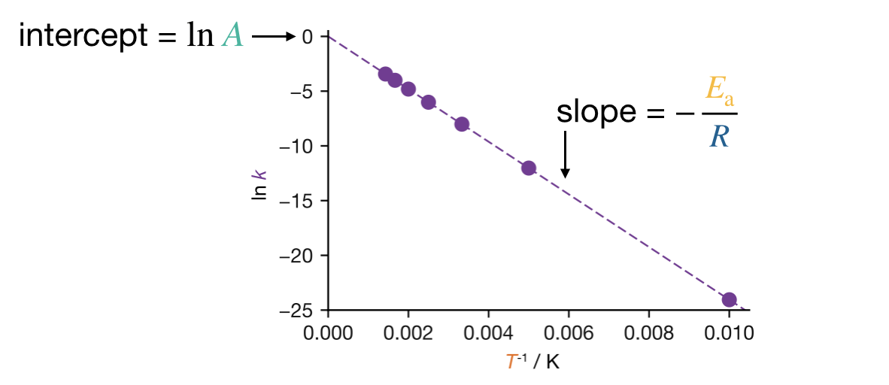
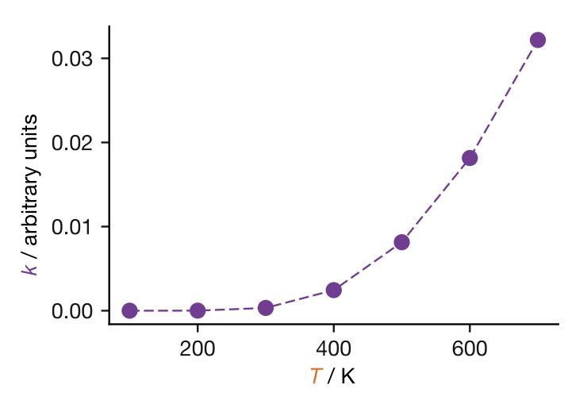
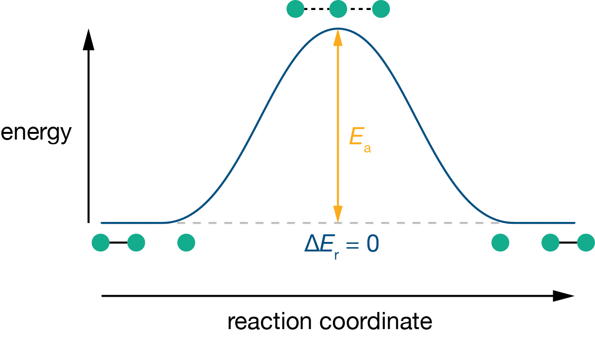
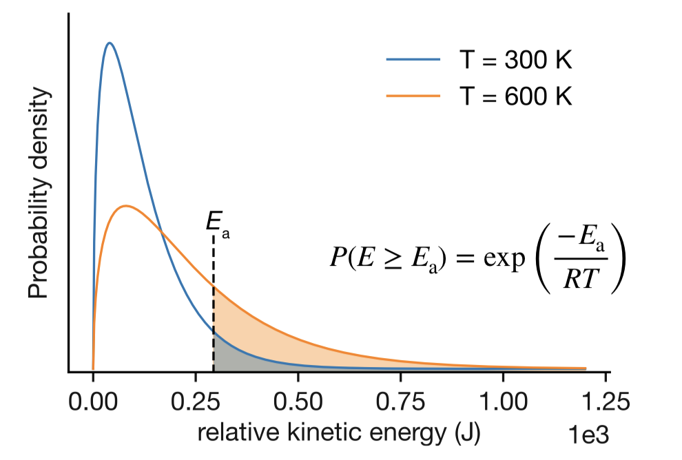
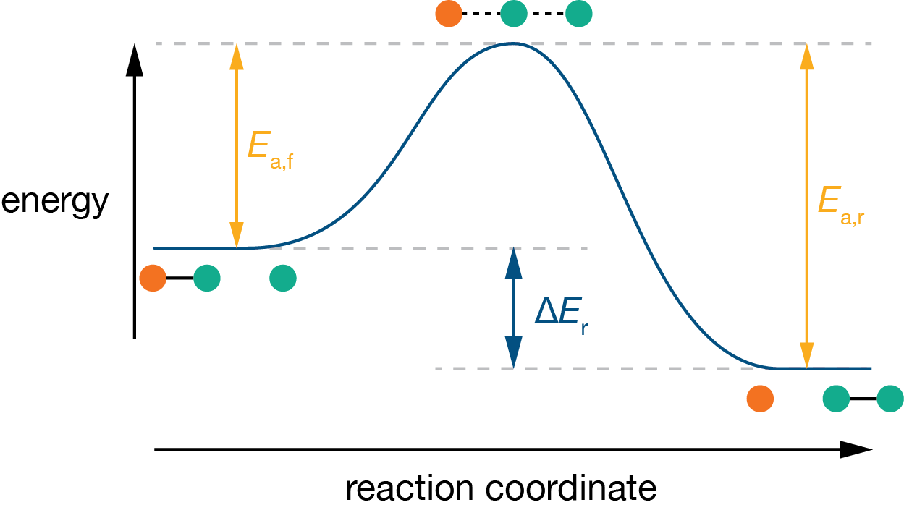
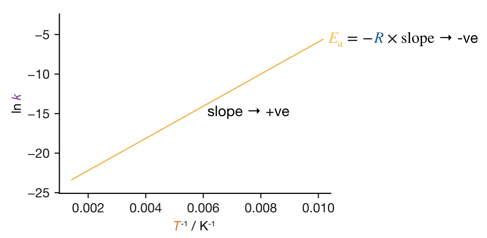
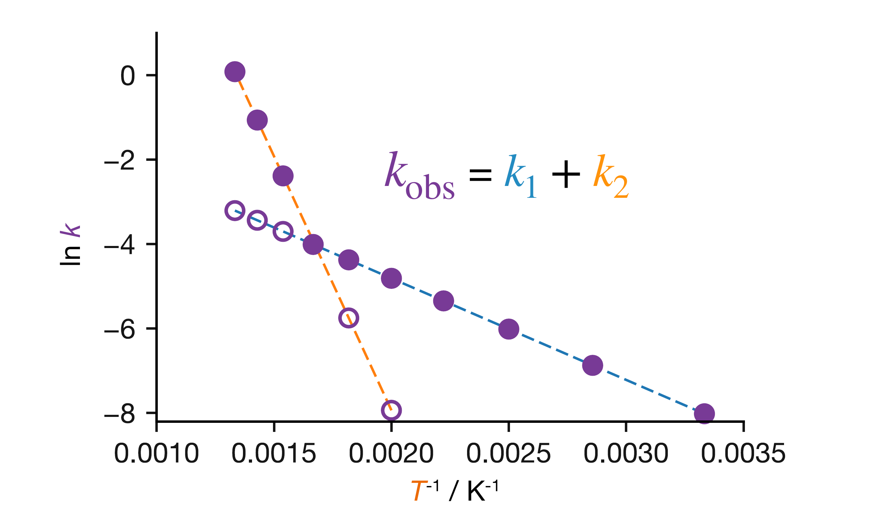
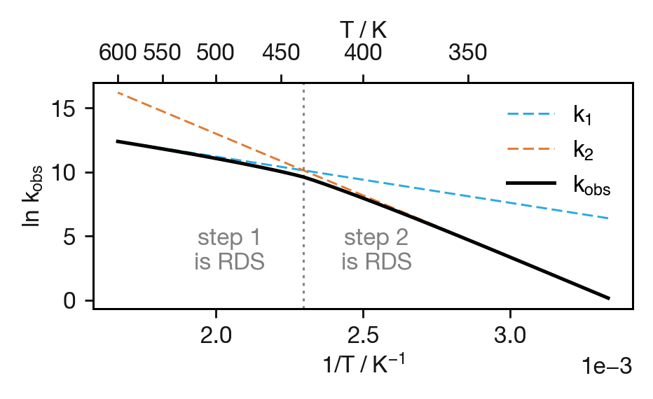

Mathematical Foundations
Chemical kinetics is about how fast or slow reactions are—that is, the rates at which reactants are consumed and products are formed. Describing rates of change is exactly what calculus does, so differentiation and integration are central tools throughout this course. We also make heavy use of exponentials and logarithms, both because exponential functions arise naturally from the underlying mathematics and because logarithms let us convert curved data into straight-line plots for analysis.
You will have met all of this material in CH12004. This chapter collects the key results and techniques in one place for easy reference. If any of it feels unfamiliar, consult your CH12004 notes or the resources listed at the end of this chapter, and revisit this preface as needed during the course.
0.1 Working with Exponentials and Logarithms
Exponential functions and logarithms appear throughout chemical kinetics. This section collects the key identities and techniques you will need.
0.1.1 Exponential Functions
The exponential function \(\mathrm{e}^x\) (also written \(\exp(x)\)) has a special mathematical property: it is the only function whose derivative equals itself. This means that whenever a quantity changes at a rate proportional to its current value, the solution involves an exponential—a situation we will encounter repeatedly.
The following identities are useful for manipulating exponential expressions:
\[\mathrm{e}^{a+b} = \mathrm{e}^a \mathrm{e}^b\]
\[\mathrm{e}^{-a} = \frac{1}{\mathrm{e}^a}\]
\[(\mathrm{e}^a)^n = \mathrm{e}^{na}\]
\[\mathrm{e}^0 = 1\]
0.1.2 Logarithmic Functions
The natural logarithm \(\ln x\) is the inverse of the exponential function: if \(y = \mathrm{e}^x\), then \(x = \ln y\).
The following identities are useful for manipulating logarithmic expressions:
\[\ln(ab) = \ln a + \ln b\]
\[\ln\left(\frac{a}{b}\right) = \ln a - \ln b\]
\[\ln(a^n) = n \ln a\]
\[\ln 1 = 0\]
\[\ln \mathrm{e} = 1\]
A particularly useful rearrangement combines two of these:
\[\ln\left(\frac{a}{b}\right) = -\ln\left(\frac{b}{a}\right)\]
0.1.3 Converting Between Exponential and Logarithmic Forms
The relationship between exponentials and logarithms can be written as:
\[y = \mathrm{e}^x \iff x = \ln y\]
This equivalence is essential when rearranging equations. For example, if we have an equation of the form:
\[y = A \mathrm{e}^{bx}\]
we can take the natural logarithm of both sides to obtain:
\[\ln y = \ln\left(A \mathrm{e}^{bx}\right) = \ln A + \ln\left(\mathrm{e}^{bx}\right) = \ln A + bx\]
Each step uses one of the logarithm identities listed above. Make sure you can follow—and reproduce—this chain of reasoning.
0.2 Linearising Exponential Equations
A common task in experimental science is converting a curved relationship into a straight line suitable for graphical analysis. If we have data that we believe follow an exponential relationship, plotting the raw data gives a curve. By taking logarithms, we can transform this into a straight line, making it easier to test our hypothesis and extract parameters.
0.2.1 General Approach
For an equation of the form:
\[y = A\mathrm{e}^{bx}\]
where \(A\) and \(b\) are constants, we take the natural logarithm of both sides:
\[\ln y = \ln A + bx\]
This has the form of a straight line (\(y' = c + mx'\)):
\[\underbrace{\ln y}_{y'} = \underbrace{\ln A}_{c} + \underbrace{b}_{m}\underbrace{x}_{x'}\]
So plotting \(\ln y\) against \(x\) gives a straight line with:
- Slope \(= b\)
- Intercept \(= \ln A\) (and hence \(A = \mathrm{e}^{\text{intercept}}\))
0.2.2 Example
Suppose we measure a quantity \(y\) at several values of \(x\) and suspect that \(y = 5\mathrm{e}^{-0.3x}\). Plotting \(y\) against \(x\) gives a curve, but plotting \(\ln y\) against \(x\) gives a straight line with slope \(-0.3\) and intercept \(\ln 5 \approx 1.61\). If the data fall on a straight line in this transformed plot, our hypothesis is confirmed, and we can read off the parameters from the slope and intercept.
This technique—plotting a transformed variable to produce a straight line—will be one of our most important analytical tools.
0.3 Differentiation
The derivative of a function tells us its rate of change. If \(y\) depends on \(x\), then \(\frac{\mathrm{d}y}{\mathrm{d}x}\) tells us how rapidly \(y\) changes when \(x\) changes by a small amount. Graphically, the derivative at any point equals the slope of the tangent to the curve at that point.
In this course, our functions typically describe how concentrations change with time, so the derivative \(\frac{\mathrm{d}[\mathrm{A}]}{\mathrm{d}t}\) tells us how rapidly the concentration of a species is changing at a given moment.
0.3.1 Key Results
The derivatives we use most frequently are:
| Function \(f(x)\) | Derivative \(\frac{\mathrm{d}f}{\mathrm{d}x}\) |
|---|---|
| \(x^n\) | \(nx^{n-1}\) |
| \(\mathrm{e}^{x}\) | \(\mathrm{e}^{x}\) |
| \(\mathrm{e}^{ax}\) | \(a\mathrm{e}^{ax}\) |
| \(\ln x\) | \(\frac{1}{x}\) |
| constant | \(0\) |
For a function multiplied by a constant:
\[\frac{\mathrm{d}}{\mathrm{d}x}\left(Af(x)\right) = A\frac{\mathrm{d}f}{\mathrm{d}x}\]
0.3.2 The Special Property of Exponentials
The exponential function is unique in that its derivative is proportional to itself:
\[\frac{\mathrm{d}}{\mathrm{d}x}\left(A\mathrm{e}^{bx}\right) = Ab\mathrm{e}^{bx} = b \times \left(A\mathrm{e}^{bx}\right)\]
This means that whenever the rate of change of a quantity is proportional to the quantity itself, the solution is an exponential function.
0.4 Integration
Integration is the reverse of differentiation. If differentiation tells us the rate of change of a function, integration lets us reconstruct the function from its rate of change. In this course, we will often know how rapidly a concentration is changing (from a rate equation) and need to work out how the concentration itself evolves over time.
0.4.1 Key Results
The integrals we use most frequently are:
| Function \(f(x)\) | Integral \(\int f(x)\,\mathrm{d}x\) |
|---|---|
| \(x^n\) (for \(n \neq -1\)) | \(\frac{x^{n+1}}{n+1} + c\) |
| \(\frac{1}{x}\) | \(\ln x + c\) |
| \(\frac{1}{x^2}\) | \(-\frac{1}{x} + c\) |
| \(\mathrm{e}^{ax}\) | \(\frac{1}{a}\mathrm{e}^{ax} + c\) |
The constant \(c\) is the “constant of integration”—it disappears when we use definite integrals with limits.
0.4.2 Definite Integrals
When we integrate between specific limits:
\[\int_a^b f(x)\,\mathrm{d}x = \left[F(x)\right]_a^b = F(b) - F(a)\]
where \(F(x)\) is the antiderivative (indefinite integral) of \(f(x)\).
0.4.3 Example: Solving a Differential Equation by Separation of Variables
A technique we will use repeatedly in this course is separation of variables. The idea is straightforward: if we have an equation relating \(\frac{\mathrm{d}y}{\mathrm{d}x}\) to \(y\) and \(x\), we rearrange so that everything involving \(y\) is on one side and everything involving \(x\) is on the other, then integrate both sides.
For example, suppose:
\[\frac{\mathrm{d}y}{\mathrm{d}t} = -ky\]
where \(k\) is a constant. We rearrange to separate the variables \(y\) and \(t\):
\[\frac{\mathrm{d}y}{y} = -k\,\mathrm{d}t\]
Now we integrate both sides. On the left, we integrate with respect to \(y\) from the initial value \(y_0\) (at \(t = 0\)) to the value at time \(t\), which we call \(y_t\). On the right, we integrate with respect to \(t\) from \(0\) to \(t\):
\[\int_{y_0}^{y_t} \frac{\mathrm{d}y}{y} = \int_0^t -k\,\mathrm{d}t\]
The left-hand side is an integral of \(1/y\), which gives \(\ln y\). The right-hand side is an integral of a constant:
\[\left[\ln y\right]_{y_0}^{y_t} = \left[-kt\right]_0^t\]
Applying the limits:
\[\ln y_t - \ln y_0 = -kt\]
\[\ln y_t = \ln y_0 - kt\]
Taking the exponential of both sides:
\[y_t = y_0 \mathrm{e}^{-kt}\]
We have solved the differential equation: if something decreases at a rate proportional to its current value, it decays exponentially. This result will appear in the very first lecture on reaction kinetics.
0.5 Additional Resources
- Your CH12004 notes — review the sections on differentiation and integration
- MASH (Mathematics Resources Centre) — offers drop-in support and online resources: https://www.bath.ac.uk/professional-services/mathematics-resources-centre-mash/
- Textbooks:
- Introduction to Contextual Maths in Chemistry (Dickinson & McKinley)
- Foundations of Science Mathematics (Sivia, Rhodes & Rawlings)
1 Introduction to Chemical Kinetics
1.1 Why Study Reaction Kinetics?
Chemistry is fundamentally concerned with change: the transformation of substances into new forms with different properties. When we mix reactants together, we want to know not just whether a reaction will occur, but how rapidly it will proceed. While thermodynamics provides powerful tools for determining whether a particular chemical change is favourable and what the final equilibrium composition will be, it cannot tell us how quickly this equilibrium will be reached.
A reaction may be thermodynamically favourable yet proceed so slowly that it appears not to happen at all. Consider the conversion of diamond to graphite: this is thermodynamically spontaneous at room temperature and pressure, yet the process occurs at such a negligible rate that diamonds are stable over geological timescales. Conversely, some reactions reach equilibrium in fractions of a second.
Chemical kinetics tells us how fast a reaction proceeds. But kinetics reveals more than just speed: because different molecular-level mechanisms lead to different rate laws, measuring how fast a reaction occurs can tell us how it occurs.
1.2 Describing How Concentrations Change with Time
Let us examine a simple reaction: the conversion of a reactant A into a product B:
\[\mathrm{A} \rightarrow \mathrm{B}\]
We track the progress of this reaction by monitoring concentrations as functions of time. Using square brackets to denote concentration (in \(\mathrm{mol\,dm}^{-3}\)), we write these time-dependent concentrations as \([\mathrm{A}]_t\) and \([\mathrm{B}]_t\). As the reaction proceeds, A is consumed and its concentration falls, while B is formed and its concentration rises, as illustrated in Figure @ref(fig:fig-concentration-profile).

(#fig:fig-concentration-profile)Time evolution of concentrations for the reaction A → B. As the reaction proceeds, the concentration of reactant A decreases while the concentration of product B increases. At any time \(t\), the sum of the two concentrations equals the initial concentration of A (assuming we start with pure A).
Starting from initial values at \(t = 0\), the system evolves toward its final state. We might ask how much product B is present after a given time, how long it takes for a certain percentage of A to convert, or how changes in temperature or concentration affect the reaction speed. Answering these questions requires us to understand how reaction rates relate to concentrations.
1.3 Reaction Rates
We quantify how quickly a reaction occurs in terms of the rate at which concentrations change with time. For our simple A → B reaction, the reaction rate can be expressed as either the rate of disappearance of A or the rate of appearance of B. If the rate were constant, calculating it would be straightforward: we would simply measure the change in concentration over a time interval:
\[\text{change in [A] per unit time} = \frac{[\mathrm{A}]_{t_2} - [\mathrm{A}]_{t_1}}{t_2 - t_1} = \frac{\Delta[\mathrm{A}]}{\Delta t}\]

(#fig:fig-rate-slope)The reaction rate at any instant equals the slope of the tangent to the concentration-time curve at that point. For a reaction where the rate decreases over time (as reactant is consumed), the slope becomes less steep as the reaction progresses.
In general, however, reaction rates are not constant; reactions typically slow down as reactant is consumed. The ratio \(\Delta[\mathrm{A}]/\Delta t\) gives only the average rate over the interval \(\Delta t\). To describe the rate at a particular instant, we take the limit as \(\Delta t \rightarrow 0\). Geometrically, this means drawing a tangent to the concentration–time curve at the time of interest; the slope of that tangent is the instantaneous rate (Figure @ref(fig:fig-rate-slope)). Formally, this limit defines the derivative, and we can write the rate in terms of either species:
\[\text{rate} = -\frac{\mathrm{d}[\mathrm{A}]}{\mathrm{d}t} = +\frac{\mathrm{d}[\mathrm{B}]}{\mathrm{d}t}\]
Because \([\mathrm{A}]\) decreases with time, \(\mathrm{d}[\mathrm{A}]/\mathrm{d}t\) is negative. The minus sign in the first expression ensures the rate comes out positive, consistent with the convention that reaction rates are always positive quantities. The units of reaction rate are concentration per unit time: \(\mathrm{mol\,dm}^{-3}\,\mathrm{s}^{-1}\).
For reactions with more complex stoichiometry, the relationship between concentration changes requires appropriate stoichiometric factors. Consider a reaction where one molecule of A combines with two molecules of B to form one molecule of C:
\[\mathrm{A} + 2\mathrm{B} \rightarrow \mathrm{C}\]

(#fig:fig-stoich-profiles)Concentration profiles for the reaction A + 2B → C. Species B is consumed twice as fast as A, reflecting the 2:1 stoichiometric ratio. The rate of formation of C equals the rate of consumption of A.
B is consumed twice as rapidly as A (Figure @ref(fig:fig-stoich-profiles)). This means that \(-\mathrm{d}[\mathrm{A}]/\mathrm{d}t\) and \(-\mathrm{d}[\mathrm{B}]/\mathrm{d}t\) give different numerical values, so our choice of which species to monitor would seem to affect the “rate” we report. To define a single, unambiguous reaction rate, we divide the rate of change of each species by its stoichiometric coefficient in the balanced equation. For A + 2B → C, this gives:
\[\text{rate} = -\frac{\mathrm{d}[\mathrm{A}]}{\mathrm{d}t} = -\frac{1}{2}\frac{\mathrm{d}[\mathrm{B}]}{\mathrm{d}t} = +\frac{\mathrm{d}[\mathrm{C}]}{\mathrm{d}t}\]
1.4 Mass Balance
But where do these stoichiometric factors come from? The answer follows from a simple principle: chemical reactions cannot create or destroy atoms, only rearrange them. This conservation of mass links the rates at which different species are produced and consumed.
Consider our simple reaction A → B. If each molecule of A converts into exactly one molecule of B, then at any time \(t\) the total number of molecules, and hence the total concentration, remains constant:
\[[\mathrm{A}]_t + [\mathrm{B}]_t = [\mathrm{A}]_0 + [\mathrm{B}]_0\]
If we start with pure A, so that \([\mathrm{B}]_0 = 0\), this simplifies to:
\[[\mathrm{A}]_t + [\mathrm{B}]_t = [\mathrm{A}]_0\]
Taking the derivative of both sides with respect to time:
\[\frac{\mathrm{d}[\mathrm{A}]}{\mathrm{d}t} + \frac{\mathrm{d}[\mathrm{B}]}{\mathrm{d}t} = 0\]
since the initial concentration \([\mathrm{A}]_0\) is a constant. Rearranging:
\[\frac{\mathrm{d}[\mathrm{B}]}{\mathrm{d}t} = -\frac{\mathrm{d}[\mathrm{A}]}{\mathrm{d}t}\]
This tells us that for this simple reaction, the rate of formation of B exactly equals the rate of consumption of A.
Now consider a reaction where one molecule of A produces two molecules of B:
\[\mathrm{A} \rightarrow 2\mathrm{B}\]
Here, conservation of mass does not imply conservation of moles—we gain one mole of molecules for every mole of A that reacts. To write a mass balance, we note that each A molecule that reacts produces two B molecules. If we define our “conserved quantity” in terms of B-equivalents, then one A is worth two B, giving:
\[2[\mathrm{A}]_t + [\mathrm{B}]_t = 2[\mathrm{A}]_0\]
Taking the derivative:
\[2\frac{\mathrm{d}[\mathrm{A}]}{\mathrm{d}t} + \frac{\mathrm{d}[\mathrm{B}]}{\mathrm{d}t} = 0\]
Rearranging:
\[\frac{\mathrm{d}[\mathrm{B}]}{\mathrm{d}t} = -2\frac{\mathrm{d}[\mathrm{A}]}{\mathrm{d}t}\]
This confirms that B is produced twice as fast as A is consumed—exactly what we expect from the stoichiometry. Denoting the reaction rate by \(\nu\), we can define a single rate that is independent of which species we monitor:
\[\nu = -\frac{\mathrm{d}[\mathrm{A}]}{\mathrm{d}t} = +\frac{1}{2}\frac{\mathrm{d}[\mathrm{B}]}{\mathrm{d}t}\]
For any reaction, mass balance leads to the general expression:
\[\nu = \frac{1}{\nu_\mathrm{X}}\frac{\mathrm{d}[\mathrm{X}]}{\mathrm{d}t}\]
where \(\nu_\mathrm{X}\) is the stoichiometric coefficient of species X, negative for reactants and positive for products. This relationship ensures that the reaction rate \(\nu\) has the same numerical value regardless of which species we use to measure it.
You should be able to: Given a balanced equation, write the reaction rate \(\nu\) in terms of the rate of change of concentration of any species, including the correct stoichiometric factors.
1.5 Rate Laws
Why do most reactions slow down as they progress? As reactant is consumed, fewer reactant molecules remain. With less reactant available, the rate of conversion into products falls. This suggests a general principle: the rate of a reaction depends on the concentrations of the reactants. The mathematical expression that captures this dependence is called a rate law.
Many reactions follow a simple rate law where the rate is proportional to the concentration of each reactant raised to some power:
\[\begin{equation} \nu = k[\mathrm{A}]^a[\mathrm{B}]^b[\mathrm{C}]^c \ldots (\#eq:rate-law-general) \end{equation}\]
This expression contains several important quantities. The proportionality factor \(k\) is called the rate constant: a large rate constant means a fast reaction, a small one a slow reaction. The rate constant depends on temperature but not on concentration.
The exponents \(a\), \(b\), \(c\), etc. are called the order of reaction with respect to reactants A, B, C, etc., and their sum \((a + b + c + \ldots)\) is the overall reaction order. Orders need not be integers; they can be zero, fractional, or even negative.
The orders in a rate law need not reflect the stoichiometry of the overall reaction equation. For example:
\[\mathrm{H}_2 + \mathrm{I}_2 \rightarrow 2\mathrm{HI} \qquad \nu = k[\mathrm{H}_2][\mathrm{I}_2]\]
Here the orders, both 1, happen to match the stoichiometric coefficients. But consider:
\[3\mathrm{ClO}^- \rightarrow \mathrm{ClO}_3^- + 2\mathrm{Cl}^- \qquad \nu = k[\mathrm{ClO}^-]^2\]
The stoichiometric coefficient of ClO\(^-\) is 3, but the reaction is second order in ClO\(^-\).
Not all reactions follow a simple rate law. Consider the formation of hydrogen bromide:
\[\mathrm{H}_2 + \mathrm{Br}_2 \rightarrow 2\mathrm{HBr}\]
This has exactly the same stoichiometry as the H2 + I2 reaction above, so we might expect the same simple rate law. The experimentally determined rate law, however, is:
\[\nu = \frac{k[\mathrm{H}_2][\mathrm{Br}_2]^{1/2}}{1 + k'[\mathrm{HBr}]/[\mathrm{Br}_2]}\]
This is an example of a complex rate law: it cannot be written in the simple power-law form of Eqn. @ref(eq:rate-law-general). The rate is proportional to \([\mathrm{H}_2]\), so the reaction is first order in H2, but the dependence on Br2 and HBr cannot be expressed as a simple power, and we cannot assign a single order with respect to either. Because the order is not defined for every species, the overall reaction order is also undefined.
1.6 Elementary Processes
What determines the form of a rate law? To answer this, we need to look at what happens at the molecular level.
When cyclopropane rearranges to propene, only a single molecule is involved: bonds within the ring break and reform to produce an open-chain isomer. When a hydrogen molecule collides with an iodine molecule and they react to form two molecules of HI, that collision is one event involving two molecules. Each of these is an elementary process (or elementary reaction): a single molecular event that cannot be broken down into simpler steps. Any chemical reaction, no matter how complex its overall stoichiometry, can be decomposed into a sequence of such steps.
We classify elementary processes by their molecularity, the number of reactant molecules that participate. A unimolecular process involves just one molecule, as in the cyclopropane isomerisation. A bimolecular process requires two molecules to collide and react, as in the formation of HI. Termolecular processes, where three molecules come together simultaneously, are rare because the probability of a simultaneous three-body collision is very low. These three cases are illustrated in Figure @ref(fig:fig-molecularity).

(#fig:fig-molecularity)Schematic representation of elementary processes classified by molecularity. Unimolecular processes involve a single molecule (e.g., isomerisation or decomposition). Bimolecular processes involve collision between two molecules. Termolecular processes, involving simultaneous three-body collisions, are rare.
For elementary processes, and only for elementary processes, the rate law directly reflects the molecularity:
| Molecularity | Example | Rate Law |
|---|---|---|
| Unimolecular | \(\mathrm{A} \rightarrow \mathrm{P}\) | \(\nu = k[\mathrm{A}]\) |
| Bimolecular | \(\mathrm{A} + \mathrm{B} \rightarrow \mathrm{P}\) | \(\nu = k[\mathrm{A}][\mathrm{B}]\) |
| Bimolecular | \(2\mathrm{A} \rightarrow \mathrm{P}\) | \(\nu = k[\mathrm{A}]^2\) |
| Termolecular | \(\mathrm{A} + \mathrm{B} + \mathrm{C} \rightarrow \mathrm{P}\) | \(\nu = k[\mathrm{A}][\mathrm{B}][\mathrm{C}]\) |
This direct correspondence between molecularity and reaction order holds because an elementary process represents an actual molecular event. For a unimolecular process, the rate depends only on how many A molecules are present. For a bimolecular process, the rate depends on how often A and B molecules collide. Doubling the concentration of A doubles the number of A molecules available to collide; independently, doubling the concentration of B doubles the number of collision partners. The collision rate is therefore proportional to both \([\mathrm{A}]\) and \([\mathrm{B}]\).
1.7 Complex Reactions
Most reactions we encounter are not elementary processes but rather sequences of elementary steps. The H2 + Br2 reaction, for example, proceeds through a mechanism involving five elementary steps:
- \(\mathrm{Br}_2 \rightarrow 2\mathrm{Br}\)
- \(\mathrm{Br} + \mathrm{H}_2 \rightarrow \mathrm{H} + \mathrm{HBr}\)
- \(\mathrm{H} + \mathrm{Br}_2 \rightarrow \mathrm{Br} + \mathrm{HBr}\)
- \(\mathrm{H} + \mathrm{HBr} \rightarrow \mathrm{Br} + \mathrm{H}_2\)
- \(\mathrm{Br} + \mathrm{Br} \rightarrow \mathrm{Br}_2\)
Each elementary step follows a simple rate law determined by its molecularity, but the overall rate law for a complex reaction emerges from how these steps combine, which is why the overall rate law can be complicated. Conversely, when we observe a complex rate law, this tells us the reaction must proceed through multiple elementary steps.
For complex reactions, we cannot deduce the rate law from the stoichiometry alone; it must be determined experimentally. However, different mechanisms—different sequences of elementary steps—predict different overall rate laws. This gives us a powerful strategy: propose a mechanism, derive the rate law it predicts, and compare the prediction with experiment. Agreement supports the proposed mechanism; disagreement rules it out. Rate laws, therefore, are not merely descriptions of how fast a reaction proceeds—they provide a window into what is happening at the molecular level.
1.8 Units of the Rate Constant
The units of a rate constant depend on the overall order of the reaction. Since both sides of a rate equation must have the same dimensions, we can deduce the units of \(k\) from dimensional analysis. For a first-order reaction (\(\nu = k[\mathrm{A}]\)):
\[\underbrace{\mathrm{mol\,dm}^{-3}\mathrm{\,s}^{-1}}_{\text{rate}} = [k] \times \underbrace{\mathrm{mol\,dm}^{-3}}_{[\mathrm{A}]}\]
so \([k] = \mathrm{s}^{-1}\). Repeating this analysis for other orders gives:
| Overall order | Units of \(k\) |
|---|---|
| 0 | \(\mathrm{mol\,dm}^{-3}\,\mathrm{s}^{-1}\) |
| 1 | \(\mathrm{s}^{-1}\) |
| 2 | \(\mathrm{mol}^{-1}\,\mathrm{dm}^{3}\,\mathrm{s}^{-1}\) |
| 3 | \(\mathrm{mol}^{-2}\,\mathrm{dm}^{6}\,\mathrm{s}^{-1}\) |
The general pattern for overall order \(n\) is:
\[[k] = \mathrm{mol}^{1-n}\,\mathrm{dm}^{3(n-1)}\,\mathrm{s}^{-1}\]
Comparing rate constants only makes sense when they refer to the same order of reaction. A rate constant of \(10^6\,\mathrm{s}^{-1}\) for a first-order reaction cannot be directly compared with a rate constant of \(10^6\,\mathrm{mol}^{-1}\,\mathrm{dm}^{3}\,\mathrm{s}^{-1}\) for a second-order reaction.
You should be able to: Write the rate law for an elementary process given its molecularity, and determine the units of a rate constant given the overall reaction order.
We now have two mathematical descriptions of a reaction rate. The first defines rate as the derivative of a concentration: \(\nu = -\mathrm{d}[\mathrm{A}]/\mathrm{d}t\). The second expresses rate as a function of concentrations through the rate law: \(\nu = k[\mathrm{A}]^a[\mathrm{B}]^b\ldots\). Setting these equal gives a differential equation whose solution is the concentration profile, \([\mathrm{A}]_t\). Much of chemical kinetics involves moving between these two descriptions: from experimental concentration data to rate laws, and from rate laws to predicted concentration profiles. Because different mechanisms predict different rate laws, this interplay between measurement and prediction also provides a route from macroscopic observations to molecular-level understanding.
1.9 Key Concepts
- Thermodynamics tells us whether a reaction can occur; kinetics tells us how fast it proceeds.
- The reaction rate \(\nu\) is defined as the rate of change of concentration, with stoichiometric factors ensuring a single unambiguous value regardless of which species we monitor.
- Mass balance (conservation of mass) provides the physical basis for the stoichiometric factors in rate expressions.
- A rate law describes how the rate depends on concentrations. The reaction orders need not match the stoichiometric coefficients.
- Elementary processes are single molecular events (unimolecular, bimolecular, or termolecular). Only for elementary processes do the orders directly reflect the molecularity.
- Complex reactions consist of sequences of elementary steps. Their rate laws must be determined experimentally.
- Different mechanisms predict different rate laws. Comparing predicted and experimental rate laws provides insight into the molecular-level mechanism of a reaction.
- The units of a rate constant depend on the overall reaction order: for an \(n\)th-order reaction, \([k] = \mathrm{mol}^{1-n}\,\mathrm{dm}^{3(n-1)}\,\mathrm{s}^{-1}\).
2 Integrated Rate Laws
In the previous chapter, we saw that rate laws provide a window into how reactions work at the molecular level. The formation of HI has the simple rate law \(\nu = k[\mathrm{H}_2][\mathrm{I}_2]\), but the formation of HBr (despite its similar stoichiometry) follows a complex rate law that reflects a multi-step chain mechanism. Different mechanisms produce different rate laws. To use rate laws as a tool for understanding mechanisms, however, we first need to be able to extract them from experimental data.
The challenge is that our rate laws are written in terms of rates, derivatives such as \(\mathrm{d}[\mathrm{A}]/\mathrm{d}t\), whereas what we typically measure in the laboratory is concentration as a function of time. Consider, for example, the thermal decomposition of azomethane (CH3N2CH3), studied at \(2.18 \times 10^4\,\mathrm{Pa}\) and \(576\,\mathrm{K}\):
| \(t\) / min | 0 | 30 | 60 | 90 | 120 | 150 | 180 |
|---|---|---|---|---|---|---|---|
| \([\text{azomethane}]\) / \(10^{-3}\,\mathrm{mol\,dm}^{-3}\) | 8.70 | 6.52 | 4.89 | 3.67 | 2.75 | 2.06 | 1.55 |
What is the rate law for this reaction? What is the rate constant? We cannot answer these questions just by inspecting the raw data. We need a strategy for connecting our differential rate laws to concentration–time measurements.
The approach is straightforward: propose a rate law, integrate it to predict how \([\mathrm{A}]_t\) should depend on time, and then compare that prediction with the experimental data. If the prediction fits, we have our rate law and rate constant; if not, we try a different order.
2.1 Zeroth-Order Reactions
To integrate a differential rate law, we use the technique of separation of variables: we rearrange so that everything involving concentration is on one side and everything involving time is on the other, then integrate each side independently between appropriate limits (using the techniques from the Mathematical Foundations chapter). This gives us the integrated rate law: an equation that tells us the concentration \([\mathrm{A}]_t\) as a function of time. We then rearrange this into a linear form suitable for graphical analysis.
For a zeroth-order reaction, the rate is constant, independent of the concentration of the reactant:
\[\frac{\mathrm{d}[\mathrm{A}]}{\mathrm{d}t} = -k\]
The variables are already separated (concentration on the left, time on the right), so we integrate both sides between \(t = 0\) (when \([\mathrm{A}] = [\mathrm{A}]_0\)) and time \(t\) (when \([\mathrm{A}] = [\mathrm{A}]_t\)):
\[\int_{[\mathrm{A}]_0}^{[\mathrm{A}]_t} \mathrm{d}[\mathrm{A}] = \int_0^t -k\,\mathrm{d}t\]
\[[\mathrm{A}]_t - [\mathrm{A}]_0 = -kt\]
Rearranging gives the zeroth-order integrated rate law:
\[\begin{equation} [\mathrm{A}]_t = [\mathrm{A}]_0 - kt (\#eq:zeroth-order-integrated) \end{equation}\]
The differential rate law and this integrated form are two equivalent descriptions of zeroth-order kinetics: one tells us the instantaneous rate of change, the other the accumulated change from the start of the reaction.
Eqn. @ref(eq:zeroth-order-integrated) is already in linear form: a plot of \([\mathrm{A}]_t\) against \(t\) gives a straight line with slope \(-k\) and intercept \([\mathrm{A}]_0\) (Figure @ref(fig:zeroth-order-plot)). Physically, a constant rate means the reaction proceeds at the same speed regardless of how much reactant remains, a situation that can arise, for example, when a reaction is limited by a saturated catalyst surface.
![Zeroth-order kinetics: $[\mathrm{A}]$ decreases linearly with time. A plot of $[\mathrm{A}]$ versus $t$ gives a straight line with slope $-k$ and intercept $[\mathrm{A}]_0$. The concentration reaches zero at $t = [\mathrm{A}]_0/k$, after which the model no longer applies.](lecture_2/figures/zeroth_order_linear.png)
(#fig:zeroth-order-plot)Zeroth-order kinetics: \([\mathrm{A}]\) decreases linearly with time. A plot of \([\mathrm{A}]\) versus \(t\) gives a straight line with slope \(-k\) and intercept \([\mathrm{A}]_0\). The concentration reaches zero at \(t = [\mathrm{A}]_0/k\), after which the model no longer applies.
2.2 First-Order Reactions
For a first-order reaction, the rate is proportional to the concentration of the reactant:
\[\frac{\mathrm{d}[\mathrm{A}]}{\mathrm{d}t} = -k[\mathrm{A}]\]
We separate variables and integrate:
\[\frac{\mathrm{d}[\mathrm{A}]}{[\mathrm{A}]} = -k\,\mathrm{d}t\]
\[\int_{[\mathrm{A}]_0}^{[\mathrm{A}]_t} \frac{\mathrm{d}[\mathrm{A}]}{[\mathrm{A}]} = \int_0^t -k\,\mathrm{d}t\]
\[\ln[\mathrm{A}]_t - \ln[\mathrm{A}]_0 = -kt\]
This gives the first-order integrated rate law in linear form:
\[\begin{equation} \ln[\mathrm{A}]_t = \ln[\mathrm{A}]_0 - kt (\#eq:first-order-integrated-linear) \end{equation}\]
A plot of \(\ln[\mathrm{A}]_t\) against \(t\) gives a straight line with slope \(-k\) and intercept \(\ln[\mathrm{A}]_0\) (Figure @ref(fig:first-order-plot)). Taking the exponential of both sides gives the equivalent exponential form:
\[\begin{equation} [\mathrm{A}]_t = [\mathrm{A}]_0\,\mathrm{e}^{-kt} (\#eq:first-order-integrated-exp) \end{equation}\]
This is the exponential decay we derived from general principles in the Mathematical Foundations chapter: whenever a quantity changes at a rate proportional to its current value, the result is an exponential function. First-order kinetics means the concentration decreases by the same fraction in each successive time interval. If 25% decomposes in the first 30 minutes, then 25% of what remains decomposes in the next 30 minutes, and the next, regardless of how much is left.
![First-order kinetics: $[\mathrm{A}]$ decays exponentially, so a plot of $\ln[\mathrm{A}]$ versus $t$ gives a straight line with slope $-k$ and intercept $\ln[\mathrm{A}]_0$. The concentration approaches zero asymptotically but never reaches it.](lecture_2/figures/first_order_linear.png)
(#fig:first-order-plot)First-order kinetics: \([\mathrm{A}]\) decays exponentially, so a plot of \(\ln[\mathrm{A}]\) versus \(t\) gives a straight line with slope \(-k\) and intercept \(\ln[\mathrm{A}]_0\). The concentration approaches zero asymptotically but never reaches it.
2.3 Second-Order Reactions
For a reaction that is second order in a single reactant:
\[\frac{\mathrm{d}[\mathrm{A}]}{\mathrm{d}t} = -k[\mathrm{A}]^2\]
Separating variables and integrating:
\[\frac{\mathrm{d}[\mathrm{A}]}{[\mathrm{A}]^2} = -k\,\mathrm{d}t\]
\[\int_{[\mathrm{A}]_0}^{[\mathrm{A}]_t} \frac{\mathrm{d}[\mathrm{A}]}{[\mathrm{A}]^2} = \int_0^t -k\,\mathrm{d}t\]
\[-\frac{1}{[\mathrm{A}]_t} + \frac{1}{[\mathrm{A}]_0} = -kt\]
Rearranging:
\[\begin{equation} \frac{1}{[\mathrm{A}]_t} = \frac{1}{[\mathrm{A}]_0} + kt (\#eq:second-order-integrated) \end{equation}\]
A plot of \(1/[\mathrm{A}]_t\) against \(t\) gives a straight line with slope \(+k\) and intercept \(1/[\mathrm{A}]_0\) (Figure @ref(fig:second-order-plot)). Notice that the slope is positive here, unlike the zeroth- and first-order cases where it is negative. Physically, because the rate depends on the square of the concentration, halving the concentration quarters the rate. Second-order reactions therefore slow down much more dramatically than first-order reactions as the reactant is consumed.
![Second-order kinetics: $[\mathrm{A}]$ decays more slowly than exponentially as the rate drops with the square of the concentration. A plot of $1/[\mathrm{A}]$ versus $t$ gives a straight line with slope $+k$ (positive, unlike the zeroth- and first-order cases) and intercept $1/[\mathrm{A}]_0$.](lecture_2/figures/second_order_linear.png)
(#fig:second-order-plot)Second-order kinetics: \([\mathrm{A}]\) decays more slowly than exponentially as the rate drops with the square of the concentration. A plot of \(1/[\mathrm{A}]\) versus \(t\) gives a straight line with slope \(+k\) (positive, unlike the zeroth- and first-order cases) and intercept \(1/[\mathrm{A}]_0\).
Aside: The Factor of 2 in Second-Order Rate Laws
Some textbooks write the second-order integrated rate law with an extra factor of 2 in front of \(k\). This arises when the reaction is an elementary process, \(2\mathrm{A} \rightarrow \text{products}\), and we account for the stoichiometric factor from Chapter 1. Each reaction event consumes two molecules of A, so \(\mathrm{d}[\mathrm{A}]/\mathrm{d}t = -2k[\mathrm{A}]^2\), and the factor of 2 carries through the integration to give \(1/[\mathrm{A}]_t = 1/[\mathrm{A}]_0 + 2kt\). Whether the 2 appears explicitly or is absorbed into the definition of \(k\) is a matter of convention (it does not change the underlying chemistry), but it can cause confusion when comparing results from different sources. In these notes we use \(k\) to absorb any stoichiometric factors, consistent with the convention in Chapter 1.
You should be able to: Derive the integrated rate law for a zeroth-, first-, or second-order reaction starting from the differential rate law, using separation of variables and integration.
2.4 Distinguishing Reaction Orders by Graphical Analysis
Each reaction order produces a different linear relationship, making it possible to distinguish them by plotting the same data in three different ways. The table below collects the key results, and Figure @ref(fig:integrated-rate-laws-overview) shows the corresponding concentration profiles and linear plots.
| Order | Integrated form | Linear plot | Slope |
|---|---|---|---|
| 0 | \([\mathrm{A}]_t = [\mathrm{A}]_0 - kt\) | \([\mathrm{A}]\) vs \(t\) | \(-k\) |
| 1 | \([\mathrm{A}]_t = [\mathrm{A}]_0\,\mathrm{e}^{-kt}\) | \(\ln[\mathrm{A}]\) vs \(t\) | \(-k\) |
| 2 | \(\frac{1}{[\mathrm{A}]_t} = \frac{1}{[\mathrm{A}]_0} + kt\) | \(\frac{1}{[\mathrm{A}]}\) vs \(t\) | \(+k\) |

(#fig:integrated-rate-laws-overview)Concentration–time profiles (left) and the corresponding linear plots (right) for zeroth-, first-, and second-order reactions. Each reaction order produces a distinct curve shape, but differences are much easier to identify in the linear plots: data that obey a given rate law fall on a straight line, while data that do not show systematic curvature.
Each reaction order predicts a different functional form for concentration as a function of time—a different curve shape. We could, in principle, plot the raw concentration–time data and try to judge whether the curve looks exponential (first-order), linear (zeroth-order), or like \(1/(a + bt)\) (second-order). In practice, though, judging whether a curve matches one functional form rather than another is very difficult by eye, and even simple statistical tests work much better with linear data. By rearranging each integrated rate law into a linear form, we turn the problem into one where the answer is much easier to see: data that are consistent with a particular rate law will fall on a straight line in the corresponding plot, while data that are inconsistent will show systematic curvature.
We can therefore test candidate rate laws by plotting the same dataset in each of the three linear forms and seeing which (if any) gives a straight line. The slope of that line gives the rate constant.
These graphical tests apply whenever a reaction follows a simple rate law of the form \(\nu = k[\mathrm{A}]^n\) (including non-integer orders such as \(n = \tfrac{1}{2}\)), regardless of whether the underlying mechanism involves a single step or multiple steps. This is an important distinction: graphical analysis tells us the rate law, not the mechanism. A reaction that gives a straight line on a first-order plot might be a simple unimolecular decomposition, or it might involve a complex sequence of steps that happens to produce an overall first-order rate law. Determining the rate law is the essential first step; working out the mechanism requires further investigation.
2.5 Worked Example: Decomposition of Azomethane
Which of our three models fits the azomethane data from the start of this chapter? We test each of the three integrated rate laws by plotting the data in the corresponding linear form. Figure @ref(fig:azomethane-linear-plots) shows the result: plotting \(\ln[\text{azomethane}]\) against \(t\) gives a straight line, consistent with first-order kinetics, with slope \(-k = -9.6 \times 10^{-3}\,\mathrm{min}^{-1}\). The other two linear forms—\([\text{azomethane}]\) against \(t\) and \(1/[\text{azomethane}]\) against \(t\)—show clear curvature, ruling out zeroth- and second-order rate laws.
![Testing the azomethane decomposition data against each linear form. Only the first-order plot ($\ln[\text{azomethane}]$ vs $t$, centre) gives a straight line; the zeroth-order (left) and second-order (right) plots show systematic curvature. The slope of the first-order plot gives $k = 9.6 \times 10^{-3}\,\mathrm{min}^{-1}$.](lecture_2/figures/azomethane_linear_plots.png)
(#fig:azomethane-linear-plots)Testing the azomethane decomposition data against each linear form. Only the first-order plot (\(\ln[\text{azomethane}]\) vs \(t\), centre) gives a straight line; the zeroth-order (left) and second-order (right) plots show systematic curvature. The slope of the first-order plot gives \(k = 9.6 \times 10^{-3}\,\mathrm{min}^{-1}\).
We now have our answer to the question posed at the start of this chapter: the decomposition of azomethane follows first-order kinetics, with a rate constant of \(k = 9.6 \times 10^{-3}\,\mathrm{min}^{-1}\).
You should be able to: Test whether concentration–time data are consistent with a given reaction order by plotting in the appropriate linear form, and extract the rate constant from the slope.
2.6 Reactions with Two Different Reactants
The integrated rate laws above all involve a single reactant species. For a reaction between two different species, \(\mathrm{A} + \mathrm{B} \rightarrow \text{products}\), the differential rate law is:
\[\frac{\mathrm{d}[\mathrm{A}]}{\mathrm{d}t} = -k[\mathrm{A}][\mathrm{B}]\]
Integration is more complex here because the right-hand side contains two concentrations that both change with time. The problem can be solved analytically using mass balance and partial fractions, giving the full integrated result:
\[\begin{equation} kt = \frac{1}{[\mathrm{B}]_0 - [\mathrm{A}]_0} \ln\!\left(\frac{[\mathrm{B}]_t / [\mathrm{B}]_0}{[\mathrm{A}]_t / [\mathrm{A}]_0}\right) (\#eq:second-order-two-reactants) \end{equation}\]
The derivation of this result is given in Appendix @ref(appendix-two-reactants); you are not expected to reproduce it. The result requires \([\mathrm{A}]_0 \neq [\mathrm{B}]_0\), since otherwise the denominator is zero. If the initial concentrations are equal, the problem reduces to the single-reactant second-order case (Eqn. @ref(eq:second-order-integrated)).
A common simplification, the isolation method, is to use one reactant in large excess. If \([\mathrm{B}]_0\) is, say, 100 times larger than \([\mathrm{A}]_0\), then even after all of A has reacted, \([\mathrm{B}]\) has decreased by only 1%. For practical purposes \([\mathrm{B}]\) remains constant throughout the reaction, and the rate law simplifies to:
\[\frac{\mathrm{d}[\mathrm{A}]}{\mathrm{d}t} \approx -k'[\mathrm{A}] \quad \text{where } k' = k[\mathrm{B}]_0\]
This is called a pseudo-first-order rate law: the reaction is second-order overall, but behaves as first-order under these conditions. The problem reduces to the first-order integrated rate law we have already derived, and all of the graphical analysis from this chapter applies directly.
2.7 Key Concepts
- The rate law tells us about the reaction mechanism, so extracting rate laws from experimental data is a central goal of chemical kinetics.
- Integrated rate laws relate concentration to time, connecting differential rate laws to experimentally measurable quantities.
- The strategy is: propose a rate law, integrate to predict \([\mathrm{A}]_t\), and compare with data.
- Each reaction order gives a different integrated rate law with a characteristic linear form.
- Plotting data in the appropriate linear form tests whether a given rate law is consistent with the data. A straight line is consistent with the proposed order; the slope gives the rate constant.
- For zeroth-order: \([\mathrm{A}]\) vs \(t\) is linear (slope \(-k\)). For first-order: \(\ln[\mathrm{A}]\) vs \(t\) is linear (slope \(-k\)). For second-order: \(1/[\mathrm{A}]\) vs \(t\) is linear (slope \(+k\)).
- First-order kinetics corresponds to exponential decay: \([\mathrm{A}]_t = [\mathrm{A}]_0\,\mathrm{e}^{-kt}\).
- Reactions between two different species can be simplified to pseudo-first-order kinetics by using one reactant in large excess.
3 Methods for Determining Rate Laws from Experimental Data
Different reaction mechanisms predict different rate laws. If we can determine the rate law from experimental data, we gain direct information about the microscopic mechanism — the sequence of molecular events that makes a reaction happen. But how do we carry out this analysis systematically? And what do we do when a reaction involves more than one reactant? We have already seen (in Lecture 2) that each reaction order gives a different linear form when we plot concentration–time data appropriately. Here we develop this idea into a complete toolkit of four complementary methods for extracting rate laws from experiment.
3.1 The Integral Method
The integral method is the most direct approach. Given concentration–time data for a reaction, we plot the data in each of the linear forms from the summary table and look for the plot that gives a straight line. The order of that straight-line plot tells us the reaction order; the rate constant can be extracted from the slope.
| Order | Linear plot | Slope |
|---|---|---|
| 0 | \([\mathrm{A}]\) vs \(t\) | \(-k\) |
| 1 | \(\ln[\mathrm{A}]\) vs \(t\) | \(-k\) |
| 2 | \(1/[\mathrm{A}]\) vs \(t\) | \(+k\) |
3.1.1 Worked Example: Azomethane Decomposition Revisited
We can illustrate this with the azomethane decomposition data from Lecture 2:
| \(t\) / min | 0 | 30 | 60 | 90 | 120 | 150 | 180 |
|---|---|---|---|---|---|---|---|
| \([\mathrm{azomethane}]\) / \(10^{-3}\,\mathrm{mol\,dm}^{-3}\) | 8.70 | 6.52 | 4.89 | 3.67 | 2.75 | 2.06 | 1.55 |
Plotting \(\ln[\mathrm{azomethane}]\) against \(t\) gives a straight line with slope \(-k = -9.6 \times 10^{-3}\,\mathrm{min}^{-1}\), consistent with first-order kinetics. But to be rigorous, we should also check that the data are not consistent with the other candidate rate laws. Figure @ref(fig:azomethane-second-order-rejection) shows the result of plotting \(1/[\mathrm{azomethane}]\) against \(t\): the data clearly curve, ruling out second-order kinetics.
![The azomethane decomposition data plotted as $1/[\mathrm{azomethane}]$ versus time. The curvature indicates that these data are not consistent with a second-order rate law.](lecture_3/figures/azomethane_second_order_rejection.png)
(#fig:azomethane-second-order-rejection)The azomethane decomposition data plotted as \(1/[\mathrm{azomethane}]\) versus time. The curvature indicates that these data are not consistent with a second-order rate law.
This is the essence of the integral method: we test each candidate rate law in turn and reject those that do not give a straight line. A linear plot both confirms the reaction order and provides the rate constant from the slope. If none of the standard plots gives a convincing straight line, the reaction may have a non-integer order or a more complex rate law — situations that arise when a reaction proceeds through a complex mechanism.
You should be able to: Apply the integral method to concentration–time data: plot in the appropriate linear forms, identify which (if any) gives a straight line, and extract the rate constant from the slope.
Aside: Modern Analysis Methods
While we have focused on linear transformations, modern computational methods allow direct non-linear fitting of the integrated rate laws in their original (non-linearised) form. The linear analysis method remains the standard approach in most textbooks, however, and has the practical advantage that it can be applied with nothing more than graph paper and a ruler — or in an exam.
3.2 The Half-Life Method
The integral method requires plotting the data and fitting a straight line. But is there a way to test for first-order kinetics just by inspecting the numbers? It rests on a unique property of exponential functions. For a first-order reaction, the integrated rate law gives:
\[[\mathrm{A}]_t = [\mathrm{A}]_0\,\mathrm{e}^{-kt}\]
What does this exponential decay actually look like? Suppose we start with a concentration of 100 (in arbitrary units). After some time interval, the concentration has dropped to 50. After the same interval again, it drops to 25, then to 12.5, and so on. In each interval the concentration halves — it decreases by the same fraction, not by the same amount. This is fundamentally different from zeroth-order kinetics, where a fixed amount is consumed per unit time (100, 90, 80, 70, …). For first-order kinetics, we multiply by a constant factor; for zeroth-order, we subtract a constant amount.
We can show this algebraically. The ratio of the concentration at two times separated by a fixed interval \(\Delta t\) is:
\[\frac{[\mathrm{A}]_{t+\Delta t}}{[\mathrm{A}]_t} = \frac{[\mathrm{A}]_0\,\mathrm{e}^{-k(t+\Delta t)}}{[\mathrm{A}]_0\,\mathrm{e}^{-kt}} = \mathrm{e}^{-k\Delta t}\]
The initial concentration \([\mathrm{A}]_0\) cancels, and so does \(t\) itself. The ratio depends only on \(k\) and \(\Delta t\) — not on when we start measuring or how much reactant remains. Constant proportional change over equal time intervals is the signature of an exponential, and therefore of first-order kinetics. No other functional form has this property.
The special case where the concentration falls to one-half gives us the half-life (\(t_{1/2}\)): the time taken for the concentration to fall to half its current value. Setting \([\mathrm{A}]_t = \frac{1}{2}[\mathrm{A}]_0\):
\[\frac{1}{2}[\mathrm{A}]_0 = [\mathrm{A}]_0\,\mathrm{e}^{-kt_{1/2}}\]
\[\frac{1}{2} = \mathrm{e}^{-kt_{1/2}}\]
Taking the natural logarithm of both sides:
\[\begin{equation} t_{1/2} = \frac{\ln 2}{k} (\#eq:first-order-half-life) \end{equation}\]
Notice that \(t_{1/2}\) depends only on \(k\), not on \([\mathrm{A}]_0\). The half-life is constant: it takes the same amount of time for the concentration to halve whether we start from \([\mathrm{A}]_0\) or from any later concentration. This is a defining characteristic of first-order kinetics.
But there is nothing special about the factor of one-half in Eqn. @ref(eq:first-order-half-life) — it is simply a convention. If the concentration falls to 0.75 of its value in the first 30 minutes, it falls to 0.75 again in the next 30 minutes, and the next, and so on. We could define a “three-quarter-life” from this just as easily. More generally, for a first-order reaction, the time taken for the concentration to fall to any fixed fraction \(1/n\) of its current value is:
\[\begin{equation} t_{1/n} = \frac{\ln n}{k} (\#eq:first-order-t1n) \end{equation}\]
This depends only on \(k\), not on the concentration. Whether we measure a half-life, a quarter-life, or any other fixed-fraction decay time, the result is the same every time we measure it — and this is true only for first-order kinetics.
3.2.1 Worked Example: Azomethane Revisited
We can use this as an independent check on the azomethane data. Looking at the ratio of successive concentrations, each measured at 30-minute intervals:
| Interval | \([\mathrm{azomethane}]_\mathrm{start}\) | \([\mathrm{azomethane}]_\mathrm{end}\) | Ratio |
|---|---|---|---|
| 0–30 min | 8.70 | 6.52 | 0.75 |
| 30–60 min | 6.52 | 4.89 | 0.75 |
| 60–90 min | 4.89 | 3.67 | 0.75 |
| 90–120 min | 3.67 | 2.75 | 0.75 |
| 120–150 min | 2.75 | 2.06 | 0.75 |
| 150–180 min | 2.06 | 1.55 | 0.75 |
The constant ratio of 0.75 confirms first-order kinetics — without plotting a single graph. We can also extract \(k\) from these data. The concentration falls to \(0.75 = 3/4\) of its value every 30 minutes, so in the notation of Eqn. @ref(eq:first-order-t1n), \(1/n = 3/4\), giving \(n = 4/3\) and \(t_{1/n} = 30\,\mathrm{min}\):
\[k = \frac{\ln(4/3)}{30\,\mathrm{min}} = 9.6 \times 10^{-3}\,\mathrm{min}^{-1}\]
This agrees with the value obtained from the integral method, as it should, since both methods assume first-order kinetics and extract \(k\) from the same underlying exponential. The half-life method is less precise than the graphical method (more sensitive to measurement error in individual data points, rather than fitting a line through all the data), but it provides a quick and intuitive test that does not require plotting.
You should be able to: Derive the first-order half-life expression \(t_{1/2} = \ln 2/k\), and use constant proportional change in concentration–time data to test for first-order kinetics.
3.3 The Isolation Method
So far, we have two methods for extracting rate laws, but both assume the rate depends on a single concentration. Many reactions involve two or more species. Consider a reaction \(\mathrm{A} + \mathrm{B} \rightarrow \text{products}\) with rate law:
\[\nu = k[\mathrm{A}]^\alpha[\mathrm{B}]^\beta\]
The rate depends on both \([\mathrm{A}]\) and \([\mathrm{B}]\), which both change with time. How can we determine the partial orders \(\alpha\) and \(\beta\) separately?
We cannot simply apply the integral method here. For a single-reactant system, we could write a differential equation in one variable and integrate it. With two reactants, both concentrations change simultaneously, and the resulting differential equation generally cannot be solved analytically. Even in the special cases where an analytical solution exists, we do not know \(\alpha\) and \(\beta\) in advance, so we would not know which solution to try. We need a different approach.
The isolation method sidesteps the problem by turning a two-variable system back into a one-variable system. The idea is to make all but one reactant effectively constant. If we use B in large excess — say \([\mathrm{B}]_0 = 1.000\,\mathrm{mol\,dm}^{-3}\) and \([\mathrm{A}]_0 = 0.010\,\mathrm{mol\,dm}^{-3}\) — then even after A is completely consumed, B has only dropped from \(1.000\) to \(0.990\,\mathrm{mol\,dm}^{-3}\): a change of just 1%. For all practical purposes, \([\mathrm{B}]\) has not changed. We can therefore write \([\mathrm{B}]_t \approx [\mathrm{B}]_0\) throughout the reaction, and the rate law becomes:
\[\begin{equation} \nu = k'[\mathrm{A}]^\alpha \quad \text{where } k' = k[\mathrm{B}]_0^\beta (\#eq:pseudo-rate-law) \end{equation}\]
The reaction now behaves as if it depends only on \([\mathrm{A}]\), with a pseudo-rate constant \(k'\) that absorbs the (constant) concentration of B — a pseudo-\(\alpha\)th-order rate law. The specific case \(\alpha = 1\) gives the pseudo-first-order kinetics we encountered in Lecture 2. We can now apply the integral method or half-life method to determine \(\alpha\).
To find \(\beta\), we repeat the experiment with A in large excess (\([\mathrm{A}]_0 \gg [\mathrm{B}]_0\)). Now \([\mathrm{A}]_t \approx [\mathrm{A}]_0\) and:
\[\nu = k''[\mathrm{B}]^\beta \quad \text{where } k'' = k[\mathrm{A}]_0^\alpha\]
Applying the integral method to this simplified rate law gives \(\beta\). This swap-and-repeat approach works well when we can freely choose the concentrations of all reactants, but it is not always practical. If one of the species is a catalyst, for example, we would not normally use it in large excess.
3.3.1 Varying the Excess Concentration
There is another way to find \(\beta\) that does not require swapping which species is in excess. Instead, we keep B in large excess (so the pseudo-\(\alpha\)th-order analysis still works) but repeat the experiment at several different values of \([\mathrm{B}]_0\). Applying the integral or half-life method to each experiment gives a pseudo-rate constant \(k'\), and each experiment gives a different value of \(k'\) because \(k'\) depends on \([\mathrm{B}]_0\) (Eqn. @ref(eq:pseudo-rate-law)). Taking logarithms:
\[\begin{equation} \ln k' = \ln k + \beta\ln[\mathrm{B}]_0 (\#eq:isolation-log-form) \end{equation}\]
A plot of \(\ln k'\) versus \(\ln[\mathrm{B}]_0\) gives a straight line with slope \(\beta\) and intercept \(\ln k\). This determines both the partial order \(\beta\) and the true rate constant \(k\) from a single set of isolation experiments.
You should be able to: Explain how the isolation method simplifies a multi-reactant rate law, and use the relationship \(\ln k' = \ln k + \beta\ln[\mathrm{B}]_0\) (Eqn. @ref(eq:isolation-log-form)) to determine a partial order from pseudo-rate constants.
3.4 The Differential Method (Initial Rates)
What if we cannot — or prefer not to — track concentrations over the full course of a reaction? If we could simply measure the rate at known concentrations, we could use the rate law \(\nu = k[\mathrm{A}]^\alpha[\mathrm{B}]^\beta\) to extract \(\alpha\) and \(\beta\) directly. This is the idea behind the differential method. Taking logarithms separates the contributions of each reactant:
\[\ln\nu = \ln k + \alpha\ln[\mathrm{A}] + \beta\ln[\mathrm{B}]\]
But rate is an instantaneous quantity — how do we measure it at known concentrations? The practical solution is to use initial rates. At \(t = 0\), we know the concentrations exactly (they are just the starting concentrations we prepared), and we can estimate the initial rate \(\nu_0\) from the initial slope of the concentration–time curve. This gives:
\[\begin{equation} \ln\nu_0 = \ln k + \alpha\ln[\mathrm{A}]_0 + \beta\ln[\mathrm{B}]_0 (\#eq:initial-rates-log-form) \end{equation}\]
If we hold \([\mathrm{B}]_0\) constant and vary \([\mathrm{A}]_0\) across a series of experiments, the \(\beta\ln[\mathrm{B}]_0\) term in Eqn. @ref(eq:initial-rates-log-form) is the same in every experiment, and we can write:
\[\ln\nu_0 = (\ln k + \beta\ln[\mathrm{B}]_0) + \alpha\ln[\mathrm{A}]_0\]
A plot of \(\ln\nu_0\) versus \(\ln[\mathrm{A}]_0\) gives a straight line with slope \(\alpha\). Repeating with \([\mathrm{A}]_0\) held constant and \([\mathrm{B}]_0\) varied gives \(\beta\) in the same way.
3.4.1 Worked Example: Determining Orders by Comparing Experiments
In practice, when starting concentrations are chosen as simple multiples, we can often determine orders by direct comparison rather than plotting. The following data for \(\mathrm{A} + \mathrm{B} \rightarrow \text{products}\) illustrate how this works:
| Experiment | \([\mathrm{A}]_0\,/\,\mathrm{mol\,dm}^{-3}\) | \([\mathrm{B}]_0\,/\,\mathrm{mol\,dm}^{-3}\) | \(\nu_0\,/\,\mathrm{mol\,dm}^{-3}\,\mathrm{s}^{-1}\) |
|---|---|---|---|
| 1 | 0.10 | 0.10 | \(1.2 \times 10^{-3}\) |
| 2 | 0.20 | 0.10 | \(2.4 \times 10^{-3}\) |
| 3 | 0.10 | 0.20 | \(4.8 \times 10^{-3}\) |
To find \(\alpha\), we compare experiments 1 and 2, where \([\mathrm{B}]_0\) is the same. The \([\mathrm{B}]_0^\beta\) terms cancel when we take the ratio of rates:
\[\frac{\nu_{0,2}}{\nu_{0,1}} = \frac{k[\mathrm{A}]_{0,2}^\alpha[\mathrm{B}]_{0,2}^\beta}{k[\mathrm{A}]_{0,1}^\alpha[\mathrm{B}]_{0,1}^\beta} = \left(\frac{[\mathrm{A}]_{0,2}}{[\mathrm{A}]_{0,1}}\right)^\alpha = \left(\frac{0.20}{0.10}\right)^\alpha = 2^\alpha\]
The measured ratio is \(\nu_{0,2}/\nu_{0,1} = 2.4 \times 10^{-3}/1.2 \times 10^{-3} = 2\). So \(2^\alpha = 2\), giving \(\alpha = 1\): first order in A.
To find \(\beta\), the same logic applies. We compare experiments 1 and 3, where \([\mathrm{A}]_0\) is held constant so that the \([\mathrm{A}]_0^\alpha\) terms cancel:
\[\frac{\nu_{0,3}}{\nu_{0,1}} = \left(\frac{[\mathrm{B}]_{0,3}}{[\mathrm{B}]_{0,1}}\right)^\beta = \left(\frac{0.20}{0.10}\right)^\beta = 2^\beta\]
The measured ratio is \(4.8 \times 10^{-3}/1.2 \times 10^{-3} = 4\). So \(2^\beta = 4\), giving \(\beta = 2\): second order in B.
The rate law is therefore \(\nu = k[\mathrm{A}][\mathrm{B}]^2\). Once the orders are known, we can find \(k\) by substituting the data from any single experiment back into the rate law. The underlying logic is the same as for the graphical method — we are changing one concentration at a time and seeing how the rate responds — but the comparison is immediate and does not require plotting. This is the same principle behind the isolation method: control one variable, change the other, and see what happens. In the isolation method we achieve this by flooding the system with excess of one reactant; here we achieve it by experimental design, choosing starting concentrations that differ in only one component.
The method of initial rates is flexible — it does not require any reactant to be in large excess, but it does require that we can measure the rate at the very start of the reaction. For very fast reactions (timescales of microseconds or less), this may be experimentally difficult or impossible, and one of the other methods may be more practical.
You should be able to: Use the method of initial rates to determine reaction orders, either by comparing pairs of experiments (the ratio method) or by plotting \(\ln\nu_0\) versus \(\ln[\mathrm{A}]_0\).
3.5 Key Concepts
- The integral method tests candidate rate laws by plotting concentration–time data in different linear forms. A straight line confirms the proposed order; a curve rules it out. The slope gives the rate constant.
- Exponential decay (first-order kinetics) has a unique signature: the concentration decreases by the same fraction in equal time intervals. This follows because the ratio \([\mathrm{A}]_{t+\Delta t}/[\mathrm{A}]_t = \mathrm{e}^{-k\Delta t}\) depends only on \(k\) and \(\Delta t\), not on the concentration itself.
- The half-life for a first-order reaction is \(t_{1/2} = \ln 2/k\), independent of initial concentration. Constant proportional change over equal time intervals is diagnostic of first-order kinetics.
- The isolation method simplifies multi-reactant kinetics by using one reactant in large excess, reducing the rate law to a pseudo-order form in the remaining reactant. This works because the excess reactant is consumed in negligible proportion during the reaction.
- Repeating isolation experiments at different excess concentrations and plotting \(\ln k'\) versus \(\ln[\mathrm{B}]_0\) determines both the partial order \(\beta\) and the true rate constant \(k\).
- The method of initial rates determines reaction orders by measuring \(\nu_0\) at different starting concentrations. Orders can be found by comparing pairs of experiments (the ratio method) or by plotting \(\ln\nu_0\) versus \(\ln[\mathrm{A}]_0\) (at constant \([\mathrm{B}]_0\)) and reading the slope.
- All four methods rest on the same principle: change one variable at a time. The integral and half-life methods apply to single-reactant systems. For multi-reactant systems, the isolation method achieves single-variable behaviour by flooding with excess, while the method of initial rates achieves it by experimental design.
- Determining the rate law is not an end in itself. Different mechanisms predict different rate laws, so an experimentally determined rate law constrains which mechanisms are consistent with the data — connecting macroscopic measurements to molecular-level understanding.
4 Complex Reaction Mechanisms
So far, we have focused on reactions that can be described by a single rate law involving a single reactant. In Lecture 1, we saw that the reaction H2 + Br2 → 2HBr has a complex rate law that cannot be written as a simple power law, and we noted that a complex rate law always implies a multi-step mechanism. Most chemical reactions proceed through such multiple elementary steps, often involving intermediate species that are formed and then consumed during the reaction. How do we analyse the kinetics of these more complex mechanisms?
4.1 Consecutive Reactions
Consider a reaction in which A is converted to a final product C, but not directly — instead, it proceeds through an intermediate B:
\[\mathrm{A} \xrightarrow{k_1} \mathrm{B} \xrightarrow{k_2} \mathrm{C}\]
This is a consecutive reaction (or sequential reaction): the product of the first step becomes the reactant for the second. The overall mechanism consists of two elementary processes, each with its own rate constant.
To analyse the kinetics, we need to write a differential rate equation for each species. The systematic way to do this is in two stages. First, write down the rate of each elementary step. Then, assemble the rate equation for each species by adding together the contributions from every step it participates in, with a positive sign if the species is produced and a negative sign if it is consumed. With practice, we can often write down the rate equations directly, but writing out the step rates first is a useful scaffold when getting used to this procedure.
Both steps are unimolecular, so we can write down their rates immediately:
\[\mathrm{rate}_1 = k_1[\mathrm{A}] \qquad \mathrm{rate}_2 = k_2[\mathrm{B}]\]
Now we build the rate equation for each species. A is consumed in step 1 and does not appear in step 2, so:
\[\frac{\mathrm{d}[\mathrm{A}]}{\mathrm{d}t} = -\mathrm{rate}_1 = -k_1[\mathrm{A}]\]
C is produced in step 2 and does not appear in step 1, so:
\[\frac{\mathrm{d}[\mathrm{C}]}{\mathrm{d}t} = +\mathrm{rate}_2 = +k_2[\mathrm{B}]\]
The intermediate B is more interesting: it is produced by step 1 and consumed by step 2, so its rate equation has contributions from both:
\[\frac{\mathrm{d}[\mathrm{B}]}{\mathrm{d}t} = +\mathrm{rate}_1 - \mathrm{rate}_2 = +k_1[\mathrm{A}] - k_2[\mathrm{B}]\]
There is a useful pattern here: each rate equation has as many terms as the number of elementary steps that species participates in. A and C each appear in one step, so their equations have a single term. B appears in two steps, so its equation has two terms. This principle applies to any mechanism, however complex, and is the starting point for every kinetic analysis that follows.
The equation for A is just first-order decay; we already know how to solve this. The equation for B is more involved: it depends on both \([\mathrm{A}]\) and \([\mathrm{B}]\). But since we can solve the equation for A independently, we can substitute the result into the equation for B.
4.1.1 Solving the Rate Equations
We start with only A present initially (\([\mathrm{B}]_0 = 0\), \([\mathrm{C}]_0 = 0\)). The equation for A is a simple first-order decay, giving:
\[[\mathrm{A}]_t = [\mathrm{A}]_0\,\mathrm{e}^{-k_1t}\]
Substituting the known \([\mathrm{A}]_t = [\mathrm{A}]_0\,\mathrm{e}^{-k_1t}\) into the equation for B gives:
\[\frac{\mathrm{d}[\mathrm{B}]}{\mathrm{d}t} + k_2[\mathrm{B}] = k_1[\mathrm{A}]_0\,\mathrm{e}^{-k_1t}\]
This is a linear first-order differential equation that can be solved using an integrating factor. The integration itself is not examinable, but the result is:
\[\begin{equation} [\mathrm{B}]_t = \frac{k_1}{k_2 - k_1}[\mathrm{A}]_0\left(\mathrm{e}^{-k_1t} - \mathrm{e}^{-k_2t}\right) (\#eq:consecutive-B) \end{equation}\]
The concentration of B (Eqn. @ref(eq:consecutive-B)) is a difference of two exponentials, one representing its formation from A and the other its consumption to form C. This means \([\mathrm{B}]\) starts at zero, rises to a maximum, and then falls back to zero as B is consumed — the characteristic rise-and-fall profile of a reactive intermediate.
For C, we use mass balance: since every molecule of A must end up as either A, B, or C, we have \([\mathrm{C}]_t = [\mathrm{A}]_0 - [\mathrm{A}]_t - [\mathrm{B}]_t\), which gives:
\[\begin{equation} [\mathrm{C}]_t = [\mathrm{A}]_0\left(1 + \frac{k_1\mathrm{e}^{-k_2t} - k_2\mathrm{e}^{-k_1t}}{k_2 - k_1}\right) (\#eq:consecutive-C) \end{equation}\]
As \(t \to \infty\), both exponentials vanish and \([\mathrm{C}]_t \to [\mathrm{A}]_0\): all the reactant is eventually converted to product. For comparison, for a simple first-order reaction A \(\to\) C with no intermediate, mass balance gives \([\mathrm{C}]_t = [\mathrm{A}]_0 - [\mathrm{A}]_t = [\mathrm{A}]_0(1 - \mathrm{e}^{-kt})\), and product begins forming immediately. With an intermediate, product can only form once B is present, so \([\mathrm{C}]\) shows a brief induction period at early times while B builds up from zero. The full expression (Eqn. @ref(eq:consecutive-C)) is more complex than the single-step case, but it simplifies when one step is much faster than the other.
![Concentration profiles for the consecutive reaction A → B → C. The reactant A decays exponentially. The intermediate B rises to a maximum then falls. The product C increases monotonically towards $[\mathrm{A}]_0$.](lecture_4/figures/consecutive_profiles.png)
(#fig:consecutive-concentration-profiles)Concentration profiles for the consecutive reaction A → B → C. The reactant A decays exponentially. The intermediate B rises to a maximum then falls. The product C increases monotonically towards \([\mathrm{A}]_0\).
Figure @ref(fig:consecutive-concentration-profiles) shows the concentration profiles when \(k_1\) and \(k_2\) are comparable. The induction period is visible in the product curve: \([\mathrm{C}]\) rises slowly at first, accelerating only once \([\mathrm{B}]\) has built up.
4.1.2 The Rate-Determining Step
The behaviour of a consecutive reaction depends critically on the relative magnitudes of \(k_1\) and \(k_2\).
When the first step is much faster than the second (\(k_1 \gg k_2\)), A is consumed rapidly and B builds up to a high concentration before slowly converting to C. The first step completes on a timescale much shorter than the second, so the overall rate of product formation is controlled by the slow second step.
To derive the limiting form, consider Eqn. @ref(eq:consecutive-C). When \(k_1 \gg k_2\), the exponential \(\mathrm{e}^{-k_1t}\) decays much faster than \(\mathrm{e}^{-k_2t}\), so at all but the very earliest times we can set \(\mathrm{e}^{-k_1t} \approx 0\). In the denominator, \(k_2 - k_1 \approx -k_1\). Substituting:
\[[\mathrm{C}]_t \approx [\mathrm{A}]_0\left(1 + \frac{k_1\mathrm{e}^{-k_2t}}{-k_1}\right) = [\mathrm{A}]_0\left(1 - \mathrm{e}^{-k_2t}\right)\]
The rate depends on \(k_2\) but not on \(k_1\): making the first step even faster does not speed up the overall reaction (Figure @ref(fig:consecutive-fast-first-step)).
![Concentration profiles when $k_1 \gg k_2$. The intermediate B builds up rapidly and then decays slowly. The product concentration tracks $[\mathrm{A}]_0(1 - \mathrm{e}^{-k_2 t})$, independent of $k_1$.](lecture_4/figures/consecutive_fast_first_step.png)
(#fig:consecutive-fast-first-step)Concentration profiles when \(k_1 \gg k_2\). The intermediate B builds up rapidly and then decays slowly. The product concentration tracks \([\mathrm{A}]_0(1 - \mathrm{e}^{-k_2 t})\), independent of \(k_1\).
When the second step is much faster than the first (\(k_1 \ll k_2\)), A is consumed slowly, and B is converted to C almost as soon as it forms, so B never accumulates to a significant concentration. The overall rate is controlled by the slow first step.
Now \(\mathrm{e}^{-k_2t}\) decays much faster than \(\mathrm{e}^{-k_1t}\), so we set \(\mathrm{e}^{-k_2t} \approx 0\). In the denominator, \(k_2 - k_1 \approx k_2\). Substituting into Eqn. @ref(eq:consecutive-C):
\[[\mathrm{C}]_t \approx [\mathrm{A}]_0\left(1 + \frac{- k_2\mathrm{e}^{-k_1t}}{k_2}\right) = [\mathrm{A}]_0\left(1 - \mathrm{e}^{-k_1t}\right)\]
Now the rate depends on \(k_1\) but not on \(k_2\): making the second step even faster does not help (Figure @ref(fig:consecutive-fast-second-step)).
![Concentration profiles when $k_1 \ll k_2$. The intermediate B remains at low concentration throughout because it is consumed almost as fast as it forms. The product concentration tracks $[\mathrm{A}]_0(1 - \mathrm{e}^{-k_1 t})$, independent of $k_2$.](lecture_4/figures/consecutive_fast_second_step.png)
(#fig:consecutive-fast-second-step)Concentration profiles when \(k_1 \ll k_2\). The intermediate B remains at low concentration throughout because it is consumed almost as fast as it forms. The product concentration tracks \([\mathrm{A}]_0(1 - \mathrm{e}^{-k_1 t})\), independent of \(k_2\).
In both cases, the overall rate is governed by the slower step — the rate-determining step (or rate-limiting step): the slowest step in a multi-step mechanism, which acts as a bottleneck for the overall rate. We can identify it from the concentration profiles: it is the step whose rate constant appears in the simplified expression for \([\mathrm{C}]_t\).
Notice that both limiting expressions have the same functional form, \([\mathrm{C}]_t = [\mathrm{A}]_0(1 - \mathrm{e}^{-k_\mathrm{slow}t})\), which is identical to the product concentration for a simple first-order reaction. In each case, the consecutive mechanism reduces to effective first-order kinetics governed by the rate-determining step. This pattern of a reactive intermediate formed in one step and consumed in the next is ubiquitous in chemistry: it is the central idea behind the Lindemann mechanism for unimolecular reactions, where an energised molecule A* plays the role of our intermediate B.
You should be able to: Write differential rate equations for each species in a consecutive reaction A → B → C, describe qualitatively how the concentrations of reactant, intermediate, and product evolve with time, identify the rate-determining step from the relative magnitudes of \(k_1\) and \(k_2\), and given the full integrated rate law for \([\mathrm{C}]_t\), derive the simplified expressions for the limiting cases \(k_1 \gg k_2\) and \(k_1 \ll k_2\).
4.2 Equilibrium Reactions
So far, our consecutive reaction A \(\to\) B \(\to\) C went to completion: all the reactant was eventually converted to product. In reality, no reaction goes fully to completion: every reaction eventually reaches equilibrium. Consider the simplest case:
\[\mathrm{A} \underset{k_{-1}}{\stackrel{k_1}{\rightleftharpoons}} \mathrm{B}\]
The rate equations now include both the forward and reverse processes:
\[\frac{\mathrm{d}[\mathrm{A}]}{\mathrm{d}t} = -k_1[\mathrm{A}] + k_{-1}[\mathrm{B}]\]
\[\frac{\mathrm{d}[\mathrm{B}]}{\mathrm{d}t} = +k_1[\mathrm{A}] - k_{-1}[\mathrm{B}]\]
When we say the system “reaches equilibrium”, we do not mean the reaction has stopped. A and B are still interconverting: A is still forming B, and B is still forming A. What happens is that the forward and reverse rates become exactly equal, so the net change in \([\mathrm{A}]\) and \([\mathrm{B}]\) is zero. The reaction continues at the molecular level, but we observe no change in concentrations. This is a dynamic equilibrium, and the distinction matters: it is not that nothing is happening, but that two opposing processes are perfectly balanced. The rate at which a system approaches equilibrium depends on both \(k_1\) and \(k_{-1}\); this is the basis of relaxation methods such as the temperature jump experiment (Appendix @ref(appendix-relaxation)).
Mathematically, setting the net rates to zero (\(\mathrm{d}[\mathrm{A}]/\mathrm{d}t = \mathrm{d}[\mathrm{B}]/\mathrm{d}t = 0\)) gives:
\[k_1[\mathrm{A}]_\mathrm{eq} = k_{-1}[\mathrm{B}]_\mathrm{eq}\]
Rearranging:
\[\begin{equation} \frac{[\mathrm{B}]_\mathrm{eq}}{[\mathrm{A}]_\mathrm{eq}} = \frac{k_1}{k_{-1}} = K_\mathrm{eq} (\#eq:kinetic-equilibrium) \end{equation}\]
The equilibrium constant \(K_\mathrm{eq}\) (Eqn. @ref(eq:kinetic-equilibrium)) — the ratio of concentrations at equilibrium — equals the ratio of the forward and reverse rate constants. This connects kinetics (how fast reactions go) with thermodynamics (where the equilibrium lies). A large \(K_\mathrm{eq}\) means the forward rate constant is much larger than the reverse: equilibrium lies to the right, favouring products. A small \(K_\mathrm{eq}\) means the reverse reaction dominates: equilibrium lies to the left, favouring reactants.
This relationship is general: for any elementary equilibrium, the equilibrium constant equals the ratio of the forward and reverse rate constants. In thermodynamics, the equilibrium constant appears through the relationship \(\Delta G^\circ = -RT\ln K_\mathrm{eq}\). What we have shown here is that, for elementary reactions, this thermodynamic quantity is determined by the ratio of the forward and reverse rate constants.
The same idea underpins the Langmuir adsorption isotherm, where molecules adsorb onto and desorb from a surface, and the equilibrium surface coverage is determined by the ratio \(k_\mathrm{ads}/k_\mathrm{des}\).
You should be able to: Write rate equations for a reversible reaction, derive the relationship \(K_\mathrm{eq} = k_1/k_{-1}\) by setting the net rate to zero, and explain the connection between kinetics and thermodynamics.
4.3 Pre-Equilibrium Mechanisms
What happens when a consecutive reaction has a reversible first step? Consider a mechanism in which A and B form an intermediate C through a reversible step, and C then converts irreversibly to products:
\[\mathrm{A} + \mathrm{B} \underset{k_{-1}}{\stackrel{k_1}{\rightleftharpoons}} \mathrm{C} \xrightarrow{k_2} \mathrm{D}\]
As before, we start by writing down the rate of each elementary step. The mechanism has three elementary processes: the bimolecular forward step, its unimolecular reverse, and the unimolecular second step:
\[\mathrm{rate}_1 = k_1[\mathrm{A}][\mathrm{B}] \qquad \mathrm{rate}_{-1} = k_{-1}[\mathrm{C}] \qquad \mathrm{rate}_2 = k_2[\mathrm{C}]\]
Now we assemble the rate equation for each species. A and B are both consumed by the forward first step and produced by its reverse, and neither appears in the second step. This gives identical rate equations for A and B:
\[\frac{\mathrm{d}[\mathrm{A}]}{\mathrm{d}t} = \frac{\mathrm{d}[\mathrm{B}]}{\mathrm{d}t} = -\mathrm{rate}_1 + \mathrm{rate}_{-1} = -k_1[\mathrm{A}][\mathrm{B}] + k_{-1}[\mathrm{C}]\]
The intermediate C participates in all three elementary processes: it is formed by the forward first step and consumed by both the reverse first step and the second step, giving three terms:
\[\frac{\mathrm{d}[\mathrm{C}]}{\mathrm{d}t} = +\mathrm{rate}_1 - \mathrm{rate}_{-1} - \mathrm{rate}_2 = k_1[\mathrm{A}][\mathrm{B}] - k_{-1}[\mathrm{C}] - k_2[\mathrm{C}]\]
D is produced only by the second step:
\[\frac{\mathrm{d}[\mathrm{D}]}{\mathrm{d}t} = +\mathrm{rate}_2 = k_2[\mathrm{C}]\]
Unlike the consecutive case, these equations cannot be solved analytically. The difference is the bimolecular forward step, which introduces the term \(k_1[\mathrm{A}][\mathrm{B}]\): a product of two unknown concentrations. In the consecutive reaction, every rate term involved only a single concentration (\(k_1[\mathrm{A}]\) or \(k_2[\mathrm{B}]\)), giving linear differential equations that can always be solved. The product \([\mathrm{A}][\mathrm{B}]\) makes the equations nonlinear, and nonlinear differential equations generally have no analytical solution. We can solve them numerically (on a computer), and the resulting concentration profiles are shown in Figure @ref(fig:pre-equilibrium-profiles).
The rate equations simplify significantly, however, when \(k_{-1} \gg k_2\): the reverse reaction of the first step is much faster than the forward reaction of the second step. Physically, this means A and B come together to form C, but C breaks apart again much faster than it converts to D. The first step reaches equilibrium long before a significant amount of D has been formed, and the intermediate C is in equilibrium with A and B even as it is slowly drained away by the second step. This is a pre-equilibrium.

(#fig:pre-equilibrium-profiles)Concentration profiles for the pre-equilibrium mechanism A + B ⇌ C → D. The intermediate C rapidly reaches a quasi-equilibrium concentration, then slowly depletes as product D forms.
Since the first step is effectively at equilibrium, we can write:1
\[\frac{[\mathrm{C}]}{[\mathrm{A}][\mathrm{B}]} = \frac{k_1}{k_{-1}} = K\]
Here \(K = k_1/k_{-1}\) is the equilibrium constant for the first step — the same ratio of forward and reverse rate constants that gave us \(K_\mathrm{eq}\) in the previous section. Rearranging:
\[[\mathrm{C}] = K[\mathrm{A}][\mathrm{B}]\]
The overall rate of product formation is then:
\[\begin{equation} \nu = \frac{\mathrm{d}[\mathrm{D}]}{\mathrm{d}t} = k_2[\mathrm{C}] = k_2K[\mathrm{A}][\mathrm{B}] = \frac{k_1 k_2}{k_{-1}}[\mathrm{A}][\mathrm{B}] = k_\mathrm{obs}[\mathrm{A}][\mathrm{B}] (\#eq:pre-equilibrium-rate) \end{equation}\]
where \(k_\mathrm{obs} = k_1k_2/k_{-1}\). The result (Eqn. @ref(eq:pre-equilibrium-rate)) is a second-order rate law, even though the mechanism involves two steps (three elementary processes). If we measured this reaction experimentally, we would observe second-order kinetics (first order in A, first order in B), and the single rate constant we would extract from our data would be this composite \(k_\mathrm{obs}\). Measuring \(k_\mathrm{obs}\) alone does not tell us \(k_1\), \(k_{-1}\), and \(k_2\) separately.
How well does this approximation predict the concentration of product? Figure @ref(fig:pre-equilibrium-comparison) compares the exact numerical solution for [D] (solid line) with the prediction from the pre-equilibrium rate law (dashed line). The approximate prediction captures the correct shape but systematically overestimates [D]. The reason is that the pre-equilibrium is not established instantaneously: at \(t = 0\), \([\mathrm{C}] = 0\), but the approximation assumes \([\mathrm{C}] = K[\mathrm{A}][\mathrm{B}]\) from the outset. During the initial period while [C] builds up to its quasi-equilibrium value, the true rate of product formation is lower than the pre-equilibrium prediction, and this early overshoot is carried forward to all later times.
![Exact concentration profiles for the pre-equilibrium mechanism A + B ⇌ C → D (solid lines), with the prediction for [D] from the pre-equilibrium rate law shown as a dashed line. The approximate [D] overestimates the exact result because the approximation assumes the equilibrium is established from $t = 0$, whereas in reality [C] starts at zero and takes time to build up.](lecture_4/figures/preequilibria_2.png)
(#fig:pre-equilibrium-comparison)Exact concentration profiles for the pre-equilibrium mechanism A + B ⇌ C → D (solid lines), with the prediction for [D] from the pre-equilibrium rate law shown as a dashed line. The approximate [D] overestimates the exact result because the approximation assumes the equilibrium is established from \(t = 0\), whereas in reality [C] starts at zero and takes time to build up.
The pre-equilibrium approximation applies whenever the first step equilibrates much faster than the second step proceeds, that is, when \(k_{-1} \gg k_2\). This same pattern underlies enzyme catalysis: in the Michaelis–Menten mechanism, an enzyme and substrate rapidly form a complex (E + S ⇌ ES) that then slowly converts to products, and the pre-equilibrium approach gives the characteristic saturation kinetics observed experimentally.
The pre-equilibrium approximation converts a set of coupled, nonlinear differential equations into a simple algebraic expression for the intermediate concentration, giving us a tractable overall rate law from a multi-step mechanism.
You should be able to: Identify when a pre-equilibrium approximation is appropriate, apply it to derive an overall rate law, and explain why the observed rate constant \(k_\mathrm{obs} = k_1k_2/k_{-1}\) depends on the rate constants of all three elementary steps.
4.4 Key Concepts
- Consecutive reactions (A → B → C) involve intermediate species whose concentration rises then falls. Writing rate equations for each species requires tracking which steps produce and consume each species.
- The rate-determining step is the slowest step in a multi-step mechanism. It acts as a bottleneck: the overall rate depends on the rate constant of this step, not the faster steps.
- Equilibrium is a dynamic state: forward and reverse reactions still occur, but at equal rates so the net change in concentration is zero. Setting the net rate to zero gives \(K_\mathrm{eq} = k_1/k_{-1}\), connecting kinetics (rate constants) to thermodynamics (the equilibrium constant).
- A pre-equilibrium mechanism arises when a fast reversible step establishes equilibrium before a slower step forms products. The approximation requires \(k_{-1} \gg k_2\).
- The pre-equilibrium approximation gives a simple overall rate law with an observed rate constant \(k_\mathrm{obs} = k_1k_2/k_{-1}\) that combines the rate constants of all three elementary steps.
- For any proposed mechanism, writing down the rate equations is always straightforward. The challenge lies in solving them, and approximations like the pre-equilibrium are what make that possible.
5 The Steady-State Approximation
For the mechanism A + B \(\rightleftharpoons\) C \(\rightarrow\) D, we can write down the differential rate equations for every species, but we cannot solve them analytically. The pre-equilibrium approximation gave us a tractable rate law for the special case \(k_{-1} \gg k_2\), but what about other cases? And what about mechanisms with four, five, or six elementary steps? The bookkeeping needed to write down the rate equations grows, but the fundamental problem remains the same: the equations are coupled (the rate of change of one species depends on the concentrations of others) and there is no general analytical solution.
To make progress, we need approximation methods that work across a broad range of mechanisms. The steady-state approximation (SSA) is the most widely used such method in chemical kinetics. It applies whenever a reactive intermediate is consumed much faster than it is formed, and it reduces coupled differential equations to simple algebra.
5.1 The Idea Behind the Steady-State Approximation
In the consecutive reaction A \(\rightarrow\) B \(\rightarrow\) C from Lecture 4, the species B is formed in the first step and consumed in the second. It does not appear in the overall balanced equation (A \(\rightarrow\) C), and when \(k_2 \gg k_1\) it never accumulates to a significant concentration. B is an example of a reactive intermediate: a species that is produced and consumed during a reaction but is not present in the overall stoichiometry.
In many mechanisms, reactive intermediates like B are highly unstable — they are consumed almost as fast as they are produced, so their concentration remains small throughout the reaction.
If a reactive intermediate is consumed much faster than it is formed, two things follow. First, its concentration must remain small compared to those of the reactants and products; if it were to accumulate, the fast consumption step would rapidly remove the excess.
Second, after a brief initial period during which the intermediate builds up from zero, its concentration reaches a nearly constant value (a steady state) because any small increase in concentration is immediately counteracted by the fast consumption step.
The steady-state approximation exploits this. For a reactive intermediate I whose concentration is approximately constant, \(\mathrm{d}[\mathrm{I}]/\mathrm{d}t \approx 0\). Under the SSA, we therefore set \(\mathrm{d}[\mathrm{I}]/\mathrm{d}t = 0\):
\[\frac{\mathrm{d}[\mathrm{I}]}{\mathrm{d}t} = 0\]
This does not mean that \([\mathrm{I}] = 0\). The intermediate is present (it must be, because the reaction proceeds through it) but its concentration changes so slowly compared to the other species that we treat \(\mathrm{d}[\mathrm{I}]/\mathrm{d}t\) as zero.
This step replaces a differential equation (which, together with the equations for the other species, forms a coupled system with no analytical solution) with an algebraic equation that we can solve by hand.
Figure @ref(fig:ssa-concept) illustrates this for the consecutive reaction A \(\rightarrow\) B \(\rightarrow\) C when \(k_1 \ll k_2\). Because B is consumed much faster than it is formed, it never accumulates to a significant concentration. After a brief initial rise, \([\mathrm{B}]\) remains low and nearly constant — precisely the conditions under which the SSA is valid.

(#fig:ssa-concept)Concentration profiles for the consecutive reaction A → B → C when \(k_1 \ll k_2\). The intermediate B rises briefly to a low concentration and then remains nearly constant as A is consumed. Because B is consumed (by the fast second step) much faster than it is formed (by the slow first step), it never accumulates to a significant concentration.
5.2 Applying the SSA: A + B ⇌ C → D
The pre-equilibrium approximation in Lecture 4 handled the mechanism below by assuming \(k_{-1} \gg k_2\). The SSA makes no such assumption about which step is fast — it requires only that C is a short-lived intermediate. Consider again the mechanism
\[\mathrm{A} + \mathrm{B} \underset{k_{-1}}{\stackrel{k_1}{\rightleftharpoons}} \mathrm{C} \xrightarrow{k_2} \mathrm{D}\]
We want the overall rate of product formation, \(\nu = \mathrm{d}[\mathrm{D}]/\mathrm{d}t = k_2[\mathrm{C}]\). But C is a short-lived reactive intermediate whose concentration we cannot measure directly. To compare this rate law with experimental data, we need to eliminate \([\mathrm{C}]\) and express \(\nu\) in terms of species whose concentrations we can measure.
The rate equations for each species are:
\[\begin{align*} \frac{\mathrm{d}[\mathrm{A}]}{\mathrm{d}t} = \frac{\mathrm{d}[\mathrm{B}]}{\mathrm{d}t} &= -k_1[\mathrm{A}][\mathrm{B}] + k_{-1}[\mathrm{C}] \\ \frac{\mathrm{d}[\mathrm{C}]}{\mathrm{d}t} &= k_1[\mathrm{A}][\mathrm{B}] - k_{-1}[\mathrm{C}] - k_2[\mathrm{C}] \\ \frac{\mathrm{d}[\mathrm{D}]}{\mathrm{d}t} &= k_2[\mathrm{C}] \end{align*}\]
These are coupled differential equations: the equation for \([\mathrm{C}]\) depends on \([\mathrm{A}]\) and \([\mathrm{B}]\), and the equations for \([\mathrm{A}]\) and \([\mathrm{B}]\) depend on \([\mathrm{C}]\). We can write down the rate equations for any mechanism, but coupled systems like this have no simple analytical solution.
If C is a short-lived, reactive intermediate, however, we can apply the SSA. Setting \(\mathrm{d}[\mathrm{C}]/\mathrm{d}t = 0\) gives:
\[k_1[\mathrm{A}][\mathrm{B}] - k_{-1}[\mathrm{C}] - k_2[\mathrm{C}] = 0\]
This is now an algebraic equation: the coupled differential equation for \([\mathrm{C}]\) has been replaced by an expression we can rearrange directly. Solving for the steady-state concentration of C:
\[k_1[\mathrm{A}][\mathrm{B}] = (k_{-1} + k_2)[\mathrm{C}]\]
\[[\mathrm{C}]_\mathrm{ss} = \frac{k_1[\mathrm{A}][\mathrm{B}]}{k_{-1} + k_2}\]
The overall rate of product formation is then:
\[\begin{equation} \nu = \frac{\mathrm{d}[\mathrm{D}]}{\mathrm{d}t} = k_2[\mathrm{C}]_\mathrm{ss} = \frac{k_1 k_2[\mathrm{A}][\mathrm{B}]}{k_{-1} + k_2} (\#eq:ssa-rate-law) \end{equation}\]
This is the SSA rate law for this mechanism. It is second order overall (first order in A, first order in B), with an effective rate constant \(k_\mathrm{obs} = k_1 k_2/(k_{-1} + k_2)\). This is an approximate result, relying on the assumption that C reaches a steady state, but it gives us a closed-form rate law expressed entirely in terms of species whose concentrations we can measure.
5.2.1 Pre-Equilibrium and Irreversible Limits
The denominator \((k_{-1} + k_2)\) in Eqn. @ref(eq:ssa-rate-law) has a direct physical meaning: it represents the two competing fates of the intermediate C. Once formed, C can either revert to A + B (with rate constant \(k_{-1}\)) or proceed to D (with rate constant \(k_2\)). The SSA is valid whenever the combined rate of these consumption processes is much faster than the rate of formation, so that C is consumed almost as soon as it appears and never accumulates to a significant concentration.
The two limiting cases correspond to which fate dominates.
If reversion to reactants is the dominant fate (\(k_{-1} \gg k_2\)), the denominator is dominated by \(k_{-1}\):
\[(k_{-1} + k_2) \approx k_{-1}\]
The rate law (Eqn. @ref(eq:ssa-rate-law)) then simplifies to:
\[\nu \approx \frac{k_1 k_2}{k_{-1}}[\mathrm{A}][\mathrm{B}]\]
This is exactly the pre-equilibrium rate law from Lecture 4 (Eqn. @ref(eq:pre-equilibrium-rate)). Physically, C reverts to A + B many times before occasionally proceeding to D. The first step has time to reach equilibrium, and the slow second step controls the overall rate. The effective rate constant \(k_\mathrm{obs} = k_1 k_2/k_{-1}\) depends on all three elementary rate constants.
If instead the forward reaction to product dominates (\(k_2 \gg k_{-1}\)), the denominator is dominated by \(k_2\):
\[(k_{-1} + k_2) \approx k_2\]
The \(k_2\) terms cancel, and the rate law reduces to:
\[\nu \approx k_1[\mathrm{A}][\mathrm{B}]\]
Now the overall rate depends only on \(k_1\). Once C is formed, it proceeds to D so rapidly that reversion to A + B is negligible. The first step is made irreversible by the fast second step, even though it is intrinsically reversible. The first step is therefore rate-determining, and the rate law is simply the rate of the first elementary step.
The two limits give the same functional form (both are second order in A and B) but different effective rate constants: \(k_1 k_2/k_{-1}\) in the pre-equilibrium limit and \(k_1\) in the irreversible limit.
We can test how well the SSA predicts the product concentration by comparing the approximate \([\mathrm{D}]\) (from the SSA rate law) with the exact numerical solution (Figure @ref(fig:ssa-limiting-cases)).
![Exact concentration profiles for the mechanism A + B ⇌ C → D (solid lines), together with the prediction for [D] from the SSA rate law (dashed line). The intermediate C remains at low concentration throughout, consistent with the steady-state assumption. The SSA prediction closely matches the exact solution, with only a small discrepancy at short times while [C] builds up to its steady-state value.](lecture_5/figures/ssa_exact_vs_approximate.png)
(#fig:ssa-limiting-cases)Exact concentration profiles for the mechanism A + B ⇌ C → D (solid lines), together with the prediction for [D] from the SSA rate law (dashed line). The intermediate C remains at low concentration throughout, consistent with the steady-state assumption. The SSA prediction closely matches the exact solution, with only a small discrepancy at short times while [C] builds up to its steady-state value.
The agreement between the SSA prediction and the exact solution is much closer than for the pre-equilibrium comparison in Lecture 4 (Figure @ref(fig:pre-equilibrium-comparison)). Under SSA conditions, the intermediate \([\mathrm{C}]\) remains small throughout the reaction, so it reaches its steady-state concentration almost immediately and the induction period is negligibly short.
Where the SSA does break down is at the very start of the reaction. The logic is straightforward: we derived the rate law by assuming that \([\mathrm{C}]\) does not change, so the approximation is worst wherever \([\mathrm{C}]\) changes most, and that is during the initial transient as the intermediate builds up from zero to its steady-state value. Once the steady state is established, the approximation becomes increasingly accurate.
You should be able to: Apply the steady-state approximation to the mechanism A + B ⇌ C → D by setting \(\mathrm{d}[\mathrm{C}]/\mathrm{d}t = 0\), derive the rate law \(\nu = k_1 k_2[\mathrm{A}][\mathrm{B}]/(k_{-1} + k_2)\), and show that the pre-equilibrium result is recovered when \(k_{-1} \gg k_2\).
5.3 A Second Example: A ⇌ B, B + C → D
A second example shows how the SSA can produce rate laws with richer concentration dependence. Consider the mechanism
\[\mathrm{A} \underset{k_{-1}}{\stackrel{k_1}{\rightleftharpoons}} \mathrm{B} \qquad \mathrm{B} + \mathrm{C} \xrightarrow{k_2} \mathrm{D}\]
Here, A isomerises reversibly to form a reactive intermediate B, which then reacts with a second species C to give the product D. The overall rate of product formation is \(\nu = k_2[\mathrm{B}][\mathrm{C}]\), but B is a short-lived reactive intermediate whose concentration we cannot measure directly. As before, we need to eliminate \([\mathrm{B}]\) and express \(\nu\) in terms of measurable concentrations.
The rate equation for B is:
\[\frac{\mathrm{d}[\mathrm{B}]}{\mathrm{d}t} = k_1[\mathrm{A}] - k_{-1}[\mathrm{B}] - k_2[\mathrm{B}][\mathrm{C}]\]
Setting \(\mathrm{d}[\mathrm{B}]/\mathrm{d}t = 0\) and solving for \([\mathrm{B}]_\mathrm{ss}\):
\[k_1[\mathrm{A}] = [\mathrm{B}](k_{-1} + k_2[\mathrm{C}])\]
\[[\mathrm{B}]_\mathrm{ss} = \frac{k_1[\mathrm{A}]}{k_{-1} + k_2[\mathrm{C}]}\]
The overall rate of product formation is then:
\[\begin{equation} \nu = k_2[\mathrm{B}]_\mathrm{ss}[\mathrm{C}] = \frac{k_1 k_2[\mathrm{A}][\mathrm{C}]}{k_{-1} + k_2[\mathrm{C}]} (\#eq:ssa-example-2) \end{equation}\]
In this rate law, \([\mathrm{C}]\) appears in both the numerator and the denominator. As a result, the rate is not simply proportional to \([\mathrm{C}]\) — there is no well-defined order with respect to C. (The rate is, however, always first order in A.) This is a good example of a mechanism that gives rise to a rate law that cannot be expressed as a simple power law \(\nu = k[\mathrm{A}]^m[\mathrm{C}]^n\).
5.3.1 Concentration-Dependent Limiting Behaviour
As before, the denominator represents two competing fates for the intermediate. But here there is an important difference: one of the terms, \(k_2[\mathrm{C}]\), depends on the concentration of C, not just on rate constants.
If reversion to A dominates (\(k_{-1} \gg k_2[\mathrm{C}]\)), the denominator is dominated by \(k_{-1}\):
\[(k_{-1} + k_2[\mathrm{C}]) \approx k_{-1}\]
The rate law (Eqn. @ref(eq:ssa-example-2)) then simplifies to:
\[\nu \approx \frac{k_1 k_2}{k_{-1}}[\mathrm{A}][\mathrm{C}]\]
The reaction is first order in A, first order in C, and second order overall. Physically, B reverts to A many times before it encounters a molecule of C. The first step is at equilibrium, and the second step is rate-determining. The effective rate constant is \(k_\mathrm{obs} = k_1 k_2/k_{-1} = Kk_2\), where \(K = k_1/k_{-1}\) is the equilibrium constant for the first step.
If instead the reaction with C dominates (\(k_2[\mathrm{C}] \gg k_{-1}\)), the denominator is dominated by \(k_2[\mathrm{C}]\):
\[(k_{-1} + k_2[\mathrm{C}]) \approx k_2[\mathrm{C}]\]
The \(k_2[\mathrm{C}]\) terms cancel, and the rate law reduces to:
\[\nu \approx k_1[\mathrm{A}]\]
The reaction is first order in A and zero order in C — the rate does not depend on \([\mathrm{C}]\) at all. This limit is reached whenever \(k_2[\mathrm{C}] \gg k_{-1}\), either because the concentration of C is large or because \(k_2\) itself is large. In either case, every molecule of B that forms reacts with C almost immediately, and the bottleneck is the rate at which B is produced from A.
Because the comparison involves the product \(k_2[\mathrm{C}]\) rather than just a rate constant, it is possible to switch between these two regimes experimentally by varying \([\mathrm{C}]\). At low \([\mathrm{C}]\), where \(k_{-1} \gg k_2[\mathrm{C}]\), the reaction is first order in C and second order overall. At high \([\mathrm{C}]\), where \(k_2[\mathrm{C}] \gg k_{-1}\), the reaction becomes zero order in C and first order overall.
This is a concrete, testable prediction: the SSA tells us not just what the rate law is, but how the apparent order should change with experimental conditions. If a proposed mechanism follows this pattern, we can test it by measuring the rate at different concentrations of C and checking whether the order shifts as predicted.
You should be able to: Apply the SSA to a mechanism with a reactive intermediate (such as A ⇌ B, B + C → D), derive the resulting rate law, and identify the limiting cases by examining which terms dominate in the denominator.
5.4 SSA versus Pre-Equilibrium
Both the pre-equilibrium approximation and the steady-state approximation handle reactive intermediates, but they make different assumptions and apply in different regimes. The pre-equilibrium approximation assumes that the first step genuinely reaches equilibrium before the slow step proceeds, requiring \(k_{-1} \gg k_2\). It gives a simple derivation and a clear physical picture, but applies only in this specific limit. The SSA assumes only that the intermediate’s concentration reaches a quasi-steady value, which can happen whether or not the first step is at equilibrium. It therefore covers a broader range of conditions and reduces to the pre-equilibrium result when \(k_{-1} \gg k_2\).
In practice: if we are told (or can justify) that the first step is a fast equilibrium, the pre-equilibrium approach is quicker and gives the same answer. If no such information is given, or if we need a result that covers different limiting cases, the SSA is the better choice.
The consecutive reaction A \(\to\) B \(\to\) C from Lecture 4, in the case \(k_2 \gg k_1\) where B is a short-lived intermediate, provides a useful check. The rate equation for B is:
\[\frac{\mathrm{d}[\mathrm{B}]}{\mathrm{d}t} = k_1[\mathrm{A}] - k_2[\mathrm{B}]\]
Setting this to zero gives \(k_1[\mathrm{A}] = k_2[\mathrm{B}]_\mathrm{ss}\), so \([\mathrm{B}]_\mathrm{ss} = k_1[\mathrm{A}]/k_2\). The overall rate of product formation is then:
\[\nu = k_2[\mathrm{B}]_\mathrm{ss} = k_2 \times \frac{k_1[\mathrm{A}]}{k_2} = k_1[\mathrm{A}]\]
This is first order with rate constant \(k_1\), exactly the rate-limiting step result from Lecture 4. The SSA provides a more direct route to the same conclusion.
5.5 Key Concepts
- The steady-state approximation (SSA) sets \(\mathrm{d}[\mathrm{I}]/\mathrm{d}t = 0\) for a reactive intermediate I. This does not mean \([\mathrm{I}] = 0\); it means \([\mathrm{I}]\) is approximately constant after a brief initial transient.
- The SSA is valid when a reactive intermediate is consumed much faster than it is formed, so that its concentration remains small and approximately constant throughout the reaction.
- Applying the SSA converts coupled differential equations (which generally have no analytical solution) into algebraic equations, allowing us to eliminate unmeasurable reactive intermediates from the rate law.
- For the mechanism A + B ⇌ C → D, the SSA gives \(\nu = k_1 k_2[\mathrm{A}][\mathrm{B}]/(k_{-1} + k_2)\), which contains both the pre-equilibrium limit (\(k_{-1} \gg k_2\)) and the irreversible limit (\(k_2 \gg k_{-1}\)) as special cases.
- Some mechanisms produce rate laws where a species appears in both the numerator and denominator, giving no well-defined reaction order. The SSA naturally captures this behaviour.
- The SSA is more general than the pre-equilibrium approximation and reduces to it as a special case. Use the SSA when you know (or can argue) that an intermediate is short-lived, but cannot justify a specific relationship between the rate constants.
6 Problem-Solving Session
This lecture is a problem-solving session covering material from Lectures 1–5. The problem set and worked solutions are available on Moodle.
7 Unimolecular and Third-Order Reactions
In Lectures 4 and 5 we developed tools for analysing multi-step reaction mechanisms: writing rate equations for each species, identifying reactive intermediates, and using the pre-equilibrium and steady-state approximations when exact solutions are out of reach. Here we apply these tools to three gas-phase reactions. Each appears at first to be consistent with a mechanism consisting of a single elementary step, but consideration of additional factors leads us to multi-step mechanisms that better account for the experimental observations.
7.1 The Lindemann–Hinshelwood Mechanism
At high pressures, the gas-phase decomposition of azomethane,
\[\mathrm{CH_3N_2CH_3} \rightarrow \mathrm{C_2H_6} + \mathrm{N_2}\]
follows first-order kinetics:
\[-\frac{\mathrm{d}[\mathrm{CH_3N_2CH_3}]}{\mathrm{d}t} = k[\mathrm{CH_3N_2CH_3}]\]
At first sight, this seems entirely unremarkable. The stoichiometry shows a single reactant molecule falling apart. The simplest mechanism consistent with this stoichiometry is a single unimolecular elementary step, where the molecule spontaneously decomposes via a first-order process, consistent with the data.
But a molecule cannot simply fall apart on its own; it needs enough energy to break a bond. Empirically, we also observe that the rate of this reaction increases with temperature. This temperature dependence tells us that the reacting molecules must overcome an energy barrier: at higher temperatures, a larger fraction of molecules have enough energy to surmount this barrier. In a thermal gas-phase reaction, molecules acquire this energy through collisions with their neighbours.
If collisions supply the activation energy, then the rate should depend on the frequency of these molecular collisions. Collision frequency is proportional to the concentrations of both colliding partners, giving second-order kinetics (\(\nu = k[\mathrm{A}]^2\)). The observed first-order kinetics and the need for collisional activation therefore seem to be incompatible. Something more subtle must be going on.
7.1.1 Separating Activation from Reaction
We need a mechanism that is consistent with both observations: the reaction requires collisional activation, and the kinetics are first order at high pressures. In 1921, Frederick Lindemann proposed a mechanism that separates the activation event (a collision) from the reaction event (unimolecular decomposition):
\[\begin{align} \mathrm{A} + \mathrm{M} &\xrightarrow{k_1} \mathrm{A^*} + \mathrm{M} & &\text{(excitation by collision)} (\#eq:lindemann-step1) \\ \mathrm{A^*} + \mathrm{M} &\xrightarrow{k_{-1}} \mathrm{A} + \mathrm{M} & &\text{(deactivation by collision)} (\#eq:lindemann-step2) \\ \mathrm{A^*} &\xrightarrow{k_2} \mathrm{P} & &\text{(unimolecular decomposition)} (\#eq:lindemann-step3) \end{align}\]
Here, M represents any collision partner (often another molecule of the same species), and A* represents a vibrationally excited molecule. A collision transfers translational kinetic energy into the internal vibrational modes of A; if enough energy accumulates in the right vibrations, the bond can break. Activation and reaction are separate events. A molecule can be activated by one collision, then react at a later time — or it may lose its excess vibrational energy in a subsequent collision before it has a chance to react.
7.1.2 The Lindemann Rate Law
The excited molecule A* is a reactive intermediate: it is formed by excitation (Eqn. @ref(eq:lindemann-step1)) and consumed by both deactivation and decomposition (Eqns. @ref(eq:lindemann-step2)–@ref(eq:lindemann-step3)). A* is short-lived — whether it loses its energy in a subsequent collision or decomposes into products, it does not persist. Its concentration therefore remains small and approximately constant after an initial transient, and we can apply the steady-state approximation. Setting \(\mathrm{d}[\mathrm{A^*}]/\mathrm{d}t \approx 0\):
\[\frac{\mathrm{d}[\mathrm{A^*}]}{\mathrm{d}t} = k_1[\mathrm{A}][\mathrm{M}] - k_{-1}[\mathrm{A^*}][\mathrm{M}] - k_2[\mathrm{A^*}] \approx 0\]
Solving for \([\mathrm{A^*}]\):
\[[\mathrm{A^*}]_\mathrm{ss} = \frac{k_1[\mathrm{A}][\mathrm{M}]}{k_{-1}[\mathrm{M}] + k_2}\]
The overall rate of product formation is then:
\[\begin{equation} \nu = k_2[\mathrm{A^*}]_\mathrm{ss} = \frac{k_1 k_2[\mathrm{A}][\mathrm{M}]}{k_{-1}[\mathrm{M}] + k_2} (\#eq:lindemann-rate) \end{equation}\]
This is the Lindemann rate law (also known as the Lindemann–Hinshelwood rate law, after Cyril Hinshelwood refined Lindemann’s original treatment).
For azomethane, the reactant itself acts as the collision partner, so M = A and the rate law becomes:
\[\nu = \frac{k_1 k_2[\mathrm{A}]^2}{k_{-1}[\mathrm{A}] + k_2}\]
7.1.3 Pressure Dependence
The concentration \([\mathrm{A}]\) appears in both the numerator and the denominator of the Lindemann rate law. We saw in Lecture 5 how rate laws of this form show different behaviour depending on which term in the denominator dominates. Here, the balance between the two terms depends on the pressure, via the concentration \([\mathrm{A}]\). Let us work through the two limiting cases.
At high pressures, \([\mathrm{A}]\) is large, so the deactivation term in the denominator dominates: \(k_{-1}[\mathrm{A}] \gg k_2\). Dropping \(k_2\) from the denominator gives:
\[\nu \approx \frac{k_1 k_2[\mathrm{A}]^2}{k_{-1}[\mathrm{A}]} = \frac{k_1 k_2}{k_{-1}}[\mathrm{A}]\]
The factor of \([\mathrm{A}]\) cancels between numerator and denominator, and the rate depends only on \([\mathrm{A}]\) — the reaction is first order, with an effective rate constant \(k_\mathrm{eff} = k_1 k_2/k_{-1}\). This is consistent with the observed first-order kinetics of azomethane at high pressures.
At high pressure, collisions between molecules are frequent, and an excited molecule undergoes many collisions before it has a chance to decompose. Excitation and deactivation therefore reach equilibrium on a timescale much shorter than the decomposition, so the concentration of A* is maintained at its equilibrium value. The rate-determining step is the slow unimolecular decomposition of A*.
At low pressures, \([\mathrm{A}]\) is small, so the decomposition term dominates: \(k_{-1}[\mathrm{A}] \ll k_2\). Dropping \(k_{-1}[\mathrm{A}]\) from the denominator gives:
\[\nu \approx \frac{k_1 k_2[\mathrm{A}]^2}{k_2} = k_1[\mathrm{A}]^2\]
The factor of \(k_2\) cancels, and the rate now depends on \([\mathrm{A}]^2\) — the reaction is second order.
At low pressures, collisions are infrequent, and once a molecule is excited it decomposes before it encounters another molecule that could deactivate it. Every excitation leads to reaction, so the rate-determining step is the excitation collision itself.
We started with two empirical observations about the decomposition of azomethane: the reaction follows first-order kinetics at high pressures, yet it is thermally activated — molecules must acquire energy through bimolecular collisions to react. These observations seemed contradictory. The Lindemann mechanism accounts for both by separating activation from reaction. Collisions excite molecules, but at high pressures excitation and deactivation equilibrate so rapidly that they are invisible to the experimenter. The observed kinetics reflect only the slow unimolecular decomposition of A*.
However, the Lindemann mechanism also makes a further prediction: as the pressure falls and collisions become less frequent, the pre-equilibrium between A and A* breaks down; the rate-determining step shifts from decomposition to excitation, and the kinetics therefore switches from first order to second order (Figure @ref(fig:lindemann-pressure)). Following Lindemann’s prediction in 1921, this transition to second-order kinetics at low pressures was observed experimentally in 1927, providing strong evidence that this apparently simple unimolecular decomposition is actually a complex multistep process. This is a good example of the interplay between experiment and theory: the mechanism was proposed to explain existing data, but it also made a new, testable prediction — and confirming that prediction gave us much greater confidence in the mechanism than explaining the original data alone.
![Pressure dependence of the effective rate constant predicted by the Lindemann mechanism. The effective rate constant $k_\mathrm{eff}$ is defined by writing the rate as $\nu = k_\mathrm{eff}[\mathrm{A}]$. The vertical axis shows $k_\mathrm{eff}$ as a fraction of its high-pressure limiting value $k_\infty = k_1 k_2/k_{-1}$. The horizontal axis shows the collision-partner concentration $[\mathrm{M}]$ relative to $[\mathrm{M}]_{1/2} = k_2/k_{-1}$, the concentration at which $k_\mathrm{eff}$ falls to half its high-pressure value. At high pressures (right), $k_\mathrm{eff}$ is constant: the rate depends only on $[\mathrm{A}]$, giving first-order kinetics. At low pressures (left), $k_\mathrm{eff}$ is proportional to $[\mathrm{M}]$ (dashed line, slope 1): since $[\mathrm{M}] = [\mathrm{A}]$ for a self-colliding reactant, the rate becomes proportional to $[\mathrm{A}]^2$, giving second-order kinetics.](lecture_7/figures/lindemann_pressure.png)
(#fig:lindemann-pressure)Pressure dependence of the effective rate constant predicted by the Lindemann mechanism. The effective rate constant \(k_\mathrm{eff}\) is defined by writing the rate as \(\nu = k_\mathrm{eff}[\mathrm{A}]\). The vertical axis shows \(k_\mathrm{eff}\) as a fraction of its high-pressure limiting value \(k_\infty = k_1 k_2/k_{-1}\). The horizontal axis shows the collision-partner concentration \([\mathrm{M}]\) relative to \([\mathrm{M}]_{1/2} = k_2/k_{-1}\), the concentration at which \(k_\mathrm{eff}\) falls to half its high-pressure value. At high pressures (right), \(k_\mathrm{eff}\) is constant: the rate depends only on \([\mathrm{A}]\), giving first-order kinetics. At low pressures (left), \(k_\mathrm{eff}\) is proportional to \([\mathrm{M}]\) (dashed line, slope 1): since \([\mathrm{M}] = [\mathrm{A}]\) for a self-colliding reactant, the rate becomes proportional to \([\mathrm{A}]^2\), giving second-order kinetics.
You should be able to: Apply the SSA to the Lindemann mechanism to derive the rate law \(\nu = k_1 k_2[\mathrm{A}][\mathrm{M}]/(k_{-1}[\mathrm{M}] + k_2)\), and predict the reaction order at high and low pressures by identifying which term dominates in the denominator.
7.2 Third-Order Reactions and Collision Dynamics
7.2.1 The NO Oxidation
The Lindemann mechanism showed that apparent first-order kinetics can hide an underlying bimolecular process. The reverse situation also arises: some reactions have rate laws that seem to require more molecules than can plausibly collide at once. The oxidation of nitric oxide,
\[2\mathrm{NO} + \mathrm{O_2} \rightarrow 2\mathrm{NO_2}\]
has the experimentally determined rate law:
\[\nu = k[\mathrm{NO}]^2[\mathrm{O_2}]\]
The rate law contains three concentration terms, giving an overall order of three. The stoichiometry is consistent with a single termolecular step — two NO molecules and one O2 molecule coming together simultaneously — and such a step would give exactly the observed rate law. But termolecular collisions are physically implausible. A bimolecular collision requires two molecules to be close enough to interact at the same instant; this happens frequently at ordinary pressures. A termolecular collision requires a third molecule to arrive at the same point at the same time, and the probability of this three-way coincidence is negligibly small. The reaction also has an unusual temperature dependence: the rate decreases with increasing temperature. For a single elementary step, we would expect the opposite: at higher temperatures, a larger fraction of molecules have enough energy to overcome the activation barrier. Any proposed mechanism must account for both observations.
One mechanism that is consistent with both observations is a pre-equilibrium in which NO first dimerises:
\[\mathrm{NO} + \mathrm{NO} \underset{k_{-1}}{\stackrel{k_1}{\rightleftharpoons}} (\mathrm{NO})_2\] \[(\mathrm{NO})_2 + \mathrm{O_2} \xrightarrow{k_2} 2\mathrm{NO_2}\]
where the overall rate is
\[\begin{equation} \nu = \frac{1}{2}\frac{\mathrm{d}[\mathrm{NO_2}]}{\mathrm{d}t} = k_2[(\mathrm{NO})_2][\mathrm{O_2}] (\#eq:no-rate-intermediate) \end{equation}\]
This rate expression contains the intermediate \([(\mathrm{NO})_2]\), which is not directly measurable — we instead want an expression for the overall rate in terms of the reactants only.
If the approach to equilibrium in the first step is fast compared to the second step, we can apply the pre-equilibrium approximation to eliminate it:
\[\begin{equation} K = \frac{k_1}{k_{-1}} = \frac{[(\mathrm{NO})_2]}{[\mathrm{NO}]^2} (\#eq:no-equilibrium) \end{equation}\]
Substituting Eqn. @ref(eq:no-equilibrium) into Eqn. @ref(eq:no-rate-intermediate), we get
\[\nu = k_2 K[\mathrm{NO}]^2[\mathrm{O_2}]\]
This reproduces the observed third-order rate law, with effective rate constant \(k_\mathrm{eff} = k_2 K = k_1 k_2/k_{-1}\).
The mechanism also explains the negative temperature dependence. The effective rate constant \(k_\mathrm{eff} = k_2 K\) is a product of two terms that respond to temperature in opposite ways. The rate constant \(k_2\) for the slow second step increases with temperature, as we would expect for a process with an activation barrier. But the equilibrium constant \(K\) for the dimerisation decreases with increasing temperature: two separate NO molecules have far more translational freedom than a single dimer, so the dissociated state has higher entropy. Increasing the temperature drives the system toward higher entropy, shifting the equilibrium away from the dimer and reducing \(K\). In this reaction, \(K\) decreases with temperature faster than \(k_2\) increases, so the net effect is that \(k_\mathrm{eff}\) decreases with temperature.
7.2.2 Formation of Ozone: Why a Third Body is Needed
In the NO oxidation, the third-order kinetics arise because two NO molecules must come together to form the dimer before O2 can react, so \([\mathrm{NO}]^2\) enters through the pre-equilibrium expression. Another gas phase reaction with experimentally observed third-order kinetics is ozone formation, but for a different reason — one that reveals a fundamental constraint on how small molecules can combine.
In the upper atmosphere, ozone forms from atomic oxygen and molecular oxygen:
\[\mathrm{O} + \mathrm{O_2} + \mathrm{M} \rightarrow \mathrm{O_3} + \mathrm{M}\]
with the experimentally determined rate law:
\[\begin{equation} \nu = k[\mathrm{O}][\mathrm{O_2}][\mathrm{M}] (\#eq:ozone-rate) \end{equation}\]
where M represents a third body; any molecule present in the gas (typically N2 or O2).
This reaction involves only two chemical species combining (O and O2), so we might expect simple bimolecular kinetics, rather than the experimentally observed third-order behaviour. To understand why, we need to consider what happens to the energy released when a new chemical bond forms.
The formation of ozone is highly exothermic, releasing approximately \(107\,\mathrm{kJ\,mol}^{-1}\) when the new O–O bond forms. To see where this energy ends up, consider first a head-on collision in which O and O2 carry equal and opposite momenta. The total momentum is zero, so conservation of momentum requires the product O3 to be stationary — it has no translational kinetic energy at all. All of the initial translational kinetic energy, plus the \(107\,\mathrm{kJ\,mol}^{-1}\) of bond energy released when the new bond forms, goes into internal vibration. The resulting O3* is so highly excited that it dissociates back to O + O2 within just a few molecular vibrations (Figure @ref(fig:ozone-collision)). The only way to stabilise the product is to remove this excess vibrational energy before the molecule falls apart, and the only way to do that is through a collision with another molecule — a third body — that can carry the energy away as translational kinetic energy.

(#fig:ozone-collision)Schematic of the energy and momentum constraints in ozone formation. A bimolecular O + O2 collision produces a vibrationally excited O3* that retains the bond-formation energy as internal vibration. Without a third body to carry away this energy, O3* dissociates back to reactants.
Writing out the two steps explicitly:
\[\begin{align*} \mathrm{O} + \mathrm{O_2} &\underset{k_{-1}}{\stackrel{k_1}{\rightleftharpoons}} \mathrm{O_3^*} & &\text{(formation of excited ozone)} \\ \mathrm{O_3^*} + \mathrm{M} &\xrightarrow{k_2} \mathrm{O_3} + \mathrm{M} & &\text{(collisional stabilisation)} \end{align*}\]
The excited intermediate O3* is short-lived, so we can apply the steady-state approximation:
\[\frac{\mathrm{d}[\mathrm{O_3^*}]}{\mathrm{d}t} = k_1[\mathrm{O}][\mathrm{O_2}] - k_{-1}[\mathrm{O_3^*}] - k_2[\mathrm{O_3^*}][\mathrm{M}] = 0\]
which we can rearrange to give:
\[[\mathrm{O_3^*}] = \frac{k_1[\mathrm{O}][\mathrm{O_2}]}{k_{-1} + k_2[\mathrm{M}]}\]
The rate of stable ozone formation is:
\[\nu = k_2[\mathrm{O_3^*}][\mathrm{M}] = \frac{k_1 k_2[\mathrm{O}][\mathrm{O_2}][\mathrm{M}]}{k_{-1} + k_2[\mathrm{M}]}\]
O3* dissociation is fast — on a timescale of just a few molecular vibrations — so we expect \(k_{-1} \gg k_2[\mathrm{M}]\). The denominator therefore simplifies to \(k_{-1}\):
\[\nu = \frac{k_1 k_2}{k_{-1}}[\mathrm{O}][\mathrm{O_2}][\mathrm{M}]\]
This reproduces the observed third-order rate law (Eqn. @ref(eq:ozone-rate)), with \(k_\mathrm{eff} = k_1 k_2/k_{-1}\).
We have considered the case of a head-on collision with zero net momentum, but the same reasoning applies to all reactive collisions where A + B → C. Conservation of momentum uniquely determines the product’s velocity, and the translational kinetic energy of the product is always less than the total translational kinetic energy of the two reactants (see Appendix @ref(appendix-sticking-collisions)). Conservation of energy then requires that the excess translational kinetic energy, plus any energy from exothermic bond formation, goes into vibrational degrees of freedom of the product.
This analysis raises a natural question: why don’t all bimolecular reactions require a third body? Ozone formation is a particularly extreme case — a large bond energy (\(107\,\mathrm{kJ\,mol}^{-1}\)) deposited into a triatomic molecule with only three vibrational modes, so the energy per mode is more than enough to cause dissociation. A larger molecule can spread the same energy across dozens of vibrational modes, reducing the excitation in any single bond below the dissociation threshold. Appendix @ref(appendix-third-body) explores this and other factors that determine whether a reaction can proceed without third-body assistance. In practice, third-body requirements are common in atmospheric chemistry and combustion, where small radicals and atoms combine, but rare for reactions producing larger molecules.
You should be able to: Explain why a termolecular collision is implausible for the NO oxidation reaction, write a pre-equilibrium mechanism that reproduces the observed third-order rate law, and explain why ozone formation requires a third body.
7.3 Key Concepts
- The Lindemann–Hinshelwood mechanism explains how a collision-activated reaction can show first-order kinetics: activation occurs by collision, but at high pressures excitation and deactivation equilibrate rapidly, making only the slow unimolecular decomposition visible.
- Applying the SSA to A* gives the Lindemann rate law, \(\nu = k_1 k_2[\mathrm{A}][\mathrm{M}]/(k_{-1}[\mathrm{M}] + k_2)\), which predicts a transition from first-order to second-order kinetics as the pressure decreases.
- Third-order rate laws do not imply termolecular collisions. Pre-equilibrium mechanisms involving two sequential bimolecular steps can produce apparent third-order kinetics.
- The negative temperature dependence of the NO oxidation arises because the effective rate constant \(k_\mathrm{eff} = k_2 K\) is a product of two competing terms: \(k_2\) increases with temperature, but the equilibrium constant \(K\) for the exothermic dimerisation decreases, and this decrease dominates.
- Highly exothermic association reactions often require a third body to carry away excess energy from a vibrationally excited intermediate. Without this energy transfer, the product dissociates back to reactants.
8 Binding and Catalysis
The Lindemann mechanism showed how the SSA can explain pressure-dependent kinetics for gas-phase reactions. But the SSA is not limited to gas-phase chemistry. Whenever a species binds reversibly to a site — whether a substrate binding to an enzyme or a gas molecule adsorbing onto a surface — the number of available sites is finite. This means the system can become saturated: once every site is occupied, adding more of the binding species has no further effect. The kinetics of these systems, known as saturation kinetics, share a common mathematical structure.
8.1 Enzyme Kinetics
Enzymes are proteins that act as biological catalysts, accelerating reaction rates by many orders of magnitude through lowering activation energies. Their three-dimensional structures fold to create binding pockets where substrate molecules are held in precisely the right orientation for the reaction to proceed. These binding pockets are called active sites, and their specificity means that a given enzyme typically catalyses just one reaction among many possibilities (Figure @ref(fig:enzyme-substrate)).

(#fig:enzyme-substrate)Schematic representation of enzyme-substrate binding. The enzyme’s active site accommodates the substrate molecule, forming the enzyme-substrate complex ES, which then converts to product P and regenerates the free enzyme.
8.1.1 The Michaelis–Menten Mechanism
The simplest kinetic model for enzyme catalysis treats the process in two steps: reversible binding followed by irreversible catalysis. The enzyme E binds reversibly to its substrate S, forming an enzyme–substrate complex ES, which then converts irreversibly to product P and regenerates the free enzyme:
\[\mathrm{E} + \mathrm{S} \underset{k_{-1}}{\stackrel{k_1}{\rightleftharpoons}} \mathrm{ES} \xrightarrow{k_\mathrm{cat}} \mathrm{E} + \mathrm{P}\]
This mechanism (first proposed by Victor Henri and refined by Leonor Michaelis and Maud Menten) involves three elementary processes — binding, unbinding, and catalysis — each with its own rate constant. The concentration of the enzyme–substrate complex changes because ES is formed by binding (rate constant \(k_1\)), destroyed by unbinding back to free enzyme and substrate (\(k_{-1}\)), and consumed by the catalytic step that produces product (\(k_\mathrm{cat}\)):
\[\begin{align*} \frac{\mathrm{d}[\mathrm{ES}]}{\mathrm{d}t} &= k_1[\mathrm{E}][\mathrm{S}] - k_{-1}[\mathrm{ES}] - k_\mathrm{cat}[\mathrm{ES}] \\ \frac{\mathrm{d}[\mathrm{P}]}{\mathrm{d}t} &= k_\mathrm{cat}[\mathrm{ES}] \end{align*}\]
The rate of product formation depends on \([\mathrm{ES}]\), which is difficult to measure directly. We need to express it in terms of experimentally accessible quantities.
8.1.2 Deriving the Michaelis–Menten Equation
In Lecture 5 we applied the SSA to reactive intermediates that are consumed almost as fast as they form, keeping their concentrations small. The enzyme–substrate complex ES is different: it can accumulate to significant concentrations, and may even account for most of the enzyme present.
The SSA still applies, however, because the catalytic step regenerates free enzyme — E is produced by the same reaction that consumes ES. This creates a cycle in which E and ES continually interconvert, and their concentrations settle into a steady state once the initial transient has passed. We also assume that substrate is in large excess over enzyme (\([\mathrm{S}] \gg [\mathrm{E}]_0\)), so that \([\mathrm{S}]\) remains effectively constant as the reaction proceeds. Setting \(\mathrm{d}[\mathrm{ES}]/\mathrm{d}t = 0\):
\[k_1[\mathrm{E}][\mathrm{S}] - (k_{-1} + k_\mathrm{cat})[\mathrm{ES}] = 0\]
Solving for \([\mathrm{ES}]\):
\[[\mathrm{ES}] = \frac{k_1[\mathrm{E}][\mathrm{S}]}{k_{-1} + k_\mathrm{cat}}\]
The expression contains three rate constants that always appear together. Rather than tracking all three individually, we group the combination \((k_{-1} + k_\mathrm{cat})/k_1\) — which has units of concentration — into a single quantity called the Michaelis constant. This gives us one experimentally determinable parameter that characterises the enzyme–substrate system and can be used to compare different enzymes:
\[\begin{equation} K_\mathrm{M} = \frac{k_{-1} + k_\mathrm{cat}}{k_1} (\#eq:michaelis-constant) \end{equation}\]
With this definition, the SSA expression simplifies to \([\mathrm{ES}] = [\mathrm{E}][\mathrm{S}]/K_\mathrm{M}\).
This still contains \([\mathrm{E}]\), the free enzyme concentration, which is difficult to measure directly. We replace it using the enzyme conservation condition — the total enzyme concentration \([\mathrm{E}]_0\) is constant:
\[[\mathrm{E}]_0 = [\mathrm{E}] + [\mathrm{ES}]\]
Substituting \([\mathrm{ES}] = [\mathrm{E}][\mathrm{S}]/K_\mathrm{M}\) and solving for \([\mathrm{E}]\):
\[\begin{align*} [\mathrm{E}]_0 &= [\mathrm{E}] + \frac{[\mathrm{E}][\mathrm{S}]}{K_\mathrm{M}} = [\mathrm{E}]\left(\frac{K_\mathrm{M} + [\mathrm{S}]}{K_\mathrm{M}}\right) \\[6pt] [\mathrm{E}] &= \frac{[\mathrm{E}]_0\,K_\mathrm{M}}{K_\mathrm{M} + [\mathrm{S}]} \end{align*}\]
The rate of product formation is \(v = k_\mathrm{cat}[\mathrm{ES}] = k_\mathrm{cat}[\mathrm{E}][\mathrm{S}]/K_\mathrm{M}\) (enzyme kinetics conventionally uses \(v\) for rate rather than \(\nu\)). Substituting our expression for \([\mathrm{E}]\):
\[\begin{equation} v = \frac{k_\mathrm{cat}[\mathrm{E}]_0[\mathrm{S}]}{K_\mathrm{M} + [\mathrm{S}]} (\#eq:mm-ssa-rate) \end{equation}\]
This is the SSA rate equation for the Michaelis–Menten mechanism: the rate of product formation expressed entirely in terms of \([\mathrm{S}]\), the total enzyme concentration \([\mathrm{E}]_0\), and the rate constants (grouped into \(K_\mathrm{M}\) and \(k_\mathrm{cat}\)).
For a given experiment, \([\mathrm{E}]_0\) is fixed, and \(k_\mathrm{cat}\) is a property of the enzyme. Their product is therefore a constant that represents the maximum possible rate — achieved when every enzyme molecule is bound to substrate (\([\mathrm{ES}] = [\mathrm{E}]_0\)). We define the maximum velocity:
\[v_\mathrm{max} = k_\mathrm{cat}[\mathrm{E}]_0\]
Eqn. @ref(eq:mm-ssa-rate) then becomes the Michaelis–Menten equation:
\[\begin{equation} v = \frac{v_\mathrm{max}[\mathrm{S}]}{K_\mathrm{M} + [\mathrm{S}]} (\#eq:michaelis-menten) \end{equation}\]
8.1.3 Limiting Cases
The behaviour of the Michaelis–Menten equation is shown in Figure @ref(fig:michaelis-menten-curve). Two limiting cases reveal the physical content of the equation.
![The Michaelis–Menten curve: reaction velocity $v$ as a function of substrate concentration $[\mathrm{S}]$. The substrate concentration at which $v = v_\mathrm{max}/2$ equals $K_\mathrm{M}$.](lecture_8/figures/mm_curve.png)
(#fig:michaelis-menten-curve)The Michaelis–Menten curve: reaction velocity \(v\) as a function of substrate concentration \([\mathrm{S}]\). The substrate concentration at which \(v = v_\mathrm{max}/2\) equals \(K_\mathrm{M}\).
When the substrate concentration is low (\([\mathrm{S}] \ll K_\mathrm{M}\)), the denominator is dominated by \(K_\mathrm{M}\) and the equation simplifies to
\[v \approx \frac{v_\mathrm{max}}{K_\mathrm{M}}[\mathrm{S}]\]
The rate is first order in \([\mathrm{S}]\). Most enzyme molecules are free, so doubling the substrate concentration doubles the rate of binding and hence the rate of product formation.
When substrate is abundant (\([\mathrm{S}] \gg K_\mathrm{M}\)), the denominator is dominated by \([\mathrm{S}]\) and the equation simplifies to
\[v \approx v_\mathrm{max}\]
The rate is zero order in \([\mathrm{S}]\) — the enzyme is saturated. Every enzyme molecule already has a substrate bound, so adding more substrate cannot increase the rate. This is the hallmark of saturation kinetics.
At the crossover between these two regimes, where \([\mathrm{S}] = K_\mathrm{M}\), substituting into the Michaelis–Menten equation gives
\[v = \frac{v_\mathrm{max}\,K_\mathrm{M}}{K_\mathrm{M} + K_\mathrm{M}} = \frac{v_\mathrm{max}}{2}\]
This provides a convenient graphical method for estimating \(K_\mathrm{M}\): it is the substrate concentration at which the rate is half-maximal (Figure @ref(fig:michaelis-menten-curve)).
8.1.4 The Physical Meaning of \(K_\mathrm{M}\)
We defined \(K_\mathrm{M}\) (Eqn. @ref(eq:michaelis-constant)) as a notational convenience, and have now seen that it is the half-saturation concentration. But what does it represent physically?
The numerator, \(k_{-1} + k_\mathrm{cat}\), is the sum of the rate constants for the two processes that destroy the enzyme–substrate complex: dissociation back to E + S (rate constant \(k_{-1}\)) and catalytic conversion to E + P (rate constant \(k_\mathrm{cat}\)). The denominator, \(k_1\), is the rate constant for the process that forms ES. So \(K_\mathrm{M}\) is the ratio of ES breakdown to ES formation — a large \(K_\mathrm{M}\) means the rate constants for ES breakdown are large relative to the rate constant for ES formation, so a higher substrate concentration is needed to push the binding equilibrium far enough to reach half-saturation.
When \(k_\mathrm{cat} \ll k_{-1}\) — that is, when the catalytic step is much slower than dissociation — the dominant pathway for ES breakdown is reversion to E + S. In this limit, \(K_\mathrm{M} \approx k_{-1}/k_1\), which is the dissociation constant \(K_\mathrm{d}\) of the ES complex. This is the pre-equilibrium limit we encountered in Lecture 4 and revisited in Lecture 5: the first step genuinely equilibrates before the slow step proceeds, and \(K_\mathrm{M}\) becomes a true binding constant. A low \(K_\mathrm{M}\) then directly indicates strong enzyme–substrate binding.
In general, \(K_\mathrm{M}\) also reflects how quickly ES converts to product, so it is a hybrid of binding and catalysis rather than a pure equilibrium constant. Nevertheless, the practical rule of thumb holds: a lower \(K_\mathrm{M}\) means the enzyme reaches half-maximal rate at a lower substrate concentration, which operationally indicates effective binding.
8.1.5 Determining Michaelis–Menten Parameters
To use the Michaelis–Menten equation in practice, we need values of \(v_\mathrm{max}\) and \(K_\mathrm{M}\). These are extracted from experimental measurements of \(v\) at different substrate concentrations.
The most reliable approach is non-linear regression: fitting the Michaelis–Menten equation directly to a plot of \(v\) versus \([\mathrm{S}]\) using computational least-squares fitting (Figure @ref(fig:mm-data-with-fit)).

(#fig:mm-data-with-fit)Simulated enzyme kinetics data (points) fitted to the Michaelis–Menten equation (dashed curve). The dashed horizontal line marks \(v_\mathrm{max}\). Non-linear least-squares fitting gives \(v_\mathrm{max}\) and \(K_\mathrm{M}\) directly.
An alternative, historically important method is the Lineweaver–Burk (double-reciprocal) plot. Taking the reciprocal of both sides of Eqn. @ref(eq:michaelis-menten):
\[\begin{equation} \frac{1}{v} = \frac{K_\mathrm{M}}{v_\mathrm{max}} \cdot \frac{1}{[\mathrm{S}]} + \frac{1}{v_\mathrm{max}} (\#eq:lineweaver-burk) \end{equation}\]
A plot of \(1/v\) versus \(1/[\mathrm{S}]\) is linear, with slope \(K_\mathrm{M}/v_\mathrm{max}\) and \(y\)-intercept \(1/v_\mathrm{max}\) (Figure @ref(fig:lineweaver-burk)). While historically important, the Lineweaver–Burk plot has a practical drawback. At low \([\mathrm{S}]\), rates are small and therefore hard to measure accurately. Taking the reciprocal of a small, noisy number gives a large, even noisier number — and these are precisely the points that end up far to the right of the plot, where they have the most influence on the fitted line. The least reliable data points thus dominate the fit. Modern practice therefore favours non-linear regression when computational tools are available.
![Lineweaver–Burk (double-reciprocal) plot of the same data as Figure \@ref(fig:mm-data-with-fit). The reciprocal transformation magnifies errors at low $[\mathrm{S}]$ (high $1/[\mathrm{S}]$), giving those points disproportionate influence on the fit.](lecture_8/figures/lineweaver_burk.png)
(#fig:lineweaver-burk)Lineweaver–Burk (double-reciprocal) plot of the same data as Figure @ref(fig:mm-data-with-fit). The reciprocal transformation magnifies errors at low \([\mathrm{S}]\) (high \(1/[\mathrm{S}]\)), giving those points disproportionate influence on the fit.
8.1.6 Catalytic Efficiency
We have already seen that \(v_\mathrm{max} = k_\mathrm{cat}[\mathrm{E}]_0\). Rearranging, \(k_\mathrm{cat} = v_\mathrm{max}/[\mathrm{E}]_0\): it is the rate at which a single, fully saturated enzyme molecule converts substrate to product. For this reason \(k_\mathrm{cat}\) is called the turnover number — it gives the maximum number of substrate molecules converted per enzyme molecule per unit time.
A more complete measure of efficiency combines binding and catalysis. Returning to the low-substrate limit, and substituting \(v_\mathrm{max} = k_\mathrm{cat}[\mathrm{E}]_0\), the Michaelis–Menten equation becomes:
\[v \approx \frac{k_\mathrm{cat}}{K_\mathrm{M}}[\mathrm{E}]_0[\mathrm{S}] \qquad \text{(when } [\mathrm{S}] \ll K_\mathrm{M}\text{)}\]
The ratio \(k_\mathrm{cat}/K_\mathrm{M}\) is called the specificity constant. It is the effective second-order rate constant for the reaction of free enzyme with free substrate, and captures both how well the enzyme binds its substrate and how quickly it turns over. The upper limit of \(k_\mathrm{cat}/K_\mathrm{M}\) is set by the rate at which enzyme and substrate molecules encounter each other by diffusion — approximately \(10^{8}\)–\(10^{9}\,\mathrm{dm}^3\,\mathrm{mol}^{-1}\,\mathrm{s}^{-1}\). Enzymes that approach this limit, such as catalase and carbonic anhydrase, are said to be diffusion-limited: virtually every encounter leads to reaction.
You should be able to: Derive the Michaelis–Menten equation by applying the SSA to the enzyme–substrate complex and using the enzyme conservation condition. Identify the limiting behaviour at low and high \([\mathrm{S}]\), and explain the physical meaning of \(K_\mathrm{M}\), \(v_\mathrm{max}\), and \(k_\mathrm{cat}\).
8.2 The Langmuir Adsorption Isotherm
Enzyme kinetics describes binding at molecular active sites in solution. A closely related problem arises in surface chemistry: how does a gas adsorb onto a solid surface?
Consider a surface with a fixed number of equivalent adsorption sites. Gas molecules A can bind to (adsorb on) empty sites, and adsorbed molecules can desorb back into the gas phase:
\[\mathrm{A(g)} + \text{site} \underset{k_\mathrm{des}}{\stackrel{k_\mathrm{ads}}{\rightleftharpoons}} \mathrm{A(ads)}\]
We define the fractional surface coverage \(\theta\) as the fraction of sites that are occupied (\(0 \leq \theta \leq 1\)). The rate of adsorption is proportional to both the gas-phase pressure \(p\) and the fraction of empty sites \((1 - \theta)\). The rate of desorption is proportional to the fraction of occupied sites \(\theta\):
\[\begin{align*} \text{Rate of adsorption} &= k_\mathrm{ads}\,p\,(1 - \theta) \\ \text{Rate of desorption} &= k_\mathrm{des}\,\theta \end{align*}\]
At equilibrium, these rates are equal:
\[k_\mathrm{ads}\,p\,(1 - \theta) = k_\mathrm{des}\,\theta\]
Expanding the left-hand side and collecting terms in \(\theta\) gives \(k_\mathrm{ads}\,p = \theta(k_\mathrm{des} + k_\mathrm{ads}\,p)\), so that
\[\begin{equation} \theta = \frac{K\,p}{1 + K\,p} (\#eq:langmuir) \end{equation}\]
where \(K = k_\mathrm{ads}/k_\mathrm{des}\) is the Langmuir adsorption constant, with units of inverse pressure. Because adsorption and desorption are a single reversible step, \(K\) is a genuine equilibrium constant — the ratio of forward and reverse rate constants, just as in the equilibrium treatment of Lecture 4. This contrasts with \(K_\mathrm{M}\), which is a hybrid of binding and catalysis rather than a true equilibrium constant. As a true equilibrium constant, \(K\) is directly related to the standard Gibbs energy of adsorption through \(\Delta G^\circ = -RT\ln K\), providing a thermodynamic measure of the strength of the gas–surface interaction. The resulting isotherm is shown in Figure @ref(fig:langmuir-isotherm).

(#fig:langmuir-isotherm)The Langmuir adsorption isotherm: fractional surface coverage \(\theta\) as a function of gas pressure \(p\). The pressure at which \(\theta = 1/2\) equals \(1/K\).
8.2.1 Limiting Cases
At low pressures, where \(K\,p \ll 1\), the denominator approaches unity and
\[\theta \approx K\,p\]
The coverage increases linearly with pressure. Most sites are empty, so each additional gas molecule has many available sites to bind to.
At high pressures, where \(K\,p \gg 1\), the \(1\) in the denominator becomes negligible and
\[\theta \approx 1\]
The surface is saturated — virtually every site is occupied. Increasing the pressure further has no effect on the coverage, because there are no more sites available.
At \(p = 1/K\), substituting into Eqn. @ref(eq:langmuir) gives
\[\theta = \frac{K \cdot 1/K}{1 + K \cdot 1/K} = \frac{1}{2}\]
The Langmuir constant \(K\) thus plays the same role as \(1/K_\mathrm{M}\) in enzyme kinetics: it characterises the binding strength, and its reciprocal is the half-saturation pressure.
You should be able to: Derive the Langmuir adsorption isotherm \(\theta = Kp/(1 + Kp)\) by balancing the rates of adsorption and desorption, and describe the limiting behaviour at low and high pressure.
8.3 The Common Pattern: Saturation Kinetics
The Michaelis–Menten equation and the Langmuir isotherm describe very different physical systems — enzymes in solution and gases on surfaces — yet they share the same mathematical form. This is not a coincidence. Both arise from the same underlying mechanism: reversible binding to a finite number of sites.
| Michaelis–Menten | Langmuir | |
|---|---|---|
| Binding sites | Enzyme active sites | Surface adsorption sites |
| Species that binds | Substrate S | Gas molecule A |
| Key variable | \(v/v_\mathrm{max} = [\mathrm{S}]/(K_\mathrm{M} + [\mathrm{S}])\) | \(\theta = Kp/(1 + Kp)\) |
| Saturation | All enzyme bound (\(v = v_\mathrm{max}\)) | All sites occupied (\(\theta = 1\)) |
| Half-saturation | \([\mathrm{S}] = K_\mathrm{M}\) | \(p = 1/K\) |
| Low-concentration limit | First order in \([\mathrm{S}]\) | \(\theta\) proportional to \(p\) |
| High-concentration limit | Zero order in \([\mathrm{S}]\) | \(\theta\) independent of \(p\) |
The general pattern is: when the number of sites is limited and binding is reversible, the response (rate or coverage) increases with the concentration of the binding species but eventually saturates. This behaviour appears across chemistry and biology — from enzyme kinetics and surface catalysis to receptor–ligand binding and ion-channel gating.
One might expect that increasing the pressure of a reactant always increases the reaction rate. But when two species compete for the same adsorption sites, increasing the pressure of one reactant can decrease the overall rate by blocking sites needed by the other. The full rate law for such systems has no well-defined order with respect to either species, but in the high-coverage limit the apparent order can become negative — increasing a reactant’s pressure slows the reaction down. This counterintuitive behaviour is explored further in Appendix @ref(appendix-negative-orders).
8.4 Key Concepts
- The Michaelis–Menten equation, \(v = v_\mathrm{max}[\mathrm{S}]/(K_\mathrm{M} + [\mathrm{S}])\), is derived by applying the SSA to the enzyme–substrate complex and using the enzyme conservation condition \([\mathrm{E}]_0 = [\mathrm{E}] + [\mathrm{ES}]\).
- At low \([\mathrm{S}]\) the reaction is first order (most enzyme is free); at high \([\mathrm{S}]\) it is zero order (enzyme is saturated).
- \(K_\mathrm{M} = (k_{-1} + k_\mathrm{cat})/k_1\) is the substrate concentration at which the rate is half-maximal. It is the ratio of ES breakdown to ES formation rate constants. In the pre-equilibrium limit (\(k_\mathrm{cat} \ll k_{-1}\)), \(K_\mathrm{M}\) reduces to the dissociation constant \(K_\mathrm{d}\).
- The Lineweaver–Burk plot (Eqn. @ref(eq:lineweaver-burk)) linearises the Michaelis–Menten equation, but modern practice favours non-linear regression.
- The specificity constant \(k_\mathrm{cat}/K_\mathrm{M}\) measures the overall catalytic efficiency of an enzyme, with an upper limit set by the diffusion-controlled encounter rate.
- The Langmuir adsorption isotherm, \(\theta = Kp/(1 + Kp)\), describes the fractional coverage of a surface as a function of gas pressure, where \(K = k_\mathrm{ads}/k_\mathrm{des}\) is a genuine equilibrium constant.
- Both equations share the same mathematical form because both describe reversible binding to a finite number of sites — the defining feature of saturation kinetics.
9 Chain Reactions
We have seen how to write rate equations for multi-step mechanisms and use the SSA to derive overall rate laws for systems with reactive intermediates. In every case so far, those intermediates are consumed as they form products, leading to steady, predictable kinetics. Not all reactions behave so tamely. In a chain reaction, reactive intermediates are regenerated by the very steps that form the products, creating a self-sustaining cycle that can sustain a steady flame or trigger a violent explosion. A single radical may cycle through the propagation loop hundreds of times before termination removes it — but how much damage does it do along the way?
9.1 The Ozone Layer and CFC-Catalysed Destruction
The ozone layer in the stratosphere absorbs nearly 98% of the Sun’s ultraviolet radiation, shielding DNA and other biological molecules at the Earth’s surface. In the 1970s, scientists discovered that chlorofluorocarbons (CFCs), widely used as refrigerants and aerosol propellants, were depleting this protective layer through a chain reaction. This discovery, which led to the 1995 Nobel Prize in Chemistry for Crutzen, Molina, and Rowland, provides a vivid example of how a tiny concentration of reactive intermediates can destroy a vastly larger amount of substrate. Figure @ref(fig:ozone-hole) shows the consequences: satellite observations over Antarctica reveal the progressive development of the ozone hole over just five years.

(#fig:ozone-hole)Satellite observations of total column ozone over Antarctica from 1979 to 1983. Blue and purple regions indicate depleted ozone.
The mechanism involves three types of elementary step:
Initiation: \[\mathrm{C_nF_mCl} + h\nu \xrightarrow{k_1} \mathrm{C_nF_m}^{\bullet} + \mathrm{Cl}^{\bullet}\]
Propagation: \[\begin{align*} \mathrm{Cl}^{\bullet} + \mathrm{O_3} &\xrightarrow{k_2} \mathrm{ClO}^{\bullet} + \mathrm{O_2} \\ \mathrm{ClO}^{\bullet} + \mathrm{O} &\xrightarrow{k_3} \mathrm{Cl}^{\bullet} + \mathrm{O_2} \end{align*}\]
Termination: \[\mathrm{Cl}^{\bullet} + \mathrm{CH_4} \xrightarrow{k_4} \mathrm{CH_3}^{\bullet} + \mathrm{HCl}\]
The first step creates reactive intermediates from stable molecules; this is the initiation step. Here, UV radiation breaks a C–Cl bond in a CFC molecule, releasing a chlorine radical. The rate of initiation is typically much lower than the rate of propagation (in this case it requires a UV photon of the right wavelength) and may require an external energy source such as heat, light, or a chemical initiator.
Once formed, \(\mathrm{Cl}^{\bullet}\) enters the propagation cycle: a sequence of steps that regenerate the reactive intermediate while forming products. The first step consumes \(\mathrm{Cl}^{\bullet}\) and produces \(\mathrm{ClO}^{\bullet}\); the second consumes \(\mathrm{ClO}^{\bullet}\) and regenerates \(\mathrm{Cl}^{\bullet}\). The atomic oxygen in the second step is produced by UV photolysis of O2 in the stratosphere. Atomic oxygen is itself a radical species (it has two unpaired electrons), though by convention it is written without a radical dot. The two propagation steps repeat in alternation: each radical produces the next, forming a self-sustaining chain (Figure @ref(fig:ozone-chain)).

(#fig:ozone-chain)The propagation steps of CFC-catalysed ozone destruction shown as a linear chain. Each step converts one radical into the next, producing O\(_2\) at every stage. The chain extends until a termination step removes Cl\(^\bullet\) from the cycle.
Each turn of the cycle destroys one molecule of O3 and one atom of O, converting them to two molecules of O2. The net reaction is:
\[\mathrm{O_3} + \mathrm{O} \rightarrow 2\mathrm{O_2}\]
The chlorine radical emerges unchanged; it is a catalyst, recycled indefinitely by the propagation cycle. The chain ends when a termination step removes the reactive intermediate permanently — here by converting \(\mathrm{Cl}^{\bullet}\) into the stable molecule HCl. Other termination pathways exist (such as \(\mathrm{ClO}^{\bullet} + \mathrm{NO_2} \rightarrow \mathrm{ClONO_2}\)), but the essential point is the same: termination stops the chain by removing the chain-carrying intermediate.
This pattern of initiation, propagation, and termination is common to all chain reactions. Figure @ref(fig:ozone-cycle) shows the complete CFC mechanism as a cycle, with all three types of step labelled.

(#fig:ozone-cycle)The CFC-catalysed ozone destruction mechanism represented as a cycle. Initiation (UV photolysis of a CFC) creates Cl\(^\bullet\), which enters the propagation loop: Cl\(^\bullet\) and ClO\(^\bullet\) interconvert, destroying O\(_3\) and O to form O\(_2\) at each step. Termination removes Cl\(^\bullet\) by reaction with CH\(_4\), forming HCl.
The competition between propagation and termination determines how much damage each chlorine radical does before it is removed: each turn of the propagation cycle destroys one molecule of ozone, and the cycle repeats until termination converts \(\mathrm{Cl}^{\bullet}\) to HCl. So how many molecules of ozone does a single chlorine radical destroy?
9.2 The H2 + Br2 Reaction
The CFC-ozone reaction is a straightforward chain: a single radical carrier (\(\mathrm{Cl}^{\bullet}\)) cycles through one propagation loop until termination removes it. Not all chain reactions are so simple. In Lecture 1, we met the gas-phase reaction of hydrogen with bromine as an example of a complex rate law, and listed the five elementary steps responsible — but did not yet have the tools to connect mechanism to rate law. The overall reaction,
\[\mathrm{H_2} + \mathrm{Br_2} \rightarrow 2\mathrm{HBr}\]
appears simple; from the stoichiometry alone, we might expect a rate law such as \(\nu = k[\mathrm{H_2}][\mathrm{Br_2}]\). The experimentally determined rate law, however, is quite different:
\[\begin{equation} \nu = \frac{k[\mathrm{H_2}][\mathrm{Br_2}]^{1/2}}{1 + k'[\mathrm{HBr}]/[\mathrm{Br_2}]} (\#eq:hbr-experimental) \end{equation}\]
This rate law has two unusual features: a fractional power of \([\mathrm{Br_2}]^{1/2}\) in the numerator, and a term in the denominator that involves the product HBr (which means the overall order with respect to Br2 is not even defined). Neither feature can arise from a single elementary step, since elementary steps always have small integer orders. Both must originate from the underlying chain mechanism.
9.2.1 The Mechanism
The reaction proceeds through a sequence of elementary steps involving two reactive intermediates, bromine radicals (\(\mathrm{Br}^{\bullet}\)) and hydrogen radicals (\(\mathrm{H}^{\bullet}\)):
Initiation: \[\mathrm{Br_2} + \mathrm{M} \xrightarrow{k_1} 2\mathrm{Br}^{\bullet} + \mathrm{M}\]
Here \(\mathrm{M}\) represents any molecule in the gas mixture, acting as a collision partner that provides the energy needed to break the Br–Br bond. The chain starts with Br2 rather than H2 because the Br–Br bond (\(194\,\mathrm{kJ\,mol}^{-1}\)) is much weaker than the H–H bond (\(436\,\mathrm{kJ\,mol}^{-1}\)), making Br2 dissociation far more favourable at moderate temperatures.
Propagation: \[\begin{align*} \mathrm{Br}^{\bullet} + \mathrm{H_2} &\xrightarrow{k_2} \mathrm{H}^{\bullet} + \mathrm{HBr} \\ \mathrm{H}^{\bullet} + \mathrm{Br_2} &\xrightarrow{k_3} \mathrm{Br}^{\bullet} + \mathrm{HBr} \end{align*}\]
These two steps repeat in sequence, forming a chain in which each radical produces the next (Figure @ref(fig:hbr-chain)). Each link in the chain produces one molecule of HBr.

(#fig:hbr-chain)The propagation steps of the H\(_2\) + Br\(_2\) reaction shown as a linear chain. Each pair of steps converts Br\(^\bullet\) to H\(^\bullet\) and back again, producing one molecule of HBr at each step. The chain extends until a termination or inhibition step interrupts it.
This mechanism also features a step not present in the ozone example. Some chain reactions have inhibition steps that consume intermediates unproductively, regenerating reactants rather than forming products. Here, the reverse of the first propagation step diverts \(\mathrm{H}^{\bullet}\) without forming product:
Inhibition (reverse of first propagation step): \[\mathrm{H}^{\bullet} + \mathrm{HBr} \xrightarrow{k_{-2}} \mathrm{Br}^{\bullet} + \mathrm{H_2}\]
Termination: \[2\mathrm{Br}^{\bullet} + \mathrm{M} \xrightarrow{k_4} \mathrm{Br_2} + \mathrm{M}\]
Bond energies also determine which radical is present in higher concentration. Both propagation steps form an H–Br bond (\(366\,\mathrm{kJ\,mol}^{-1}\)), but they differ in the bond they break: the first step (\(k_2\)) breaks the strong H–H bond (\(436\,\mathrm{kJ\,mol}^{-1}\)), making it endothermic overall, while the second (\(k_3\)) breaks the much weaker Br–Br bond (\(194\,\mathrm{kJ\,mol}^{-1}\)), making it strongly exothermic. For closely related reactions that involve the same type of bond-forming step, exothermic reactions tend to have lower activation barriers than endothermic ones. Here that means \(k_3 \gg k_2\). We can see the consequences by noting that at steady state the two propagation steps must proceed at equal rates — the cycle cannot pass through one half faster than the other. Setting \(k_2[\mathrm{Br}^{\bullet}][\mathrm{H_2}] = k_3[\mathrm{H}^{\bullet}][\mathrm{Br_2}]\) and rearranging gives:
\[\frac{[\mathrm{Br}^{\bullet}]}{[\mathrm{H}^{\bullet}]} = \frac{k_3}{k_2}\,\frac{[\mathrm{Br_2}]}{[\mathrm{H_2}]}\]
Since \(k_3 \gg k_2\) and the reactant concentrations are comparable, we find \([\mathrm{Br}^{\bullet}] \gg [\mathrm{H}^{\bullet}]\) throughout the reaction. This has a direct consequence for termination. We might ask: why does the mechanism include only Br•+Br• recombination, and not H•+H• or H•+Br•? The answer is that all three processes occur, but because \([\mathrm{Br}^{\bullet}]\) is so much larger than \([\mathrm{H}^{\bullet}]\), Br•+Br• encounters are overwhelmingly more frequent, making all other termination pathways negligible. Figure @ref(fig:hbr-chain-cycle) illustrates the complete mechanism as a cycle.

(#fig:hbr-chain-cycle)The cyclic nature of the H\(_2\) + Br\(_2\) chain reaction. Bromine radicals are consumed in one propagation step and regenerated in the next, creating a self-sustaining cycle that produces two molecules of HBr per turn. The inhibition step diverts H\(^\bullet\) back to Br\(^\bullet\) without forming product.
9.2.2 Deriving the Rate Law Using the SSA
We apply the SSA to both radical intermediates, setting each rate of change to zero. In what follows, we absorb the constant concentration of the collision partner \(\mathrm{M}\) into the rate constants \(k_1\) and \(k_4\).
For \(\mathrm{Br}^{\bullet}\), we write down every elementary step that produces or consumes it. Initiation (which creates two \(\mathrm{Br}^{\bullet}\) per event), the second propagation step, and the inhibition step all produce \(\mathrm{Br}^{\bullet}\); the first propagation step and termination (which destroys two) consume it. Setting the total rate of change to zero:
\[\begin{equation} \frac{\mathrm{d}[\mathrm{Br}^{\bullet}]}{\mathrm{d}t} = 2k_1[\mathrm{Br_2}] - k_2[\mathrm{Br}^{\bullet}][\mathrm{H_2}] + k_3[\mathrm{H}^{\bullet}][\mathrm{Br_2}] + k_{-2}[\mathrm{H}^{\bullet}][\mathrm{HBr}] - 2k_4[\mathrm{Br}^{\bullet}]^2 = 0 (\#eq:br-ssa) \end{equation}\]
We now do the same for \(\mathrm{H}^{\bullet}\), which is produced only by the first propagation step and consumed by the second propagation step and the inhibition step:
\[\begin{equation} \frac{\mathrm{d}[\mathrm{H}^{\bullet}]}{\mathrm{d}t} = k_2[\mathrm{Br}^{\bullet}][\mathrm{H_2}] - k_3[\mathrm{H}^{\bullet}][\mathrm{Br_2}] - k_{-2}[\mathrm{H}^{\bullet}][\mathrm{HBr}] = 0 (\#eq:h-ssa) \end{equation}\]
Each of these equations involves both unknown radical concentrations, which makes them look difficult to solve. But notice what happens when we add them together. Every propagation and inhibition term appears with a positive sign in one equation and a negative sign in the other, so they cancel exactly:
\[2k_1[\mathrm{Br_2}] - 2k_4[\mathrm{Br}^{\bullet}]^2 = 0\]
This makes physical sense: the propagation cycle merely interconverts \(\mathrm{Br}^{\bullet}\) and \(\mathrm{H}^{\bullet}\) without changing the total number of radicals. Only initiation (which creates radicals) and termination (which destroys them) affect the total, and at steady state these two processes must balance. Solving for \([\mathrm{Br}^{\bullet}]\):
\[\begin{equation} [\mathrm{Br}^{\bullet}]_\mathrm{ss} = \sqrt{\frac{k_1}{k_4}}\,[\mathrm{Br_2}]^{1/2} (\#eq:br-steady-state) \end{equation}\]
This result accounts for the \([\mathrm{Br_2}]^{1/2}\) dependence in the experimental rate law: it comes from the square root in the steady-state radical concentration, which in turn arises because termination is second order in \(\mathrm{Br}^{\bullet}\) (two radicals must meet to recombine).
To find \([\mathrm{H}^{\bullet}]_\mathrm{ss}\), we return to the \(\mathrm{H}^{\bullet}\) balance (Eqn. @ref(eq:h-ssa)) and solve for \([\mathrm{H}^{\bullet}]\):
\[\begin{equation} [\mathrm{H}^{\bullet}]_\mathrm{ss} = \frac{k_2[\mathrm{Br}^{\bullet}]_\mathrm{ss}[\mathrm{H_2}]}{k_3[\mathrm{Br_2}] + k_{-2}[\mathrm{HBr}]} (\#eq:h-steady-state) \end{equation}\]
The overall rate of HBr formation includes contributions from both propagation steps (which produce HBr) and the inhibition step (which consumes it):
\[\nu = k_2[\mathrm{Br}^{\bullet}][\mathrm{H_2}] + k_3[\mathrm{H}^{\bullet}][\mathrm{Br_2}] - k_{-2}[\mathrm{H}^{\bullet}][\mathrm{HBr}]\]
Substituting the steady-state concentrations from Eqns. @ref(eq:br-steady-state) and @ref(eq:h-steady-state) and simplifying (this algebra is not examinable) gives:
\[\begin{equation} \nu = \frac{2k_2\sqrt{k_1/k_4}\,[\mathrm{H_2}][\mathrm{Br_2}]^{1/2}}{1 + (k_{-2}/k_3)[\mathrm{HBr}]/[\mathrm{Br_2}]} (\#eq:hbr-derived) \end{equation}\]
This matches the experimental rate law (Eqn. @ref(eq:hbr-experimental)) exactly, with \(k = 2k_2\sqrt{k_1/k_4}\) and \(k' = k_{-2}/k_3\).
The inhibition term in the denominator has a clear physical origin. The inhibition step (\(\mathrm{H}^{\bullet} + \mathrm{HBr} \rightarrow \mathrm{Br}^{\bullet} + \mathrm{H_2}\)) competes with the second propagation step (\(\mathrm{H}^{\bullet} + \mathrm{Br_2} \rightarrow \mathrm{Br}^{\bullet} + \mathrm{HBr}\)). Both consume \(\mathrm{H}^{\bullet}\), but only the propagation step produces HBr. The ratio \([\mathrm{HBr}]/[\mathrm{Br_2}]\) in the denominator captures this competition: as product accumulates relative to reactant, inhibition becomes increasingly important and the reaction slows down.
We can see this clearly by examining limiting cases. Early in the reaction, when very little HBr has formed, the denominator approaches 1 and the rate law simplifies to \(\nu \approx k[\mathrm{H_2}][\mathrm{Br_2}]^{1/2}\) — a straightforward three-halves order law. As the reaction progresses and HBr accumulates while Br2 is consumed, the ratio \([\mathrm{HBr}]/[\mathrm{Br_2}]\) grows, the denominator increases, and the rate drops. The reaction progressively inhibits itself. Because HBr appears in both numerator and denominator of the full rate law, the order with respect to HBr is not well defined — but in the limit of high \([\mathrm{HBr}]/[\mathrm{Br_2}]\), the apparent order approaches \(-1\). This self-inhibition and the concept of negative apparent orders are explored further in Appendix @ref(appendix-negative-orders).
9.3 Chain Length
How many propagation cycles does a chain carrier complete before termination removes it? Consider what can happen to a radical at any given moment: it can either propagate (continuing the chain) or be terminated (ending it). The relative likelihood of these two fates depends on their rates, so we define the chain length \(\bar{\nu}\) as their ratio:
\[\begin{equation} \bar{\nu} = \frac{\nu_\mathrm{prop}}{\nu_\mathrm{term}} (\#eq:chain-length) \end{equation}\]
At steady state, the rate of initiation equals the rate of termination (\(\nu_\mathrm{init} = \nu_\mathrm{term}\)), so the chain length is equivalently \(\nu_\mathrm{prop}/\nu_\mathrm{init}\).
For the H2 + Br2 reaction, we consider the chain length early in the reaction, where inhibition is negligible and the rate law reduces to \(\nu \approx k[\mathrm{H_2}][\mathrm{Br_2}]^{1/2}\). Using the same effective rate constants \(k_1\) and \(k_4\) that absorb \([\mathrm{M}]\) (as in the SSA derivation above), the rates of propagation and termination are:
- Propagation (\(\mathrm{Br}^{\bullet} + \mathrm{H_2}\)): \(\nu_\mathrm{prop} = k_2[\mathrm{Br}^{\bullet}][\mathrm{H_2}]\)
- Termination (\(2\mathrm{Br}^{\bullet} \rightarrow \mathrm{Br_2}\)): \(\nu_\mathrm{term} = k_4[\mathrm{Br}^{\bullet}]^2\)
Taking the ratio:
\[\bar{\nu}_\mathrm{HBr} = \frac{k_2[\mathrm{Br}^{\bullet}][\mathrm{H_2}]}{k_4[\mathrm{Br}^{\bullet}]^2} = \frac{k_2[\mathrm{H_2}]}{k_4[\mathrm{Br}^{\bullet}]}\]
One power of \([\mathrm{Br}^{\bullet}]\) cancels, but one remains: because termination is second order in the radical (two \(\mathrm{Br}^{\bullet}\) must meet to recombine), the chain length depends on the radical concentration itself. Substituting \([\mathrm{Br}^{\bullet}]_\mathrm{ss} = \sqrt{k_1/k_4}\,[\mathrm{Br_2}]^{1/2}\) from Eqn. @ref(eq:br-steady-state) gives the chain length in terms of measurable quantities:
\[\bar{\nu}_\mathrm{HBr} = \frac{k_2[\mathrm{H_2}]}{\sqrt{k_1 k_4}\,[\mathrm{Br_2}]^{1/2}}\]
This is the chain length early in the reaction, when inhibition is negligible. To see how inhibition affects the chain length, consider what happens after the first propagation step produces \(\mathrm{H}^{\bullet}\):
\[\mathrm{Br}^{\bullet} + \mathrm{H_2} \xrightarrow{k_2} \mathrm{H}^{\bullet} + \mathrm{HBr}\]
The \(\mathrm{H}^{\bullet}\) radical now has two possible fates. If it undergoes the second propagation step (\(\mathrm{H}^{\bullet} + \mathrm{Br_2} \rightarrow \mathrm{Br}^{\bullet} + \mathrm{HBr}\)), the cycle is productive: two molecules of HBr have been formed, and \(\mathrm{Br}^{\bullet}\) is returned to the chain. If instead it undergoes inhibition (\(\mathrm{H}^{\bullet} + \mathrm{HBr} \rightarrow \mathrm{Br}^{\bullet} + \mathrm{H_2}\)), the cycle reverts: the inhibition step exactly reverses the first propagation step — one HBr made, one consumed; one H2 consumed, one regenerated. The net reaction is nothing, yet \(\mathrm{Br}^{\bullet}\) is still returned to the chain.
This is the subtle point: inhibition does not end the chain. The radical comes back either way. But each reverted half-cycle is another opportunity for termination, with no product to show for it. The chain length counts completed productive cycles per termination event, so reverted cycles reduce it. The fraction of \(\mathrm{H}^{\bullet}\) that propagates productively is \(k_3[\mathrm{Br_2}]/(k_3[\mathrm{Br_2}] + k_{-2}[\mathrm{HBr}])\), and the general chain length acquires the same inhibition factor that appears in the rate law:
\[\bar{\nu}_\mathrm{HBr} = \frac{k_2[\mathrm{H_2}]}{\sqrt{k_1 k_4}\,[\mathrm{Br_2}]^{1/2}} \cdot \frac{1}{1 + (k_{-2}/k_3)[\mathrm{HBr}]/[\mathrm{Br_2}]}\]
As HBr accumulates and Br2 is consumed, the inhibition term grows and the chain length shrinks — each successive chain produces less product before being terminated. While \([\mathrm{Br_2}]\) has not been substantially consumed, the rate of initiation (\(k_1[\mathrm{Br_2}]\)) is approximately constant and the chain length is proportional to the overall rate. The individual elementary rate constants do not change as the reaction proceeds; what changes is the chain length. The reaction slows down precisely because the chains are getting shorter.
9.3.1 Returning to Ozone
How many ozone molecules does a single chlorine radical destroy? As for HBr, we write down the rates of propagation and termination and take the ratio. For the CFC mechanism from Section @ref(sec:ozone):
- Propagation (\(\mathrm{Cl}^{\bullet} + \mathrm{O_3}\)): \(\nu_\mathrm{prop} = k_2[\mathrm{Cl}^{\bullet}][\mathrm{O_3}]\)
- Termination (\(\mathrm{Cl}^{\bullet} + \mathrm{CH_4}\)): \(\nu_\mathrm{term} = k_4[\mathrm{Cl}^{\bullet}][\mathrm{CH_4}]\)
\[\begin{equation} \bar{\nu}_\mathrm{O_3} = \frac{k_2[\mathrm{Cl}^{\bullet}][\mathrm{O_3}]}{k_4[\mathrm{Cl}^{\bullet}][\mathrm{CH_4}]} = \frac{k_2[\mathrm{O_3}]}{k_4[\mathrm{CH_4}]} (\#eq:ozone-chain-length) \end{equation}\]
This time, \([\mathrm{Cl}^{\bullet}]\) cancels completely, because both propagation and termination are first order in the radical. The chain length depends only on the rate constants and the concentrations of stable species, which are directly measurable.
Both \(k_2\) and \(k_4\) are rate constants for elementary bimolecular reactions and can be measured independently in the laboratory (for example, by flash photolysis). At typical stratospheric conditions (~25 km altitude), \(k_2\) is roughly 100 times larger than \(k_4\), and the concentrations of O3 and CH4 are comparable, giving \(\bar{\nu} \sim 10^2\). A single chlorine radical destroys a few hundred molecules of ozone before being converted to HCl by reaction with methane.
If termination permanently removed the radical, this chain length of \(\sim 10^2\) would represent the total ozone destruction per chlorine atom. The widely quoted figure, however, is approximately \(10^5\) ozone molecules destroyed per chlorine atom over its stratospheric lifetime. The difference arises because HCl is not a permanent sink. Reaction with hydroxyl radicals regenerates \(\mathrm{Cl}^{\bullet}\), starting a new chain:
\[\mathrm{HCl} + \mathrm{OH}^{\bullet} \rightarrow \mathrm{Cl}^{\bullet} + \mathrm{H_2O}\]
The “termination” product is really a reservoir species — a temporary holding form from which the radical is eventually re-released. Over the multi-year stratospheric lifetime of a chlorine-containing species (cycling through \(\mathrm{Cl}^{\bullet}\), HCl, \(\mathrm{ClONO_2}\), and other forms), it passes through many successive chains, and the cumulative ozone destruction reaches \(\sim 10^5\) molecules. This is why even trace quantities of CFCs (parts per billion in the stratosphere) caused such dramatic ozone depletion, and why the Montreal Protocol banning CFC production was so urgent.
The chain length formula tells us the damage per chain; the reservoir chemistry multiplies that over the lifetime of the radical. A full treatment of reservoir species is beyond the scope of this course, but the lesson is clear: the quantitative tools we have developed (writing a mechanism, identifying chain-carrying intermediates, and analysing the competition between propagation and termination) take us a long way towards understanding even complex atmospheric chemistry.
Both the ozone and HBr reactions are examples of straight chain reactions: each propagation cycle consumes one reactive intermediate and produces exactly one replacement. The total radical population is maintained by propagation and slowly depleted by termination. In a straight chain, the competition between propagation and termination always reaches a balance, and as the ozone example demonstrates, even this steady balance can cause enormous cumulative damage. But what happens when a propagation step produces more intermediates than it consumes? That is the territory of branching chains, where the balance tips and the consequences are far more dramatic.
You should be able to: Classify the steps in a chain reaction mechanism as initiation, propagation, termination, or inhibition. Given a chain mechanism, identify the chain-carrying intermediates and write the net reaction for one complete propagation cycle. Derive a chain length expression from the competition between propagation and termination rates. Identify the initiation, propagation, termination, and inhibition steps in the H2 + Br2 mechanism, explain the physical origin of the \([\mathrm{Br_2}]^{1/2}\) dependence and the inhibition term, and describe how the SSA is applied to derive the rate law.
9.4 Key Concepts
- A chain reaction is a mechanism in which reactive intermediates are regenerated by the propagation steps that form products, creating a self-sustaining cycle.
- The chain length \(\bar{\nu} = \nu_\mathrm{prop}/\nu_\mathrm{term}\) measures how many propagation cycles a chain carrier completes before termination. For CFC-catalysed ozone destruction, the chain length per cycle is \(\sim 10^2\), but cumulative destruction reaches \(\sim 10^5\) because reservoir species regenerate the radical over its multi-year stratospheric lifetime.
- Every chain reaction has initiation (creating intermediates), propagation (regenerating them while forming products), and termination (removing them). Some also have inhibition steps that divert intermediates without forming product.
- The H2 + Br2 rate law, \(\nu = k[\mathrm{H_2}][\mathrm{Br_2}]^{1/2}/(1 + k'[\mathrm{HBr}]/[\mathrm{Br_2}])\), is derived by applying the SSA to both radical intermediates. The \([\mathrm{Br_2}]^{1/2}\) dependence arises from bimolecular termination; the HBr inhibition term arises from a reverse propagation step.
- In a straight chain (such as the ozone and HBr reactions), each propagation cycle conserves the number of intermediates.
10 Feedback, Stability, and Explosions
Some of the mechanisms we have studied — the Lindemann mechanism, enzyme kinetics, H2 + Br2 — lead to sets of coupled differential equations that we cannot solve analytically. In each case, the steady-state approximation provided a way forward: by assuming that the rates of change of intermediate species are approximately zero, we replace the differential equations with algebraic ones and obtain approximate rate laws in terms of measurable species. These derived rate laws have allowed us to understand key aspects of the kinetics of these reactions, and in each case the predictions were consistent with the experimental data. But why does a reactive intermediate reach a steady state? And are there circumstances where it does not?
10.1 Why Reactive Intermediates Reach a Steady State
Recall the consecutive reaction A \(\rightarrow\) B \(\rightarrow\) C from Lecture 4. The intermediate B is produced by the first step and consumed by the second, giving:
\[\frac{\mathrm{d}[\mathrm{B}]}{\mathrm{d}t} = k_1[\mathrm{A}] - k_2[\mathrm{B}]\]
The first term, \(k_1[\mathrm{A}]\), is the rate at which B is formed. If \(k_2 \gg k_1\) (i.e. B is a reactive intermediate), then \([\mathrm{A}]\) changes slowly over the timescale on which \([\mathrm{B}]\) evolves, and we can treat this formation rate as approximately constant at \(k_1[\mathrm{A}]_0\). The second term, \(k_2[\mathrm{B}]\), is the rate at which B is consumed, which is proportional to \([\mathrm{B}]\) itself.
At the start of the reaction, \([\mathrm{B}] = 0\). The consumption term \(k_2[\mathrm{B}]\) is zero, so \(\mathrm{d}[\mathrm{B}]/\mathrm{d}t = k_1[\mathrm{A}]_0\), and \([\mathrm{B}]\) begins to increase. As \([\mathrm{B}]\) grows, the consumption term \(k_2[\mathrm{B}]\) grows with it. Since the formation rate \(k_1[\mathrm{A}]_0\) is approximately constant, \(\mathrm{d}[\mathrm{B}]/\mathrm{d}t = k_1[\mathrm{A}]_0 - k_2[\mathrm{B}]\) decreases: \([\mathrm{B}]\) continues to rise, but more and more slowly. Eventually, \(k_2[\mathrm{B}]\) catches up with \(k_1[\mathrm{A}]_0\), the two terms balance, and \(\mathrm{d}[\mathrm{B}]/\mathrm{d}t = 0\): \([\mathrm{B}]\) has reached a steady state.
This steady state is self-correcting. If \([\mathrm{B}]\) were to increase above the steady-state value, \(k_2[\mathrm{B}]\) would exceed \(k_1[\mathrm{A}]_0\), making \(\mathrm{d}[\mathrm{B}]/\mathrm{d}t\) negative and pushing \([\mathrm{B}]\) back down. If \([\mathrm{B}]\) were to drop below, \(k_2[\mathrm{B}]\) would be smaller than \(k_1[\mathrm{A}]_0\), making \(\mathrm{d}[\mathrm{B}]/\mathrm{d}t\) positive and pushing \([\mathrm{B}]\) back up. In both cases, the system corrects itself because the consumption term \(k_2[\mathrm{B}]\) is proportional to \([\mathrm{B}]\): the more B there is, the faster it is removed. This self-correcting behaviour is called negative feedback.
We can write the rate equation in a form that makes this explicit. If we treat the formation rate \(\nu_\mathrm{f} = k_1[\mathrm{A}]\) as approximately constant and define a feedback parameter \(\phi = -k_2\), the equation becomes:
\[\frac{\mathrm{d}[\mathrm{B}]}{\mathrm{d}t} = \nu_\mathrm{f} + \phi[\mathrm{B}]\]
Because \(k_2 > 0\), the feedback parameter \(\phi\) is negative. A negative \(\phi\) means that the term \(\phi[\mathrm{B}]\) opposes the growth of \([\mathrm{B}]\), providing the self-correcting behaviour we saw above.
10.2 The General Feedback Equation
The same mathematical structure applies more generally. For any reactive intermediate I, we can separate the terms in \(\mathrm{d}[\mathrm{I}]/\mathrm{d}t\) into those that do not depend on \([\mathrm{I}]\) and those that do. The terms that do not depend on \([\mathrm{I}]\) we group into a formation rate \(\nu_\mathrm{f}\). This rate may depend on other concentrations, but provided those change slowly compared to the timescale on which \([\mathrm{I}]\) adjusts, we can treat \(\nu_\mathrm{f}\) as approximately constant. The terms that do depend on \([\mathrm{I}]\) we collect into a single parameter \(\phi\), giving:
\[\begin{equation} \frac{\mathrm{d}[\mathrm{I}]}{\mathrm{d}t} = \nu_\mathrm{f} + \phi[\mathrm{I}] (\#eq:feedback-equation) \end{equation}\]
This is the feedback equation. The feedback parameter \(\phi\) captures the net effect of every process whose rate depends on \([\mathrm{I}]\). When \(\phi < 0\), these processes remove intermediates faster as \([\mathrm{I}]\) grows: negative feedback, as we saw for the consecutive reaction.
Eqn. @ref(eq:feedback-equation) can be solved by separation of variables (the full derivation is given in the Appendix). Starting from \([\mathrm{I}]_0 = 0\), the solution is:
\[\begin{equation} [\mathrm{I}]_t = \frac{\nu_\mathrm{f}}{\phi}\left(\mathrm{e}^{\phi t} - 1\right) (\#eq:feedback-solution) \end{equation}\]
The behaviour of this equation depends entirely on the sign of \(\phi\). When \(\phi < 0\), the exponential \(\mathrm{e}^{\phi t}\) decays to zero with a characteristic timescale \(\tau = 1/|\phi|\), and as \(t \rightarrow \infty\) the intermediate concentration approaches a constant value:
\[\begin{equation} [\mathrm{I}]_\mathrm{ss} = \frac{\nu_\mathrm{f}}{|\phi|} (\#eq:steady-state-value) \end{equation}\]
This is the steady state we have relied on throughout the course.
Eqn. @ref(eq:feedback-solution) also gives us a more precise understanding of when the SSA is valid. The timescale \(\tau\) approximately divides the reaction into two regimes. At short times (\(t \lesssim \tau\)), \([\mathrm{I}]\) is still rising towards \([\mathrm{I}]_\mathrm{ss}\) and the SSA does not apply; this is the initial transient we observed in Lecture 5. At long times (\(t \gg \tau\)), \([\mathrm{I}]\) has settled to \(\nu_\mathrm{f}/|\phi|\). In this regime, the SSA is quantitatively accurate provided \(\nu_\mathrm{f}\) has not changed significantly over the time \(\tau\).
When might we expect this condition to hold? In some cases \(\nu_\mathrm{f}\) changes slowly because the reactant concentrations evolve on a much longer timescale than \(\tau\). This happens when the intermediate is consumed much faster than it is formed, so that \(|\phi|\) is large and the steady state is reached quickly; this is the situation we encountered in Lecture 5. In enzyme catalysis (Lecture 8), the formation rate of the enzyme–substrate complex depends on \([\mathrm{S}]\) and \([\mathrm{E}]_0\). The total enzyme concentration \([\mathrm{E}]_0\) is conserved because the enzyme is regenerated in each catalytic cycle, and \([\mathrm{S}]\) changes slowly because it is in large excess over \([\mathrm{E}]_0\), so again \(\nu_\mathrm{f}\) is approximately constant over the timescale \(\tau\). A third case arises when \(\nu_\mathrm{f}\) does not depend on any concentration in the reacting system, so it is genuinely constant rather than just slowly changing. In atmospheric chain reactions (Lecture 9), for example, radicals are generated by photochemical splitting of reservoir species. The rate of this process is set by the solar flux, not by any reactant or product concentration, so \(\nu_\mathrm{f}\) remains constant regardless of how the reaction proceeds.
10.3 From Straight Chains to Branching Chains
In every example so far, \(\phi\) has been negative and the system reaches a steady state. Is that always the case?
In Lecture 9, we studied straight chain reactions such as H2 + Br2 and CFC-catalysed ozone destruction. In a straight chain, each propagation step consumes one radical and produces exactly one replacement: \(\mathrm{Br}^{\bullet}\) becomes \(\mathrm{H}^{\bullet}\) and back again, \(\mathrm{Cl}^{\bullet}\) becomes \(\mathrm{ClO}^{\bullet}\) and back again. Propagation interconverts radicals but does not change the total radical population. Termination, on the other hand, removes radicals at a rate that depends on \([\mathrm{I}]\). The rate equation for the total radical concentration in a straight chain is therefore:
\[\frac{\mathrm{d}[\mathrm{I}]}{\mathrm{d}t} = \nu_\mathrm{f} - k_\mathrm{term}[\mathrm{I}]\]
Comparing with Eqn. @ref(eq:feedback-equation), we can read off \(\phi = -k_\mathrm{term}\).
Since \(k_\mathrm{term} > 0\), the feedback is always negative and the radical population tends towards a steady state. This is why the SSA worked so well for H2 + Br2 and CFC-catalysed ozone destruction.
Now consider a branching chain reaction, in which a propagation step produces more intermediates than it consumes:
\[\mathrm{I} + \mathrm{A} \xrightarrow{k_\mathrm{branch}} 2\mathrm{I} + \text{products}\]
One radical goes in; two come out. The net effect is to create one additional radical, at a rate \(k_\mathrm{branch}[\mathrm{A}][\mathrm{I}]\). This competes with termination at rate \(k_\mathrm{term}[\mathrm{I}]\), so:
\[\phi = k_\mathrm{branch}[\mathrm{A}] - k_\mathrm{term}\]
The sign of \(\phi\) now depends on which process wins. If termination dominates (\(k_\mathrm{term} > k_\mathrm{branch}[\mathrm{A}]\)), then \(\phi < 0\) and the system reaches a steady state just like a straight chain. But if branching dominates (\(k_\mathrm{branch}[\mathrm{A}] > k_\mathrm{term}\)), then \(\phi > 0\). What happens then?
10.4 Positive Feedback and Explosions
We already have the answer — Eqn. @ref(eq:feedback-solution) is valid for any sign of \(\phi\). When \(\phi > 0\), the exponential \(\mathrm{e}^{\phi t}\) grows without bound. At long times:
\[[\mathrm{I}]_t \approx \frac{\nu_\mathrm{f}}{\phi}\,\mathrm{e}^{\phi t}\]
The intermediate concentration increases exponentially, and so does the reaction rate. There is no steady state — the system runs away. This is the mathematical signature of an explosion. Figure @ref(fig:feedback-profiles) compares the two cases.
![Solutions to the feedback equation for negative and positive feedback. When $\phi < 0$ (lower curve), $[\mathrm{I}]$ rises to the steady-state value $\nu_\mathrm{f}/|\phi|$ and remains there — this is the self-regulating behaviour that underpins the SSA. When $\phi > 0$ (upper curve), $[\mathrm{I}]$ grows exponentially without bound.](lecture_10/figures/feedback_profiles.png)
(#fig:feedback-profiles)Solutions to the feedback equation for negative and positive feedback. When \(\phi < 0\) (lower curve), \([\mathrm{I}]\) rises to the steady-state value \(\nu_\mathrm{f}/|\phi|\) and remains there — this is the self-regulating behaviour that underpins the SSA. When \(\phi > 0\) (upper curve), \([\mathrm{I}]\) grows exponentially without bound.
The same equation that justifies the SSA also predicts its catastrophic failure. The same mixture of reactants can be safe or explosive, depending on whether conditions favour branching or termination. Figure @ref(fig:branching-tree) illustrates how a single radical generates an exponentially growing population when each propagation step produces two replacements.

(#fig:branching-tree)A branching chain reaction: each propagation step produces two intermediates from one, leading to exponential growth in the radical population. If branching outpaces termination (\(\phi > 0\)), the number of intermediates doubles with each cycle.
You should be able to: Write the general feedback equation \(\mathrm{d}[\mathrm{I}]/\mathrm{d}t = \nu_\mathrm{f} + \phi[\mathrm{I}]\), explain the physical meaning of the feedback parameter \(\phi\), and predict whether a chain reaction will reach a steady state (\(\phi < 0\)) or explode (\(\phi > 0\)) from the relative rates of branching and termination.
10.5 Worked Example: Applying the Feedback Framework
A radical intermediate \(\mathrm{R}^{\bullet}\) is produced from a stable precursor A, amplified by reaction with B, and removed by reaction with C:
\[\begin{align*} \mathrm{A} &\xrightarrow{k_1} \mathrm{R}^{\bullet} \\ \mathrm{R}^{\bullet} + \mathrm{B} &\xrightarrow{k_2} 2\mathrm{R}^{\bullet} \\ \mathrm{R}^{\bullet} + \mathrm{C} &\xrightarrow{k_3} \mathrm{P} \end{align*}\]
with \(k_1 = 0.5\,\mathrm{s}^{-1}\), \(k_2 = 2\,\mathrm{M}^{-1}\,\mathrm{s}^{-1}\), \(k_3 = 3\,\mathrm{M}^{-1}\,\mathrm{s}^{-1}\), \([\mathrm{A}]_0 = 1\,\mathrm{M}\), \([\mathrm{B}]_0 = 5\,\mathrm{M}\), and \([\mathrm{C}]_0 = 10\,\mathrm{M}\).
The first step is initiation (creates \(\mathrm{R}^{\bullet}\) from a stable precursor). The second is branching: one \(\mathrm{R}^{\bullet}\) goes in and two come out, giving a net gain of one radical. The third is termination: \(\mathrm{R}^{\bullet}\) is consumed and converted to the stable product P.
Does this system show positive or negative feedback? We write the rate equation for \(\mathrm{R}^{\bullet}\). The branching step consumes one \(\mathrm{R}^{\bullet}\) and produces two, so its net contribution is \(+k_2[\mathrm{B}][\mathrm{R}^{\bullet}]\). Termination contributes \(-k_3[\mathrm{C}][\mathrm{R}^{\bullet}]\). Combining:
\[\frac{\mathrm{d}[\mathrm{R}^{\bullet}]}{\mathrm{d}t} = k_1[\mathrm{A}] + \left(k_2[\mathrm{B}] - k_3[\mathrm{C}]\right)[\mathrm{R}^{\bullet}]\]
This has the form of the feedback equation (Eqn. @ref(eq:feedback-equation)) with \(\nu_\mathrm{f} = k_1[\mathrm{A}]\) and:
\[\phi = k_2[\mathrm{B}] - k_3[\mathrm{C}] = (2)(5) - (3)(10) = -20\,\mathrm{s}^{-1}\]
Since \(\phi < 0\), the feedback is negative and the system reaches a steady state.
What is the steady-state radical concentration? From Eqn. @ref(eq:steady-state-value):
\[[\mathrm{R}^{\bullet}]_\mathrm{ss} = \frac{\nu_\mathrm{f}}{|\phi|} = \frac{k_1[\mathrm{A}]}{|\phi|} = \frac{(0.5)(1)}{20} = 0.025\,\mathrm{M}\]
The system approaches this value with a timescale \(\tau = 1/|\phi| = 1/20 = 0.05\,\mathrm{s}\). Whether \([\mathrm{R}^{\bullet}]\) starts at zero or above this value, it converges on the same steady state.
Would increasing [B] make an explosion more or less likely? Since \(\phi = k_2[\mathrm{B}] - k_3[\mathrm{C}]\), increasing \([\mathrm{B}]\) increases \(\phi\), pushing it towards positive values. An explosion becomes more likely. This makes physical sense: B is the reactant in the branching step, so more B means faster branching.
What is the maximum [C] for which an explosion will occur? The explosion limit corresponds to \(\phi = 0\):
\[k_2[\mathrm{B}] = k_3[\mathrm{C}] \qquad \Rightarrow \qquad [\mathrm{C}] = \frac{k_2[\mathrm{B}]}{k_3} = \frac{(2)(5)}{3} = 3.3\,\mathrm{M}\]
For \([\mathrm{C}] < 3.3\,\mathrm{M}\), branching outpaces termination (\(\phi > 0\)) and the system explodes. For \([\mathrm{C}] > 3.3\,\mathrm{M}\), termination wins (\(\phi < 0\)) and the system reaches a steady state. The species C acts as an inhibitor: it provides a termination pathway that competes with branching, and its concentration determines whether the system is safe or explosive.
10.6 The Hydrogen–Oxygen Explosion
A mixture of hydrogen and oxygen shows no measurable reaction at room temperature, yet a single spark triggers a violent explosion. The same molecules, the same elementary steps — but two completely different outcomes. The feedback framework tells us why: everything depends on whether \(\phi\) is positive or negative, and for the H2/O2 system, the sign of \(\phi\) changes with pressure.
10.6.1 The H2/O2 chain mechanism
The combustion of hydrogen involves three key propagation steps:
\[\begin{align*} \mathrm{H}^{\bullet} + \mathrm{O_2} &\xrightarrow{k_\mathrm{b}} \mathrm{OH}^{\bullet} + \mathrm{O} \\ \mathrm{O} + \mathrm{H_2} &\xrightarrow{k_\mathrm{b}'} \mathrm{OH}^{\bullet} + \mathrm{H}^{\bullet} \\ \mathrm{OH}^{\bullet} + \mathrm{H_2} &\xrightarrow{k_\mathrm{p}} \mathrm{H_2O} + \mathrm{H}^{\bullet} \end{align*}\]
The first step is branching: one \(\mathrm{H}^{\bullet}\) produces two new radicals (\(\mathrm{OH}^{\bullet}\) and \(\mathrm{O}\)). The second is also branching: one \(\mathrm{O}\) produces both \(\mathrm{OH}^{\bullet}\) and \(\mathrm{H}^{\bullet}\). The third is ordinary straight propagation (one in, one out), producing the product H2O.
To see the net effect, follow one \(\mathrm{H}^{\bullet}\) through a complete cycle. Step 1 produces \(\mathrm{OH}^{\bullet}\) and \(\mathrm{O}\). Step 2 converts \(\mathrm{O}\) to \(\mathrm{OH}^{\bullet} + \mathrm{H}^{\bullet}\). Step 3 converts each \(\mathrm{OH}^{\bullet}\) to \(\mathrm{H}^{\bullet}\). The net result: one \(\mathrm{H}^{\bullet}\) produces three new radicals, a net gain of two per cycle. Step 1 is rate-limiting because the \(\mathrm{H}^{\bullet} + \mathrm{O_2}\) reaction has a significant activation barrier, while steps 2 and 3 are much faster. The feedback equation for the total radical population is therefore:
\[\phi = 2k_\mathrm{b}[\mathrm{O_2}] - k_\mathrm{term}\]
The factor of 2 reflects the net gain of two radicals per branching cycle. Whether \(\phi\) is positive or negative depends on \(k_\mathrm{term}\), and the dominant termination mechanism changes with pressure.
10.6.2 Wall termination
At low pressures, the primary termination pathway is diffusion of radicals to the vessel walls, where they adsorb and recombine. The rate of this process depends on how easily radicals can reach the walls.
At low pressure, the mean free path \(\lambda\) (the average distance a molecule travels between collisions) is long relative to the vessel dimensions. Molecules make relatively few collisions on their way to the wall, so diffusion is fast. At higher pressure, \(\lambda\) is shorter (more frequent collisions impede progress towards the wall), and diffusion slows. Quantitatively, the diffusion coefficient \(D\) is proportional to the mean free path and hence inversely proportional to the pressure:
\[D \propto \lambda \propto \frac{1}{P}\]
For a vessel of characteristic dimension \(d\), the effective first-order rate constant for wall termination scales as:
\[k_\mathrm{wall} \propto \frac{D}{d^2} \propto \frac{1}{P}\]
At low pressure, \(k_\mathrm{wall}\) is large and wall termination easily overwhelms branching: \(\phi < 0\) and the mixture is safe. As the pressure increases, \(k_\mathrm{wall}\) falls (radicals take longer to reach the walls), while the branching rate \(2k_\mathrm{b}[\mathrm{O_2}]\) increases (because \([\mathrm{O_2}] \propto P\)). At a critical pressure (the first explosion limit), branching overtakes wall termination and \(\phi\) crosses zero. The mixture explodes.
The first explosion limit depends on the vessel: a smaller vessel (smaller \(d\)) makes it easier for radicals to reach the walls, so \(k_\mathrm{wall}\) is larger and a higher pressure is needed to overwhelm it. In a typical experiment with a stoichiometric H2/O2 mixture in a silica vessel at around \(550\,^\circ\mathrm{C}\), the first limit occurs at approximately \(1\)–\(5\,\mathrm{mmHg}\).
10.6.3 Three-body termination
One might expect that once the mixture enters the explosive regime, increasing the pressure further would only make matters worse — more O2 means faster branching. Instead, a new termination pathway emerges at higher pressures:
\[\mathrm{H}^{\bullet} + \mathrm{O_2} + \mathrm{M} \xrightarrow{k_\mathrm{tb}} \mathrm{HO_2}^{\bullet} + \mathrm{M}\]
This is a three-body (or termolecular) reaction. The third body M (any molecule present in the gas mixture) carries away the excess energy released when the H–O bond forms. Without M, the nascent \(\mathrm{HO_2}^{\bullet}\) complex has too much internal energy and redissociates before it can be stabilised. The product \(\mathrm{HO_2}^{\bullet}\) is relatively unreactive compared to \(\mathrm{H}^{\bullet}\), \(\mathrm{OH}^{\bullet}\), and \(\mathrm{O}\), so this step effectively removes a radical from the branching cycle.
The rate of this step is:
\[\nu_\mathrm{tb} = k_\mathrm{tb}[\mathrm{H}^{\bullet}][\mathrm{O_2}][\mathrm{M}]\]
At constant composition, both \([\mathrm{O_2}]\) and \([\mathrm{M}]\) are proportional to the total pressure \(P\). The effective first-order rate constant for removing \(\mathrm{H}^{\bullet}\) via this step therefore scales as:
\[k_\mathrm{three\text{-}body} \propto P^2\]
This grows much faster with pressure than the branching rate (\(\propto P\)). At sufficiently high pressure, three-body termination overtakes branching: \(\phi\) crosses zero again and the mixture becomes safe. This is the second explosion limit, occurring at approximately \(50\)–\(150\,\mathrm{mmHg}\) under typical conditions.
The condition at the second limit, where wall termination is negligible compared to three-body termination, is:
\[2k_\mathrm{b}[\mathrm{O_2}] = k_\mathrm{tb}[\mathrm{O_2}][\mathrm{M}] \qquad \Rightarrow \qquad 2k_\mathrm{b} = k_\mathrm{tb}[\mathrm{M}]\]
Since \([\mathrm{M}] \propto P\), this defines a critical pressure above which the mixture is safe.
10.6.4 The third explosion limit and thermal runaway
At still higher pressures (several hundred mmHg and above), the mixture explodes again, but for a fundamentally different reason. Above the second limit, the slow reactions involving \(\mathrm{HO_2}^{\bullet}\) (such as \(\mathrm{HO_2}^{\bullet} + \mathrm{H_2} \rightarrow \mathrm{H_2O_2} + \mathrm{H}^{\bullet}\), followed by thermal decomposition of H2O2) proceed at rates that are slow compared to the main branching steps but increase with pressure. These reactions are exothermic: they release heat. At high enough pressure, the rate of heat production by these reactions exceeds the rate of heat loss through the vessel walls, and the temperature begins to rise. A higher temperature accelerates the reactions further (as described by the Arrhenius equation), producing even more heat. This positive feedback loop (between reaction rate and temperature, rather than between reaction rate and radical concentration) leads to thermal runaway and a thermal explosion.
The third explosion limit is therefore distinct in nature from the first and second. The first two limits are chain-branching explosion limits: they arise from the competition between radical multiplication and radical removal, and correspond to \(\phi = 0\). The third limit is a thermal explosion limit: it arises from the competition between heat production and heat dissipation, and depends on the vessel geometry, thermal conductivity, and heat capacity of the gas — factors that play no role in the first two limits.
10.6.5 The explosion diagram
Figure @ref(fig:explosion-limits) shows the resulting pattern in pressure–temperature space: a characteristic Z-shaped boundary separating safe and explosive regions. Below the first limit, wall termination dominates and the mixture is safe. Between the first and second limits, branching dominates and the mixture explodes. Between the second and third limits, three-body termination restores safety. Above the third limit, thermal runaway causes explosion again. Increasing the temperature shifts all three limits to lower pressures, because the branching rate constant \(k_\mathrm{b}\) (which has a substantial activation energy of approximately \(70\,\mathrm{kJ\,mol}^{-1}\)) increases faster with temperature than the termination rate constants.

(#fig:explosion-limits)Explosion limits for the H\(_2\)/O\(_2\) system in pressure–temperature space. Below the first limit, wall termination dominates (\(k_\mathrm{wall} \propto 1/P\)) and the mixture is safe. Between the first and second limits, gas-phase branching outpaces termination and the mixture explodes. Above the second limit, three-body termination (\(k_\mathrm{three\text{-}body} \propto P^2\)) restores safety. The third limit arises from thermal runaway rather than chain branching.
These explosion limits are not merely academic: they determine the conditions under which hydrogen can be safely stored, transported, and used as a fuel. The entire field of combustion science is built on understanding how the balance between branching and termination shifts with conditions.
You should be able to: Given a chain reaction mechanism with initiation, branching, and termination steps, write the feedback equation for the reactive intermediate, identify the feedback parameter \(\phi\), and predict the conditions (concentration, pressure, temperature) under which the reaction will reach a steady state or become explosive. Explain why wall termination dominates at low pressure and three-body termination dominates at high pressure, and relate this to the first and second explosion limits.
The question we posed at the start of this chapter has a clean answer. Whether a chain reaction reaches a steady state or explodes depends on a single parameter, \(\phi = k_\mathrm{branch}[\mathrm{A}] - k_\mathrm{term}\), that captures the competition between branching and termination. The same mathematics that underpins the steady-state approximation (\(\phi < 0\), intermediates controlled) also predicts its breakdown (\(\phi > 0\), intermediates in runaway). What changes \(\phi\) from negative to positive is a shift in conditions: concentration, pressure, or temperature. Because the rate constants \(k_\mathrm{branch}\) and \(k_\mathrm{term}\) have different activation energies, temperature plays a particularly important role in determining the boundary between safe and explosive regimes.
10.7 Key Concepts
- The steady-state approximation works because reactive intermediates experience negative feedback: the rate of consumption is proportional to the intermediate concentration, so the system self-corrects towards a steady state.
- The feedback equation \(\mathrm{d}[\mathrm{I}]/\mathrm{d}t = \nu_\mathrm{f} + \phi[\mathrm{I}]\) describes the evolution of reactive intermediates. The feedback parameter \(\phi\) determines whether the intermediate population is controlled (\(\phi < 0\)) or runs away (\(\phi > 0\)).
- The general solution \([\mathrm{I}]_t = (\nu_\mathrm{f}/\phi)(\mathrm{e}^{\phi t} - 1)\) predicts both steady-state behaviour (\(\phi < 0\), \([\mathrm{I}] \rightarrow \nu_\mathrm{f}/|\phi|\)) and explosive runaway (\(\phi > 0\), exponential growth) within a single equation.
- For straight chains, \(\phi = -k_\mathrm{term} < 0\): propagation conserves the radical population, and termination provides negative feedback. The SSA is always valid.
- For branching chains, \(\phi = k_\mathrm{branch}[\mathrm{A}] - k_\mathrm{term}\): the sign depends on the competition between branching (which multiplies intermediates) and termination (which removes them). The same mixture can be safe or explosive depending on conditions.
- Explosion limits correspond to the condition \(\phi = 0\). In the H2/O2 system, wall termination (\(k_\mathrm{wall} \propto 1/P\)) dominates at low pressure and three-body termination (\(k_\mathrm{three\text{-}body} \propto P^2\)) dominates at high pressure, creating the first and second explosion limits.
- The third explosion limit arises from thermal runaway (heat production exceeds heat loss) rather than chain branching — a fundamentally different mechanism.
- The SSA is valid precisely when \(\phi < 0\) and \(|\phi|\) is large: the intermediate reaches its steady state quickly and stays there. Positive feedback (\(\phi > 0\)) represents the breakdown of the SSA.
11 Temperature Effects on Reaction Rates
In Lecture 1 we asked how temperature and pressure affect reaction rates. Much of the machinery we have developed since then (rate laws, integrated rate equations, the steady-state approximation) answers the pressure part of that question: pressure affects rates through concentrations, concentrations enter the rate law, and the rate law constrains the mechanism. But we have said nothing about temperature. Temperature operates not through concentrations but through the rate constants themselves, which we have so far treated as fixed numbers characteristic of a given reaction.
11.1 The Arrhenius Equation
In Lecture 3 we learnt how to extract a rate constant from experimental data at a single temperature. If we repeat those measurements at several temperatures, we can map out how \(k\) depends on \(T\).
Most reactions speed up with increasing temperature. This is familiar from everyday experience (food spoils faster in summer than in winter) and from A-level chemistry, where the Arrhenius equation makes its first appearance. Here we take this equation seriously as a quantitative empirical relationship.
In 1889, Svante Arrhenius observed that for a wide range of reactions, a plot of \(\ln k\) versus \(1/T\) gives a straight line. The equation that describes this relationship is:
\[\begin{equation} k = A\,\mathrm{e}^{-E_\mathrm{a}/RT} (\#eq:arrhenius) \end{equation}\]
where \(A\) is the pre-exponential factor (with the same units as \(k\)) and \(E_\mathrm{a}\) is the activation energy. These names anticipate a physical picture, but for now \(A\) and \(E_\mathrm{a}\) are simply empirical parameters extracted from experimental data.
The same functional form describes gas-phase reactions, solution-phase reactions, enzyme kinetics, and industrial catalysis.
A practical point about units: the gas constant \(R\) appears in the exponent with units of \(\mathrm{J\,K}^{-1}\,\mathrm{mol}^{-1}\), so \(E_\mathrm{a}\) must also be in \(\mathrm{J\,mol}^{-1}\) when substituting into Eqn. @ref(eq:arrhenius). Activation energies are usually quoted in \(\mathrm{kJ\,mol}^{-1}\), so remember to convert (multiply by \(1000\)) before substituting.
11.2 The Linearised Arrhenius Equation
The Arrhenius equation contains two unknown parameters that we want to extract from experimental data. The exponential form is awkward for this purpose, but taking the natural logarithm of both sides converts it into a straight-line relationship:
\[\begin{equation} \ln k = \ln A - \frac{E_\mathrm{a}}{R} \cdot \frac{1}{T} (\#eq:arrhenius-linear) \end{equation}\]
This has the form \(y = c + mx\) with \(y = \ln k\) and \(x = 1/T\), so a plot of \(\ln k\) versus \(1/T\) — an Arrhenius plot (Figure @ref(fig:arrhenius-plot)) — gives a straight line with slope \(-E_\mathrm{a}/R\) and \(y\)-intercept \(\ln A\). Equivalently, \(\mathrm{d}(\ln k)/\mathrm{d}(1/T) = -E_\mathrm{a}/R\), a relationship we will use later when analysing composite rate constants. A steeper slope indicates a larger activation energy: the reaction is more sensitive to temperature.

(#fig:arrhenius-plot)Arrhenius plot: \(\ln k\) versus \(1/T\) for two reactions with different activation energies. A steeper slope corresponds to a higher activation energy.
The exponential factor \(\mathrm{e}^{-E_\mathrm{a}/RT}\) is always between 0 and 1. As \(T\) increases, this factor grows rapidly, as illustrated in Figure @ref(fig:arrhenius-k-vs-T).

(#fig:arrhenius-k-vs-T)Rate constant \(k\) as a function of temperature for two reactions with different activation energies. The exponential relationship means that \(k\) increases steeply with \(T\), with higher \(E_\mathrm{a}\) giving a steeper temperature dependence.
11.3 Determining Arrhenius Parameters
When rate constants have been measured at several temperatures, the standard approach is to construct an Arrhenius plot and extract \(E_\mathrm{a}\) from the slope and \(A\) from the intercept. In practice, the intercept corresponds to \(1/T = 0\) (infinite temperature), which lies far outside the data range; a more reliable approach is to use the slope together with a measured point to calculate \(A\) without extrapolation.
When data are available at only two temperatures, the activation energy can be determined directly. Writing Eqn. @ref(eq:arrhenius-linear) at temperatures \(T_1\) and \(T_2\) and subtracting to eliminate \(\ln A\) gives:
\[\begin{equation} \ln\frac{k_2}{k_1} = \frac{E_\mathrm{a}}{R}\left(\frac{1}{T_1} - \frac{1}{T_2}\right) (\#eq:two-temperature) \end{equation}\]
This is a very practical result: given \(k\) at two temperatures, we can find \(E_\mathrm{a}\) without knowing \(A\). Rearranging:
\[E_\mathrm{a} = \frac{R\ln(k_2/k_1)}{1/T_1 - 1/T_2}\]
The same equation can be used in reverse: given \(E_\mathrm{a}\) and \(k\) at one temperature, we can predict \(k\) at another temperature.
Worked Example
The decomposition of N2O5 has been studied at two temperatures: \(k = 1.0 \times 10^{-3}\,\mathrm{s}^{-1}\) at \(300\,\mathrm{K}\) and \(k = 3.5 \times 10^{-3}\,\mathrm{s}^{-1}\) at \(320\,\mathrm{K}\). Applying Eqn. @ref(eq:two-temperature):
\[\begin{align*} E_\mathrm{a} &= \frac{R\ln(k_2/k_1)}{1/T_1 - 1/T_2} \\[6pt] &= \frac{8.314\,\mathrm{J\,K}^{-1}\,\mathrm{mol}^{-1} \times \ln(3.5 \times 10^{-3} / 1.0 \times 10^{-3})}{1/300\,\mathrm{K} - 1/320\,\mathrm{K}} \\[6pt] &= \frac{8.314 \times 1.253}{2.08 \times 10^{-4}\,\mathrm{K}^{-1}} \\[6pt] &= 50\,000\,\mathrm{J\,mol}^{-1} = 50\,\mathrm{kJ\,mol}^{-1} \end{align*}\]
How large an effect does temperature have? For a reaction with \(E_\mathrm{a} = 50\,\mathrm{kJ\,mol}^{-1}\), we can calculate \(k_2/k_1\) for a \(10\,\mathrm{K}\) increase from \(300\,\mathrm{K}\) to \(310\,\mathrm{K}\):
\[\frac{k_2}{k_1} = \exp\!\left(\frac{50\,000}{8.314}\left(\frac{1}{300} - \frac{1}{310}\right)\right) = \mathrm{e}^{0.646} \approx 1.9\]
The rate nearly doubles for just a \(10\,\mathrm{K}\) rise. This “doubling rule” is a useful approximation for reactions with typical activation energies (\(\sim 50\,\mathrm{kJ\,mol}^{-1}\)) near room temperature, though the exact factor depends on \(E_\mathrm{a}\).
You should be able to: Use the Arrhenius equation to construct an Arrhenius plot and extract \(E_\mathrm{a}\) and \(A\), and apply the two-temperature formula (Eqn. @ref(eq:two-temperature)) to calculate \(E_\mathrm{a}\) from rate constants at two temperatures or to predict a rate constant at a new temperature.
11.4 Why Do Reactions Require Energy?
Why can’t molecules simply convert from one bonding arrangement to another? The answer is that atoms must physically rearrange, and this rearrangement passes through a higher-energy configuration. To see why, consider the simplest possible example.
The symmetric case: H + H2
The reaction H + H–H \(\rightarrow\) H–H + H is the simplest atom-transfer reaction: a hydrogen atom approaches a hydrogen molecule, and one bond is exchanged for another. Reactants and products are identical, so the overall energy change is zero.
But the reaction cannot happen instantaneously. As the incoming H atom approaches, the existing H–H bond must stretch and weaken while the new H–H bond begins to form.
At the midpoint of this process, the transition state, the central hydrogen atom is partially bonded to both of its neighbours, in a symmetric [H···H···H] configuration. Two partial bonds cost more energy than one full bond, so the transition state is higher in energy than either the reactants or the products.
This is the origin of the energy barrier. You cannot get from the old bonding arrangement to the new one without passing through a geometry where neither bond is fully formed. The reaction coordinate traces this progress from reactants through the transition state to products, and the energy barrier is the energy difference between the transition state and the reactants. Figure @ref(fig:symmetric-energy-profile) illustrates this energy profile.

(#fig:symmetric-energy-profile)Energy profile for the symmetric reaction H + H\(_2\) \(\rightarrow\) H\(_2\) + H. Reactants and products are at the same energy, with a barrier corresponding to the transition state [H\(\cdots\)H\(\cdots\)H]. The barrier height is the energy cost of passing through the transition state, where neither bond is fully formed.
The general principle
The H + H2 example illustrates a general point. For any reaction that involves breaking and forming covalent bonds (which includes nearly all the reactions we have studied), atoms must rearrange in space, and this rearrangement passes through a geometric configuration that is higher in energy than either the starting materials or the products. An energy barrier is the rule, not the exception.
The height of the barrier depends on the specific chemistry: which bonds are being broken and formed, and how much the old bond must weaken before the new bond begins to compensate.
11.5 Why an Exponential Dependence? The Boltzmann Factor
The Arrhenius equation tells us empirically that \(k\) depends on temperature through \(\mathrm{e}^{-E_\mathrm{a}/RT}\), and we have seen that reactions face energy barriers because of the need to pass through a high-energy transition state. What connects barriers to an exponential temperature dependence?
The Boltzmann distribution as a general principle
At thermal equilibrium, higher-energy states are exponentially less populated than lower-energy ones. You have already met this idea in two other courses this year: in spectroscopy, the relative populations of energy levels go as \(\mathrm{e}^{-\Delta E/k_\mathrm{B}T}\); in kinetic theory, the Maxwell–Boltzmann distribution describes how molecular energies are distributed in a gas, with the same exponential factor controlling the probability of finding a molecule with a given energy.
These are instances of the Boltzmann distribution: at thermal equilibrium, the probability of a molecule occupying a state with energy \(E\) is proportional to \(\mathrm{e}^{-E/k_\mathrm{B}T}\). The fraction of molecules exceeding any energy threshold is dominated by this exponential factor.
A note on notation: the Boltzmann factor can be written as \(\mathrm{e}^{-E/k_\mathrm{B}T}\) per molecule, where \(k_\mathrm{B}\) is the Boltzmann constant, or equivalently as \(\mathrm{e}^{-E/RT}\) per mole, where \(E\) is now in \(\mathrm{J\,mol}^{-1}\) and \(R = N_\mathrm{A}k_\mathrm{B}\). The Arrhenius equation uses the molar form.
Illustration: the Maxwell–Boltzmann energy distribution
The Maxwell–Boltzmann distribution of translational kinetic energies, familiar from kinetic theory, provides a concrete illustration of the general principle. Figure @ref(fig:mb-distribution) shows this distribution at two temperatures. The vertical line marks a threshold energy: only molecules to the right of this line (those with energy above the threshold) have enough energy to react. At the higher temperature, the distribution broadens and shifts, so a significantly larger fraction of molecules exceeds the threshold.

(#fig:mb-distribution)The Maxwell–Boltzmann distribution of translational kinetic energies at two temperatures, \(T_1\) and \(T_2 > T_1\). The shaded regions show the fraction of molecules with energy exceeding a threshold energy \(E^*\). At higher temperature, the distribution broadens and the fraction above the threshold grows substantially.
This shaded fraction is dominated by a factor of \(\mathrm{e}^{-E^*/RT}\). This is one specific illustration of the general Boltzmann principle, using the translational kinetic energy distribution from kinetic theory. But the exponential dependence on energy is not specific to translational motion. It is a universal feature of thermal equilibrium, applying equally to vibrational energy (relevant to unimolecular reactions), energy along a reaction coordinate, or any other degree of freedom.
Connecting barriers to the Arrhenius equation
If a reaction requires molecules to exceed an energy threshold, and the fraction doing so goes as \(\mathrm{e}^{-E/RT}\), then the rate constant should contain a factor of \(\mathrm{e}^{-E/RT}\). Any remaining factors (how often molecules attempt to react, whether they are oriented correctly) are collected into the pre-exponential factor \(A\). The simplest version of the argument is:
\[\text{rate} \propto \underbrace{(\text{rate of attempts})}_{A} \times \underbrace{(\text{fraction with enough energy})}_{\mathrm{e}^{-E_\mathrm{a}/RT}}\]
This assumes that the dominant temperature dependence comes from the energy requirement, and that the attempt frequency is at most weakly temperature-dependent. These are reasonable assumptions for most reactions, though they are assumptions, not the outcome of a rigorous derivation.
Now we can make the identification that we deferred when introducing the Arrhenius equation: for a single elementary step, the Arrhenius activation energy \(E_\mathrm{a}\) corresponds to the height of the energy barrier, and the pre-exponential factor \(A\) captures the rate of attempts (collision frequency, orientation requirements, and so on). The threshold energy in Figure @ref(fig:mb-distribution) is precisely \(E_\mathrm{a}\).
This is not a derivation of the Arrhenius equation from first principles. It is a justification for why the empirical exponential form is physically reasonable, and why it works across such a broad range of chemical systems.
11.6 Forward and Reverse Reactions: \(E_\mathrm{a}\) and Equilibrium
The H + H2 example in Section @ref(sec:barriers) was deliberately symmetric: the reaction has the same barrier in both directions because the products are identical to the reactants. Most reactions are not symmetric: the forward and reverse barriers are different, and the energy profile is asymmetric.
The asymmetric case: H2 + Br
Consider the reaction H–H + Br \(\rightarrow\) H + H–Br. This reaction breaks the H–H bond (\(D \approx 436\,\mathrm{kJ\,mol}^{-1}\)) and forms the weaker H–Br bond (\(D \approx 366\,\mathrm{kJ\,mol}^{-1}\)). Because the new bond is weaker than the old one, the products are higher in energy than the reactants. The energy profile is therefore asymmetric: the forward and reverse barriers have different heights.
Figure @ref(fig:asymmetric-energy-profile) shows this asymmetric energy profile. The difference between the forward and reverse barrier heights equals the overall energy change:
\[\begin{equation} E_\mathrm{a,f} - E_\mathrm{a,r} = \Delta E (\#eq:barrier-constraint) \end{equation}\]
The two barrier heights are not independent; they are constrained by thermodynamics. A more exothermic reaction (larger negative \(\Delta E\)) tends to have a lower forward barrier, all else being equal. This approximate correlation between barrier height and reaction energy is known as the Evans–Polanyi relationship.

(#fig:asymmetric-energy-profile)Energy profile for the asymmetric reaction H\(_2\) + Br \(\rightarrow\) H + HBr. Different bond strengths mean reactants and products are at different energies. The forward activation energy \(E_\mathrm{a,f}\), reverse activation energy \(E_\mathrm{a,r}\), and overall energy change \(\Delta E\) are related by Eqn. @ref(eq:barrier-constraint).
The link to equilibrium
Writing the Arrhenius equation for both the forward and reverse reactions and taking their ratio gives the equilibrium constant:
\[K = \frac{k_\mathrm{f}}{k_\mathrm{r}} = \frac{A_\mathrm{f}}{A_\mathrm{r}}\,\mathrm{e}^{-\Delta E/RT}\]
The forward and reverse rate constants are not independent — they must be consistent with the equilibrium constant. This is the principle of detailed balance, which you met in Lectures 4–5 when we used \(K = k_\mathrm{f}/k_\mathrm{r}\) in the pre-equilibrium approximation. The Arrhenius picture shows why this relationship holds: both rate constants are determined by the same energy surface, and the constraint in Eqn. @ref(eq:barrier-constraint) ensures thermodynamic consistency.
Aside: Energy vs. free energy
The expression above uses \(\Delta E\), the energy change. A more complete treatment uses \(\Delta G^\circ\) rather than \(\Delta E\), incorporating entropy as well as energy. For the purposes of this course, the energy-only picture captures the essential physics: the exponential temperature dependence and the constraint between forward and reverse barriers. You will see the entropy contribution when you study transition state theory in Year 2.
11.7 What Determines \(A\)? The Pre-Exponential Factor
The Boltzmann factor \(\mathrm{e}^{-E_\mathrm{a}/RT}\) explains why rate constants depend exponentially on temperature. But the pre-exponential factor \(A\) also carries physical information: it reflects the molecular-level details of how reactions happen.
Bimolecular elementary steps
For a bimolecular reaction, \(A\) captures the rate of molecular encounters with appropriate orientation. Two contributions matter: the collision frequency (how often molecules meet) and the steric factor (whether they meet in the right geometry).
Reactions between atoms, which have no orientation requirement, have pre-exponential factors close to the gas-kinetic collision frequency: \(A \sim 10^{10}\text{–}10^{11}\,\mathrm{dm}^3\,\mathrm{mol}^{-1}\,\mathrm{s}^{-1}\). Reactions that require precise molecular alignment have \(A\) values orders of magnitude lower. The wide range of measured pre-exponential factors reflects the chemistry of the encounter.
Unimolecular elementary steps
For a unimolecular reaction, \(A\) reflects the rate at which vibrational energy accumulates in the reactive mode. A vibrationally excited molecule has its energy distributed across all its vibrational motions: stretches, bends, internal rotations. For reaction to occur, sufficient energy must accumulate in the specific motion that leads to bond breaking or rearrangement.
The timescale of vibrational motion is \(\sim\!10^{12}\text{–}10^{14}\,\mathrm{s}^{-1}\), which sets the upper bound for \(A\). For complex molecules with many vibrational modes, \(A\) may be significantly lower because the energy has many places to “hide.” This is directly connected to the Lindemann mechanism (Lecture 7): the whole point of collisional activation (the \(k_1\) step) is to put energy into the molecule. The excited molecule A* does not react instantly because the energy is not necessarily in the reactive mode yet — \(A\) for the \(k_2\) step reflects the rate of energy redistribution into that mode.
Transition state theory, which you will meet in Year 2, formalises this picture by connecting both \(A\) and \(E_\mathrm{a}\) to molecular properties of the transition state itself.
11.8 The Measured \(E_\mathrm{a}\) Is Not (In General) a Single Barrier
Sections @ref(sec:barriers)–@ref(sec:pre-exponential) built the physical picture for elementary steps: \(E_\mathrm{a}\) is a barrier height and \(A\) is an attempt frequency. But most reactions are not single elementary steps. The rate constants we measure are macroscopic, empirical quantities, and for multi-step mechanisms, the measured Arrhenius parameters are composites.
Composite Arrhenius parameters
For multi-step mechanisms, \(k_\mathrm{obs}\) is built from combinations of elementary rate constants, through pre-equilibrium, the steady-state approximation, or the Lindemann mechanism, all of which we have seen in earlier lectures. Each elementary rate constant has its own \(A\) and \(E_\mathrm{a}\). The observed \(E_\mathrm{a}\) does not correspond to any single energy barrier, and the observed \(A\) does not have a simple “collision frequency” or “vibrational frequency” interpretation.
The identification \(E_\mathrm{a} \approx\) barrier height holds only when the observed rate constant corresponds to a single elementary step, or when the rate is dictated by a single rate-determining step whose barrier dominates. Directly equating a measured \(E_\mathrm{a}\) with the barrier for a single mechanistic step, without stating this assumption, is a common mistake.
Worked example: azomethane and the Lindemann mechanism
In Lecture 7, we said that the temperature dependence of azomethane decomposition “tells us that the reacting molecules must overcome an energy barrier.” That reasoning was correct; there is a barrier. But the Lindemann mechanism involves three elementary rate constants: \(k_1\) (excitation), \(k_{-1}\) (deactivation), and \(k_2\) (decomposition).
At high pressure, the observed rate constant is \(k_\mathrm{obs} = k_1 k_2 / k_{-1}\). Taking the logarithm:
\[\ln k_\mathrm{obs} = \ln k_1 + \ln k_2 - \ln k_{-1}\]
Since each elementary rate constant obeys the Arrhenius equation, differentiating with respect to \(1/T\) gives:
\[\begin{equation} E_\mathrm{a,obs} = E_\mathrm{a,1} + E_\mathrm{a,2} - E_\mathrm{a,-1} (\#eq:ea-composite) \end{equation}\]
The measured activation energy encodes information about all three elementary steps. It is not the barrier for any single step; it is a composite.
You should be able to: Explain why the observed activation energy for a multi-step mechanism is, in general, a composite quantity that does not correspond to a single energy barrier.
11.9 Three Regimes of Temperature Dependence
The sign and magnitude of \(E_\mathrm{a}\) extracted from an Arrhenius plot carry different information depending on whether the reaction is a single elementary step or a multi-step mechanism.
Positive \(E_\mathrm{a}\): the common case
Most reactions have rate constants that increase with temperature, giving a negative slope on the Arrhenius plot. For elementary steps, this reflects a genuine energy barrier. For multi-step mechanisms, \(E_\mathrm{a,obs}\) is composite but still positive. These two cases are indistinguishable from the Arrhenius plot alone; mechanistic information is needed to interpret the number.
Near-zero \(E_\mathrm{a}\): approximately barrierless reactions
Some reactions show very weak temperature dependence: \(E_\mathrm{a} \approx 0\), giving a nearly horizontal Arrhenius plot. Examples include radical–radical recombinations and diffusion-controlled reactions. There is no significant energy barrier to overcome, and the rate is limited by how often molecules encounter each other rather than by the energy of those encounters. Radical recombinations are single elementary steps — the near-zero \(E_\mathrm{a}\) genuinely reflects the near-absence of a barrier, because no bonds need to be partially broken to form the new bond (contrast with the bond-rearrangement argument of Section @ref(sec:barriers)).
Negative apparent \(E_\mathrm{a}\): a mechanistic diagnostic
Occasionally, a rate constant decreases with increasing temperature, giving a positive slope on the Arrhenius plot (Figure @ref(fig:negative-ea)). This corresponds to a negative apparent \(E_\mathrm{a}\).

(#fig:negative-ea)Arrhenius plot for a reaction with a negative apparent activation energy. The positive slope indicates that the rate constant decreases with increasing temperature.
The oxidation of NO provides a well-studied example. In Lecture 7, we analysed the mechanism for NO oxidation and found \(k_\mathrm{obs} = k_2 K\), where \(K\) is the equilibrium constant for an exothermic pre-equilibrium step. As temperature increases, \(K\) decreases (Le Chatelier’s principle: the equilibrium shifts away from the exothermic direction) and this decrease more than offsets the increase in \(k_2\). The net effect is that \(k_\mathrm{obs}\) decreases with temperature.
Why is a negative \(E_\mathrm{a}\) impossible for a single elementary step? The activation energy is the energy of the transition state minus the energy of the reactants. A transition state is, by definition, the highest-energy point along the reaction coordinate. If it were lower in energy than the reactants, there would be no barrier and no transition state. All microscopic barriers are therefore \(\geq 0\), and all elementary activation energies are \(\geq 0\).
Observation of a negative apparent \(E_\mathrm{a}\) is therefore direct evidence for a multi-step mechanism. It tells us that the temperature dependences of the individual steps combine in a way that produces an overall decrease, as in the NO oxidation example, where the pre-equilibrium constant carries the dominant temperature dependence.
You should be able to: Explain why the NO oxidation reaction has a negative apparent activation energy, and why negative apparent \(E_\mathrm{a}\) implies a multi-step mechanism.
11.10 Non-Arrhenius Behaviour: Curved Arrhenius Plots
So far we have treated Arrhenius plots as straight lines, and for many reactions they are, to an excellent approximation. But curvature in an Arrhenius plot is not a nuisance; it is mechanistic information. Two distinct causes produce this curvature.
Competing pathways
When two parallel pathways with different activation energies contribute to the overall rate, the observed rate constant is \(k_\mathrm{obs} = k_1 + k_2\). Suppose the two pathways have different activation energies and different pre-exponential factors, with the higher-\(E_\mathrm{a}\) pathway also having the larger \(A\). At low temperatures, the pathway with the lower \(E_\mathrm{a}\) dominates because its exponential factor decreases less steeply. At high temperatures, both exponential factors approach unity and the larger pre-exponential factor wins, so the higher-\(E_\mathrm{a}\) pathway takes over. (If the higher-\(E_\mathrm{a}\) pathway did not also have the larger \(A\), the lower-\(E_\mathrm{a}\) pathway would dominate at all temperatures and no crossover would occur.) The Arrhenius plot shows two approximately linear regions with different slopes, connected by a curve (Figure @ref(fig:curved-arrhenius)).

(#fig:curved-arrhenius)Arrhenius plot for a reaction with two competing pathways having different activation energies. At low temperatures the low-\(E_\mathrm{a}\) pathway dominates; at high temperatures the high-\(E_\mathrm{a}\) pathway takes over. The curvature encodes information about both pathways.
Change of rate-limiting step
A second, more subtle cause of curvature arises in consecutive mechanisms. In Lecture 4 we analysed the two-step scheme A \(\rightarrow\) B \(\rightarrow\) P and found that the product appearance kinetics involve two exponential terms, one decaying as \(\mathrm{e}^{-k_1 t}\) and the other as \(\mathrm{e}^{-k_2 t}\). The exact solution is:
\[[\mathrm{P}]_t = [\mathrm{A}]_0\left[1 - \frac{k_2\,\mathrm{e}^{-k_1 t} - k_1\,\mathrm{e}^{-k_2 t}}{k_2 - k_1}\right]\]
At long times, the faster exponential dies away and the kinetics are dominated by the slower rate constant. This is the rate-limiting step idea we developed in Lecture 4:
- If \(k_1 \ll k_2\): \([\mathrm{P}]_t \approx [\mathrm{A}]_0(1 - \mathrm{e}^{-k_1 t})\), so \(k_\mathrm{obs} \approx k_1\) (step 1 is rate-determining).
- If \(k_2 \ll k_1\): \([\mathrm{P}]_t \approx [\mathrm{A}]_0(1 - \mathrm{e}^{-k_2 t})\), so \(k_\mathrm{obs} \approx k_2\) (step 2 is rate-determining).
In both limits, the kinetics look pseudo-first-order, with the observed rate constant equal to whichever elementary rate constant is smaller. The overall rate is set by the slowest step (the bottleneck), just as we argued on general grounds in Lecture 4.
Now suppose the two steps have different Arrhenius parameters. On an Arrhenius plot, \(\ln k_1\) and \(\ln k_2\) are straight lines with different slopes, and they cross at some temperature \(T^*\). Below \(T^*\), one step is the bottleneck; above \(T^*\), the other is. The observed Arrhenius plot tracks whichever rate constant is smaller at each temperature, with a smooth curve connecting the two regimes near \(T^*\).
Figure @ref(fig:rls-crossover) illustrates this for a simulated two-step reaction. The figure was generated by computing the exact biexponential \([\mathrm{P}]_t\) at each temperature, then fitting a single-exponential model to extract an empirical \(k_\mathrm{obs}\), mimicking what an experimentalist would measure. The resulting Arrhenius plot follows one elementary rate constant at low temperatures and switches to the other at high temperatures, with smooth curvature near the crossover.

(#fig:rls-crossover)Arrhenius plot for the consecutive reaction A \(\rightarrow\) B \(\rightarrow\) P, showing the crossover in rate-limiting step. Dashed lines show the individual rate constants \(k_1\) and \(k_2\); the solid curve shows the empirical \(k_\mathrm{obs}\) extracted by fitting simulated kinetic data to a single-exponential model at each temperature. At low temperatures step 2 is rate-determining; at high temperatures step 1 is rate-determining.
In the crossover region near \(T^*\), the kinetics are genuinely biexponential, and a single-exponential fit is only approximate. An experimentalist might notice that the product appearance curve does not fit a single exponential cleanly at intermediate temperatures. This is itself a signature of comparable rate constants, and it contributes to the curvature in the Arrhenius plot.
Temperature as a mechanistic probe
A curved Arrhenius plot is information, not noise. It tells us something about the mechanism — either that there are competing pathways, or that the identity of the rate-determining step shifts with temperature. More broadly, temperature dependence complements concentration dependence as a probe of reaction mechanisms: concentration data give us the rate law; the rate law constrains the mechanism; temperature data reveal the energy barriers underlying the elementary steps and test mechanistic proposals.
In Lecture 1 we asked how temperature affects reaction rates. The Arrhenius equation captures the pattern; the Boltzmann distribution explains the exponential form; and the details (the sign, magnitude, and curvature of the Arrhenius plot) encode information about the energy landscape and mechanism of the reaction.
Key Concepts
- The Arrhenius equation, \(k = A\,\mathrm{e}^{-E_\mathrm{a}/RT}\), is an empirical relationship that describes how rate constants depend on temperature, applying across a huge range of chemical systems.
- An Arrhenius plot (\(\ln k\) vs \(1/T\)) gives a straight line with slope \(-E_\mathrm{a}/R\) and intercept \(\ln A\). The two-temperature formula allows determination of \(E_\mathrm{a}\) from measurements at two temperatures, or prediction of \(k\) at a new temperature.
- Reactions generally require energy because bond rearrangement passes through a high-energy transition state — a geometric configuration higher in energy than either reactants or products.
- The exponential dependence on \(1/T\) reflects the Boltzmann distribution: the fraction of molecules with energy exceeding a threshold is dominated by a factor \(\mathrm{e}^{-E/RT}\). This is a universal feature of thermal equilibrium, familiar from spectroscopy and kinetic theory.
- For a single elementary step, \(E_\mathrm{a}\) corresponds to the barrier height and \(A\) to the rate of attempts. For a bimolecular step, \(A\) reflects collision frequency \(\times\) orientation probability; for a unimolecular step, \(A\) reflects the rate of vibrational energy redistribution into the reactive mode.
- For an asymmetric reaction, \(E_\mathrm{a,f} - E_\mathrm{a,r} = \Delta E\), and \(K = k_\mathrm{f}/k_\mathrm{r}\) — rate constants are constrained by thermodynamics (detailed balance).
- For multi-step mechanisms, the measured \(E_\mathrm{a}\) and \(A\) are composites that do not correspond to single microscopic barriers or attempt frequencies.
- A negative apparent \(E_\mathrm{a}\) is impossible for a single elementary step and therefore implies a multi-step mechanism. A curved Arrhenius plot can indicate competing pathways or a change in the rate-limiting step with temperature. Both are mechanistic diagnostics.
12 Integrated Rate Law for Two Different Reactants
In Lecture 2, we stated without proof the integrated rate law for a reaction between two different species, \(\mathrm{A} + \mathrm{B} \rightarrow \text{products}\), with rate law \(\nu = k[\mathrm{A}][\mathrm{B}]\). Here we derive that result. The derivation is not examinable, but it illustrates how mass balance can be used to reduce a two-variable problem to a single-variable integral.
12.1 Setting Up the Problem
Both concentrations change with time, so the differential rate law
\[\frac{\mathrm{d}[\mathrm{A}]}{\mathrm{d}t} = -k[\mathrm{A}][\mathrm{B}]\]
contains two unknowns. To integrate, we need to express \([\mathrm{B}]\) in terms of \([\mathrm{A}]\). For 1:1 stoichiometry, mass balance (Lecture 1) tells us that A and B are consumed in equal amounts, so at any time \(t\):
\[[\mathrm{A}]_0 - [\mathrm{A}]_t = [\mathrm{B}]_0 - [\mathrm{B}]_t\]
Rearranging gives \([\mathrm{B}]_t = [\mathrm{B}]_0 - [\mathrm{A}]_0 + [\mathrm{A}]_t\). Writing \(\Delta = [\mathrm{B}]_0 - [\mathrm{A}]_0\) for the difference in initial concentrations, the differential equation becomes:
\[\frac{\mathrm{d}[\mathrm{A}]}{[\mathrm{A}]([\mathrm{A}] + \Delta)} = -k\,\mathrm{d}t\]
12.2 Solving by Partial Fractions
The left-hand side can be decomposed using partial fractions:
\[\frac{1}{[\mathrm{A}]([\mathrm{A}] + \Delta)} = \frac{1}{\Delta}\!\left(\frac{1}{[\mathrm{A}]} - \frac{1}{[\mathrm{A}] + \Delta}\right)\]
Integrating both sides between \(t = 0\) and \(t\):
\[\begin{align*} \frac{1}{\Delta}\left[\ln[\mathrm{A}] - \ln([\mathrm{A}] + \Delta)\right]_{[\mathrm{A}]_0}^{[\mathrm{A}]_t} &= -kt \\[6pt] \frac{1}{\Delta}\left(\ln\frac{[\mathrm{A}]_t}{[\mathrm{A}]_0} - \ln\frac{[\mathrm{B}]_t}{[\mathrm{B}]_0}\right) &= -kt \end{align*}\]
where in the second line we have used \([\mathrm{A}]_t + \Delta = [\mathrm{B}]_t\) and \([\mathrm{A}]_0 + \Delta = [\mathrm{B}]_0\). Rearranging gives the final result:
\[\begin{equation} kt = \frac{1}{[\mathrm{B}]_0 - [\mathrm{A}]_0}\ln\!\left(\frac{[\mathrm{B}]_t / [\mathrm{B}]_0}{[\mathrm{A}]_t / [\mathrm{A}]_0}\right) (\#eq:appendix-second-order-two-reactants) \end{equation}\]
12.3 The Equal-Concentration Limit
This result requires \([\mathrm{A}]_0 \neq [\mathrm{B}]_0\) (i.e. \(\Delta \neq 0\)); otherwise the partial fraction decomposition breaks down (we cannot divide by zero). If the initial concentrations are equal, then by mass balance \([\mathrm{A}]_t = [\mathrm{B}]_t\) at all times, so the rate law becomes \(\mathrm{d}[\mathrm{A}]/\mathrm{d}t = -k[\mathrm{A}]^2\). This is exactly the single-reactant second-order case already solved in Lecture 2 (Eqn. @ref(eq:second-order-integrated)).
13 Integrated Rate Law for Consecutive Reactions
In Lecture 4, we wrote the differential rate equation for the intermediate B in the consecutive reaction \(\mathrm{A} \rightarrow \mathrm{B} \rightarrow \mathrm{C}\). The derivation below is not examinable, but it shows where the integrated rate law comes from and why the concentration profile of B has its characteristic shape. Substituting the first-order solution \([\mathrm{A}]_t = [\mathrm{A}]_0\mathrm{e}^{-k_1t}\) gives:
\[\frac{\mathrm{d}[\mathrm{B}]}{\mathrm{d}t} = k_1[\mathrm{A}]_0\mathrm{e}^{-k_1t} - k_2[\mathrm{B}]\]
This cannot be solved by straightforward separation of variables, because both terms on the right-hand side involve time-dependent quantities. Instead, we use the integrating factor method.
13.1 Identifying the Standard Form
Rearranging to collect the \([\mathrm{B}]\) terms on the left gives a first-order linear ODE of the standard form \(\mathrm{d}y/\mathrm{d}t + P(t)\,y = Q(t)\):
\[\frac{\mathrm{d}[\mathrm{B}]}{\mathrm{d}t} + k_2[\mathrm{B}] = k_1[\mathrm{A}]_0\mathrm{e}^{-k_1t}\]
where \(P(t) = k_2\) (a constant) and \(Q(t) = k_1[\mathrm{A}]_0\mathrm{e}^{-k_1t}\).
13.2 Applying the Integrating Factor
The integrating factor is \(\mu(t) = \mathrm{e}^{\int P(t)\,\mathrm{d}t} = \mathrm{e}^{k_2t}\). Multiplying both sides by \(\mathrm{e}^{k_2t}\):
\[\mathrm{e}^{k_2t}\frac{\mathrm{d}[\mathrm{B}]}{\mathrm{d}t} + k_2[\mathrm{B}]\mathrm{e}^{k_2t} = k_1[\mathrm{A}]_0\mathrm{e}^{(k_2-k_1)t}\]
The key step is recognising that the left-hand side is the derivative of a product:
\[\frac{\mathrm{d}}{\mathrm{d}t}\!\left([\mathrm{B}]\mathrm{e}^{k_2t}\right) = k_1[\mathrm{A}]_0\mathrm{e}^{(k_2-k_1)t}\]
Integrating both sides with respect to \(t\):
\[[\mathrm{B}]\mathrm{e}^{k_2t} = \frac{k_1[\mathrm{A}]_0}{k_2-k_1}\mathrm{e}^{(k_2-k_1)t} + \alpha\]
where \(\alpha\) is the constant of integration. Dividing through by \(\mathrm{e}^{k_2t}\):
\[[\mathrm{B}]_t = \frac{k_1[\mathrm{A}]_0}{k_2-k_1}\mathrm{e}^{-k_1t} + \alpha\mathrm{e}^{-k_2t}\]
13.3 Applying the Initial Condition
At \(t = 0\), \([\mathrm{B}]_0 = 0\) (we start with pure A), so:
\[0 = \frac{k_1[\mathrm{A}]_0}{k_2-k_1} + \alpha\]
giving \(\alpha = -k_1[\mathrm{A}]_0/(k_2-k_1)\). Substituting back:
\[\begin{equation} [\mathrm{B}]_t = \frac{k_1[\mathrm{A}]_0}{k_2-k_1}\left(\mathrm{e}^{-k_1t} - \mathrm{e}^{-k_2t}\right) (\#eq:consecutive-B-integrated) \end{equation}\]
13.4 Interpreting the Result
The concentration of B is the difference of two decaying exponentials — one decaying at rate \(k_1\) (reflecting the supply of B from A) and the other at rate \(k_2\) (reflecting the removal of B to form C). At short times, the \(\mathrm{e}^{-k_1t}\) term dominates and \([\mathrm{B}]\) rises; at longer times, \([\mathrm{A}]\) is depleted and consumption of B overtakes its formation, so \([\mathrm{B}]\) falls back towards zero. This gives the characteristic rise-and-fall profile discussed in Lecture 4.
Note that Eqn. @ref(eq:consecutive-B-integrated) requires \(k_1 \neq k_2\); if the two rate constants are equal, the factor \(1/(k_2 - k_1)\) diverges and the derivation above breaks down. The equal-rate-constant case requires a separate treatment (using L’Hôpital’s rule or re-solving the ODE directly), and gives \([\mathrm{B}]_t = k_1[\mathrm{A}]_0\,t\,\mathrm{e}^{-k_1t}\).
14 Relaxation Methods and the Approach to Equilibrium
In Lecture 4, we showed that for a reversible reaction A ⇌ B at equilibrium, the equilibrium constant equals the ratio of the forward and reverse rate constants: \(K_\mathrm{eq} = k_1/k_{-1}\). But we did not ask how quickly the system reaches equilibrium, or what the concentration profiles look like along the way. The material below is not examinable, but it reveals a surprising result: the rate of approach to equilibrium depends on the sum \(k_1 + k_{-1}\), not on either rate constant alone. It also introduces an experimental technique for measuring individual rate constants.
14.1 The Approach to Equilibrium
Consider the reversible reaction
\[\mathrm{A} \underset{k_{-1}}{\stackrel{k_1}{\rightleftharpoons}} \mathrm{B}\]
with rate equation
\[\frac{\mathrm{d}[\mathrm{A}]}{\mathrm{d}t} = -k_1[\mathrm{A}] + k_{-1}[\mathrm{B}]\]
If we start with pure A (\([\mathrm{A}]_0 = a\), \([\mathrm{B}]_0 = 0\)), mass balance gives \([\mathrm{B}] = a - [\mathrm{A}]\) at all times, so we can write everything in terms of \([\mathrm{A}]\) alone:
\[\frac{\mathrm{d}[\mathrm{A}]}{\mathrm{d}t} = -k_1[\mathrm{A}] + k_{-1}(a - [\mathrm{A}]) = k_{-1}a - (k_1 + k_{-1})[\mathrm{A}]\]
This has the form \(\mathrm{d}y/\mathrm{d}t = c - by\), which can be solved by substituting \(u = c - by\) and separating variables. With the initial condition \([\mathrm{A}]_0 = a\), the result is:
\[\begin{equation} [\mathrm{A}]_t = \frac{a}{k_1 + k_{-1}}\left(k_{-1} + k_1\,\mathrm{e}^{-(k_1 + k_{-1})t}\right) (\#eq:approach-equilibrium) \end{equation}\]
As \(t \to \infty\), the exponential vanishes and \([\mathrm{A}]\) settles to a constant value:
\[[\mathrm{A}]_\mathrm{eq} = \frac{k_{-1}\,a}{k_1 + k_{-1}}\]
We can verify this is consistent with our equilibrium condition. Since \([\mathrm{B}]_\mathrm{eq} = a - [\mathrm{A}]_\mathrm{eq} = k_1 a/(k_1 + k_{-1})\), the ratio is:
\[\frac{[\mathrm{B}]_\mathrm{eq}}{[\mathrm{A}]_\mathrm{eq}} = \frac{k_1}{k_{-1}} = K_\mathrm{eq}\]
exactly as expected. Starting from pure A, \([\mathrm{A}]\) falls exponentially towards \([\mathrm{A}]_\mathrm{eq}\) while \([\mathrm{B}]\) rises from zero towards \([\mathrm{B}]_\mathrm{eq}\) (Figure @ref(fig:approach-to-equilibrium)). Both concentrations approach their final values at the same rate, \((k_1 + k_{-1})\). Both the forward and the reverse reaction contribute to how quickly equilibrium is established. Even if one rate constant is much smaller than the other, it still affects the relaxation rate.
![Concentration profiles for the reversible reaction A ⇌ B, starting from pure A. Both concentrations approach their equilibrium values exponentially, with a rate constant equal to the sum $k_1 + k_{-1}$. The dashed lines show the equilibrium concentrations $[\mathrm{A}]_\mathrm{eq}$ and $[\mathrm{B}]_\mathrm{eq}$.](appendices/figures/approach_to_equilibrium.png)
(#fig:approach-to-equilibrium)Concentration profiles for the reversible reaction A ⇌ B, starting from pure A. Both concentrations approach their equilibrium values exponentially, with a rate constant equal to the sum \(k_1 + k_{-1}\). The dashed lines show the equilibrium concentrations \([\mathrm{A}]_\mathrm{eq}\) and \([\mathrm{B}]_\mathrm{eq}\).
14.2 The Temperature Jump Experiment
The fact that the relaxation rate is \(k_1 + k_{-1}\) has a practical consequence. If we can watch a system relax towards equilibrium and measure the rate, we obtain the sum of the rate constants. Combining this with the equilibrium constant (which gives their ratio) lets us determine \(k_1\) and \(k_{-1}\) individually.
The difficulty is that we cannot simply mix A and watch it equilibrate — for fast reactions, the mixing itself takes longer than the relaxation. Relaxation methods sidestep this problem by starting with a system that is already at equilibrium and then suddenly changing the conditions so that the equilibrium position shifts. The system then relaxes to a new equilibrium, and we monitor the concentrations as it does so.
The most common approach is the temperature jump (or T-jump) experiment. A solution at equilibrium is heated by a few degrees in a very short time (typically microseconds), usually by discharging a high-voltage capacitor through the solution or by a pulse from an infrared laser. The rate constants \(k_1\) and \(k_{-1}\) are temperature-dependent (as discussed in Lecture 11), so the equilibrium position shifts. The concentrations, still at their old equilibrium values, are now out of equilibrium, and we can follow the relaxation spectroscopically (Figure @ref(fig:temperature-jump-schematic)).
![Schematic of a temperature jump experiment. Before the jump, the system sits at equilibrium with concentrations $[\mathrm{A}]_{\mathrm{eq},1}$ and $[\mathrm{B}]_{\mathrm{eq},1}$. The increase in temperature shifts the equilibrium position, and the concentrations relax exponentially towards their new equilibrium values $[\mathrm{A}]_{\mathrm{eq},2}$ and $[\mathrm{B}]_{\mathrm{eq},2}$, with a relaxation time $\tau = 1/(k_1' + k_{-1}')$.](appendices/figures/temperature_jump.png)
(#fig:temperature-jump-schematic)Schematic of a temperature jump experiment. Before the jump, the system sits at equilibrium with concentrations \([\mathrm{A}]_{\mathrm{eq},1}\) and \([\mathrm{B}]_{\mathrm{eq},1}\). The increase in temperature shifts the equilibrium position, and the concentrations relax exponentially towards their new equilibrium values \([\mathrm{A}]_{\mathrm{eq},2}\) and \([\mathrm{B}]_{\mathrm{eq},2}\), with a relaxation time \(\tau = 1/(k_1' + k_{-1}')\).
14.3 Analysing the Relaxation
Suppose the system is initially at equilibrium at temperature \(T_1\), with concentrations \([\mathrm{A}]_{\mathrm{eq},1}\) and \([\mathrm{B}]_{\mathrm{eq},1}\) satisfying:
\[k_1[\mathrm{A}]_{\mathrm{eq},1} = k_{-1}[\mathrm{B}]_{\mathrm{eq},1}\]
After the temperature jump, the rate constants change to new values, which we write as \(k_1'\) and \(k_{-1}'\) to distinguish them from the original values at \(T_1\). The system relaxes towards new equilibrium concentrations \([\mathrm{A}]_{\mathrm{eq},2}\) and \([\mathrm{B}]_{\mathrm{eq},2}\) satisfying:
\[k_1'[\mathrm{A}]_{\mathrm{eq},2} = k_{-1}'[\mathrm{B}]_{\mathrm{eq},2}\]
To follow the relaxation, we define the deviation of \([\mathrm{A}]\) from its new equilibrium value:
\[x = [\mathrm{A}] - [\mathrm{A}]_{\mathrm{eq},2}\]
so that \([\mathrm{A}] = [\mathrm{A}]_{\mathrm{eq},2} + x\) and, by mass balance, \([\mathrm{B}] = [\mathrm{B}]_{\mathrm{eq},2} - x\). At the moment of the temperature jump, \(x\) has some initial value \(x_0\); as the system reaches its new equilibrium, \(x \to 0\).
Substituting into the rate equation (now with the new rate constants \(k_1'\) and \(k_{-1}'\)):
\[\begin{align} \frac{\mathrm{d}x}{\mathrm{d}t} &= \frac{\mathrm{d}[\mathrm{A}]}{\mathrm{d}t} = -k_1'[\mathrm{A}] + k_{-1}'[\mathrm{B}] \nonumber \\ &= -k_1'([\mathrm{A}]_{\mathrm{eq},2} + x) + k_{-1}'([\mathrm{B}]_{\mathrm{eq},2} - x) \nonumber \\ &= \underbrace{\left(-k_1'[\mathrm{A}]_{\mathrm{eq},2} + k_{-1}'[\mathrm{B}]_{\mathrm{eq},2}\right)}_{= \, 0 \text{ (equilibrium condition)}} - (k_1' + k_{-1}')x \nonumber \end{align}\]
The constant terms cancel exactly because \([\mathrm{A}]_{\mathrm{eq},2}\) and \([\mathrm{B}]_{\mathrm{eq},2}\) satisfy the equilibrium condition at the new temperature. What remains is:
\[\begin{equation} \frac{\mathrm{d}x}{\mathrm{d}t} = -(k_1' + k_{-1}')x (\#eq:relaxation-ode) \end{equation}\]
This is just first-order decay in the deviation \(x\). The solution is:
\[\begin{equation} x(t) = x_0\,\mathrm{e}^{-t/\tau} (\#eq:relaxation-decay) \end{equation}\]
where the relaxation time \(\tau\) is:
\[\begin{equation} \frac{1}{\tau} = k_1' + k_{-1}' (\#eq:relaxation-time) \end{equation}\]
This is the same result we found for the approach to equilibrium from pure A: the relaxation rate is always the sum of the forward and reverse rate constants. The physics is the same — only the starting conditions differ.
14.4 Extracting Individual Rate Constants
The relaxation time gives us the sum of the rate constants at the new temperature. The equilibrium constant at the same temperature gives us their ratio:
\[K_{\mathrm{eq}} = \frac{k_1'}{k_{-1}'}\]
Two equations in two unknowns. Solving:
\[k_1' = \frac{K_{\mathrm{eq}}}{\tau(1 + K_{\mathrm{eq}})} \qquad k_{-1}' = \frac{1}{\tau(1 + K_{\mathrm{eq}})}\]
The power of this approach is that a single measurement of \(K_\mathrm{eq}\) tells us the ratio of the rate constants but not their individual values, and a single relaxation experiment tells us their sum but not their individual values. Combining the two gives us both \(k_1\) and \(k_{-1}\) separately. For the simple A ⇌ B equilibrium considered here, the analysis is exact. For more complex equilibria (such as bimolecular reactions), the same general approach applies, although the relationship between \(\tau\) and the rate constants takes a different form.
15 Why Don’t All Bimolecular Reactions Require a Third Body?
In Lecture 7, we saw that ozone formation requires a third body to carry away the excess energy released when a new O–O bond forms (Section @ref(sec:third-order)). The argument rested on energy and momentum conservation — principles that apply to all molecular collisions. This raises a natural question: if these constraints prevent a simple O + O2 reaction, why do we routinely observe second-order kinetics for other bimolecular reactions?
This appendix explores the physical factors that determine whether a reaction can proceed without third-body assistance. The material is not examinable, but it deepens our understanding of why different reactions exhibit different kinetic behaviour.
15.1 The Problem: Energy Disposal After Bond Formation
When two species collide and form a new bond, the bond energy is released as kinetic energy of the product molecule. Conservation of momentum constrains how this energy is distributed: much of it ends up as vibration along the newly formed bond. If this vibrational energy exceeds the bond dissociation energy, the product flies apart again before it can be observed — the reaction effectively has not occurred.
For ozone, the situation is extreme. Formation of the O–O bond releases approximately \(107\,\mathrm{kJ\,mol}^{-1}\), and ozone — a triatomic molecule — has only three vibrational modes to absorb this energy. The newly formed bond is so vibrationally excited that dissociation is inevitable without a third body to carry away the excess.
15.2 Why Most Reactions Avoid This Problem
Several factors, often acting in combination, allow most bimolecular reactions to manage the released energy without requiring third-body intervention.
Activation barriers redirect energy flow. Most reactions have an activation energy barrier, creating a transition state that the system must pass through. The descent from this saddle point on the potential energy surface distributes energy across multiple degrees of freedom — vibrational, rotational, and translational — rather than concentrating it in a single bond. Ozone formation is barrierless, so this redistribution mechanism is absent.
Larger molecules have more vibrational modes. A non-linear molecule with \(N\) atoms has \(3N - 6\) vibrational modes. For ozone (\(N = 3\)), this gives only 3 modes; for a molecule with 10 atoms, it gives 24. The same amount of released energy spreads across many more modes, reducing the excitation in any single bond below the dissociation threshold.
Exchange reactions balance energy flow. Many bimolecular reactions involve simultaneous bond breaking and bond formation:
\[\mathrm{A} + \mathrm{BC} \rightarrow \mathrm{AB} + \mathrm{C}\]
The energy required to break the B–C bond partially offsets the energy released by forming the A–B bond. This reduces the net energy that the products must accommodate. Ozone formation, by contrast, is a pure association reaction with no offsetting bond breaking.
15.3 A Spectrum of Behaviour
Rather than a sharp divide, reactions span a spectrum. The likelihood of requiring third-body stabilisation increases with:
- Decreasing activation barrier height
- Increasing reaction exothermicity
- Decreasing molecular complexity (fewer vibrational modes)
- Pure association character (no bond breaking to offset energy release)
Ozone formation sits at the extreme end of this spectrum — highly exothermic, barrierless, forming a small molecule with few internal degrees of freedom. Most bimolecular reactions we encounter in this course have some combination of activation barriers, moderate energy release, and greater molecular complexity that allows them to proceed as straightforward second-order processes.
This explains an observation from Lecture 1: termolecular processes are rare, and apparent third-order kinetics usually arise from sequential bimolecular steps (as in the NO oxidation mechanism discussed in Lecture 7) rather than genuine three-body collisions.
16 Translational Kinetic Energy in Sticking Collisions
In Lecture 7 we claimed that when two molecules collide and stick together, the translational kinetic energy of the product is always less than the total translational kinetic energy of the two reactants. This appendix proves that result.
Consider two molecules with masses \(m_1\) and \(m_2\) and velocities \(v_1\) and \(v_2\). Before the collision, their total translational kinetic energy is
\[E_\mathrm{trans} = \frac{1}{2}m_1 v_1^2 + \frac{1}{2}m_2 v_2^2\]
and their total momentum is \(P = m_1 v_1 + m_2 v_2\). After the collision, the product (mass \(m_1 + m_2\)) must carry all of this momentum, so its velocity is \(V = P/(m_1 + m_2)\) and its translational kinetic energy is
\[E'_\mathrm{trans} = \frac{P^2}{2(m_1 + m_2)} = \frac{(m_1 v_1 + m_2 v_2)^2}{2(m_1 + m_2)}\]
To compare \(E_\mathrm{trans}\) and \(E'_\mathrm{trans}\), we write the initial kinetic energy over the same denominator \(2(m_1 + m_2)\):
\[E_\mathrm{trans} = \frac{m_1(m_1 + m_2) v_1^2 + m_2(m_1 + m_2) v_2^2}{2(m_1 + m_2)}\]
Subtracting:
\[\begin{align} E_\mathrm{trans} - E'_\mathrm{trans} &= \frac{m_1(m_1 + m_2) v_1^2 + m_2(m_1 + m_2) v_2^2 - (m_1 v_1 + m_2 v_2)^2}{2(m_1 + m_2)} \notag \\ &= \frac{m_1 m_2 (v_1^2 - 2v_1 v_2 + v_2^2)}{2(m_1 + m_2)} \notag \\ &= \frac{m_1 m_2}{2(m_1 + m_2)}(v_1 - v_2)^2 \end{align}\]
Since \((v_1 - v_2)^2 \geq 0\), the product always has less translational kinetic energy than the two reactants started with. The difference is zero only when \(v_1 = v_2\) — that is, when both molecules have the same velocity, in which case there is no relative motion and no collision.
This result is sometimes called the kinetic energy loss in a perfectly inelastic collision. The “lost” translational kinetic energy is converted to internal energy of the product. When a chemical bond also forms during the collision, the bond energy adds to this further, giving a total internal energy of
\[E_\mathrm{internal} = \frac{m_1 m_2}{2(m_1 + m_2)}(v_1 - v_2)^2 + \Delta E_\mathrm{bond}\]
Both terms are positive, so the product always acquires internal energy in a sticking collision.
17 Negative Apparent Orders
In Lecture 1, we defined the order of a reaction with respect to a given species as the exponent in the rate law. For a simple power-law rate law \(\nu = k[\mathrm{A}]^a[\mathrm{B}]^b\), the orders \(a\) and \(b\) are well defined. In more complex rate laws — particularly those arising from multi-step mechanisms — a species can appear in both the numerator and the denominator. When this happens, the rate law cannot be written as a simple power law and the order with respect to that species is not defined. We have already seen this pattern in the Lindemann mechanism (Lecture 7), the Michaelis–Menten equation (Lecture 8), and the H2 + Br2 rate law (Lecture 9).
Although these rate laws have no well-defined order, they can exhibit striking behaviour: increasing the concentration of a species can slow down the reaction. In limiting cases, the rate law simplifies to a power-law form in which the species appears with a negative exponent — a negative apparent order. This appendix explores how this behaviour arises from underlying mechanisms. The material is not examinable, but it illustrates an important theme of the course: macroscopic rate laws encode information about microscopic mechanisms.
17.1 When Increasing a Concentration Slows the Reaction
If a rate law can be written as a simple power law with a negative exponent:
\[\nu = \frac{k[\mathrm{A}]^a[\mathrm{B}]^b}{[\mathrm{X}]^n}\]
then X has a well-defined negative order \(-n\), and increasing \([\mathrm{X}]\) always decreases the rate. Such a rate law cannot arise from a single elementary step — it always signals a complex, multi-step mechanism in which the species interferes with one or more productive reaction pathways.
More commonly, the species appears within a denominator of the form \((1 + \alpha[\mathrm{X}])\), where \(\alpha\) is some combination of rate constants (not necessarily an equilibrium constant). This is the pattern in the Michaelis–Menten and Lindemann rate laws. The order with respect to X is then undefined: it varies continuously from 0 (when \(\alpha[\mathrm{X}] \ll 1\)) to \(-1\) (when \(\alpha[\mathrm{X}] \gg 1\)). It is only in this high-concentration limit that we can speak of a negative apparent order.
17.2 Example 1: Product Inhibition in H2 + Br2 \(\rightarrow\) 2HBr
The formation of hydrogen bromide — a chain reaction discussed in detail in Lecture 9 — provides a classic example of product inhibition. The empirical rate law is:
\[\nu = \frac{k[\mathrm{H}_2][\mathrm{Br}_2]^{1/2}}{1 + k'[\mathrm{HBr}]/[\mathrm{Br}_2]}\]
Because HBr appears in a \((1 + \ldots)\) denominator term, the order with respect to HBr is not well defined. Early in the reaction, when very little HBr has formed, the denominator is close to 1 and HBr has essentially no effect on the rate. As HBr accumulates, the denominator grows and the rate decreases. In the limit \(k'[\mathrm{HBr}]/[\mathrm{Br}_2] \gg 1\), the rate law simplifies to:
\[\nu \approx \frac{k[\mathrm{H}_2][\mathrm{Br}_2]^{3/2}}{k'[\mathrm{HBr}]}\]
In this limiting form, HBr has an apparent order of \(-1\). The very product we are trying to make inhibits its own formation.
The origin lies in the chain mechanism. The key propagation steps produce HBr via reactive H\(^{\bullet}\) radicals (Lecture 9), but HBr can also react with these same radicals:
\[\mathrm{H}^{\bullet} + \mathrm{HBr} \rightarrow \mathrm{Br}^{\bullet} + \mathrm{H}_2\]
This chain inhibition step consumes the very intermediates needed for product formation. The more HBr present, the more this reverse reaction competes with productive chain propagation, slowing the net rate. This is a general principle in chain kinetics: anything that consumes or deactivates chain-carrying intermediates can produce inhibition.
17.3 Example 2: Competitive Adsorption in Surface Reactions
Surface-catalysed reactions provide another class of systems where increasing a reactant’s pressure can decrease the rate, closely related to the Langmuir adsorption model discussed in Lecture 8.
Unlike homogeneous reactions, surface processes require that reactants first adsorb onto the catalyst before they can react. The catalyst surface has a limited number of active sites, creating the potential for competition. For a typical surface reaction following the Langmuir–Hinshelwood mechanism:
- \(\mathrm{A}_{(\mathrm{g})} + {*} \rightleftharpoons \mathrm{A}{*}\) (A adsorbs on an empty site \({*}\))
- \(\mathrm{B}_{(\mathrm{g})} + {*} \rightleftharpoons \mathrm{B}{*}\) (B adsorbs on an empty site \({*}\))
- \(\mathrm{A}{*} + \mathrm{B}{*} \rightarrow \text{products} + 2{*}\) (reaction between adsorbed species)
The rate depends on having both A and B adsorbed on adjacent sites. Using the competitive Langmuir isotherm, the coverages are \(\theta_\mathrm{A} = K_\mathrm{A} p_\mathrm{A}/(1 + K_\mathrm{A} p_\mathrm{A} + K_\mathrm{B} p_\mathrm{B})\) and similarly for B. The rate is proportional to \(\theta_\mathrm{A} \theta_\mathrm{B}\), which is not a simple power law in either pressure — the order with respect to each species is undefined, just as in the Michaelis–Menten and HBr examples.
If B adsorbs much more strongly, or is present at very high pressure, it can monopolise the surface sites. In the limit \(K_\mathrm{B} p_\mathrm{B} \gg 1 + K_\mathrm{A} p_\mathrm{A}\), the rate becomes approximately proportional to \(p_\mathrm{A}/p_\mathrm{B}\): the apparent order in B approaches \(-1\), despite B being an essential reactant. Increasing the pressure of B decreases the reaction rate by blocking the sites that A needs.
This site-blocking effect is commonly observed in industrial catalysis. For example, in CO oxidation on platinum, excess CO can poison the catalyst by blocking oxygen adsorption sites. The mathematical framework from Lecture 8 — where the Langmuir isotherm describes surface coverage as a function of pressure — provides the quantitative basis for understanding these effects.
17.4 Recognising Inhibition in Rate Laws
The phenomenon of increasing a species’ concentration slowing the reaction appears in several forms:
- Species in the denominator of a \((1 + \ldots)\) term: The order with respect to that species is undefined, varying continuously from 0 at low concentration to an apparent \(-1\) at high concentration. This is the most common pattern, seen in the Michaelis–Menten equation, the Lindemann mechanism, the HBr rate law, and competitive Langmuir adsorption.
- Species in the denominator of a simple ratio (e.g., \(k[\mathrm{A}]/[\mathrm{X}]\)): This represents a well-defined negative order of \(-1\). Such forms typically arise as limiting cases of the more general \((1 + \ldots)\) pattern.
The common thread is that these behaviours arise when a species participates in the overall mechanism in ways that hinder rather than help the net forward reaction — whether by consuming reactive intermediates, blocking active sites, or driving reverse reactions.
18 Solving the Feedback Equation
This appendix derives the solution to the feedback equation (Eqn. @ref(eq:feedback-equation)) presented in Lecture 10. The derivation uses separation of variables and a standard integral. You are not expected to reproduce this derivation, but understanding the approach may help you see where the result comes from.
18.1 Setting Up the Integral
The feedback equation is:
\[\frac{\mathrm{d}[\mathrm{I}]}{\mathrm{d}t} = \nu_\mathrm{f} + \phi[\mathrm{I}]\]
We separate variables by dividing both sides by \(\nu_\mathrm{f} + \phi[\mathrm{I}]\) and multiplying by \(\mathrm{d}t\):
\[\frac{\mathrm{d}[\mathrm{I}]}{\nu_\mathrm{f} + \phi[\mathrm{I}]} = \mathrm{d}t\]
Integrating both sides — the left from \([\mathrm{I}]_0\) to \([\mathrm{I}]_t\), the right from \(0\) to \(t\):
\[\int_{[\mathrm{I}]_0}^{[\mathrm{I}]_t} \frac{\mathrm{d}[\mathrm{I}]}{\nu_\mathrm{f} + \phi[\mathrm{I}]} = \int_0^t \mathrm{d}t\]
18.2 Evaluating the Left-Hand Side
The left-hand integral has the form \(\int \mathrm{d}x/(a + bx)\). To evaluate this, we substitute \(u = a + bx\), so that \(\mathrm{d}u = b\,\mathrm{d}x\) and \(\mathrm{d}x = \mathrm{d}u/b\):
\[\int \frac{\mathrm{d}x}{a + bx} = \frac{1}{b}\int \frac{\mathrm{d}u}{u} = \frac{1}{b}\ln(u) = \frac{1}{b}\ln(a + bx)\]
With \(a = \nu_\mathrm{f}\) and \(b = \phi\), the left-hand side becomes:
\[\frac{1}{\phi}\Big[\ln\!\left(\nu_\mathrm{f} + \phi[\mathrm{I}]\right)\Big]_{[\mathrm{I}]_0}^{[\mathrm{I}]_t} = \frac{1}{\phi}\ln\!\left(\frac{\nu_\mathrm{f} + \phi[\mathrm{I}]_t}{\nu_\mathrm{f} + \phi[\mathrm{I}]_0}\right)\]
18.3 Solving for \([\mathrm{I}]_t\)
Setting \([\mathrm{I}]_0 = 0\) and equating with the right-hand side:
\[\frac{1}{\phi}\ln\!\left(\frac{\nu_\mathrm{f} + \phi[\mathrm{I}]_t}{\nu_\mathrm{f}}\right) = t\]
Multiplying both sides by \(\phi\) and exponentiating:
\[\frac{\nu_\mathrm{f} + \phi[\mathrm{I}]_t}{\nu_\mathrm{f}} = \mathrm{e}^{\phi t}\]
Rearranging:
\[1 + \frac{\phi[\mathrm{I}]_t}{\nu_\mathrm{f}} = \mathrm{e}^{\phi t}\]
\[[\mathrm{I}]_t = \frac{\nu_\mathrm{f}}{\phi}\left(\mathrm{e}^{\phi t} - 1\right)\]
This is Eqn. @ref(eq:feedback-solution). The result is valid for any value of \(\phi\); the sign of \(\phi\) determines whether \([\mathrm{I}]\) approaches a steady state (\(\phi < 0\)) or grows exponentially (\(\phi > 0\)).
Strictly, the equilibrium constant \(K\) is dimensionless and defined relative to a standard concentration \(c^\circ = 1\,\mathrm{mol\,dm}^{-3}\), so \(K = [\mathrm{C}]c^\circ/([\mathrm{A}][\mathrm{B}])\). For simplicity, we absorb \(c^\circ\) into \(K\) here, which is equivalent to working with concentrations expressed in \(\mathrm{mol\,dm}^{-3}\).↩︎